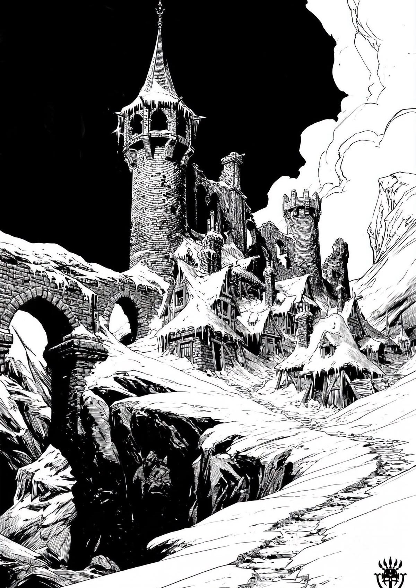
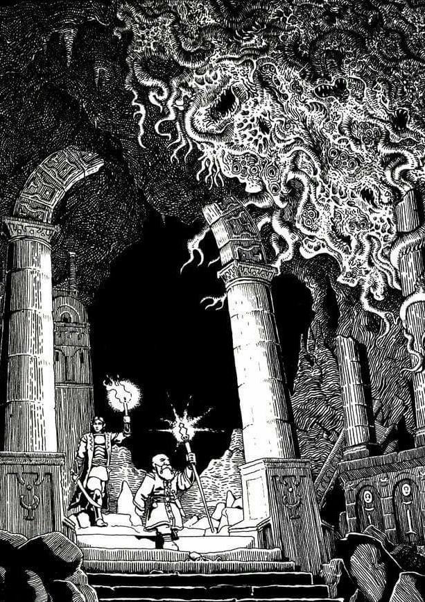

Run these ten steps in order, every day. On the first morning, generate the starting hex — §3, §4, §5 — before Step 1: the weather is read off the terrain.
| Book | What it gave this book | On the table? | Opens at |
|---|---|---|---|
| Shadowdark core rules | Everything this book does not restate — checks, combat, treasure, XP. | Required | Shadowdark core rules p. 1 |
| Western Reaches — GM’s and Player’s Guides | The hexcrawl chassis: hexes a day, pushing, rations and the harsh climate, camping, fast travel, boats (§23), factions (19.5), the trouble engine (19.2). Where these revise core, they win. | Required | Western Reaches — GM’s Guide p. 40 |
| Thematic Foe Tables & Wildland | Every creature: denizens by terrain (§12), 47 warbands (12.1), townsfolk and retainers (§11, §15). Stat blocks are not reprinted here. | Required | Thematic Foe Tables & Wildland p. 1 |
| Tantalizing Trails | The original procedure: terrain, roads, hex events, weather conditions, troubles, NPCs, settlements, quests, crypts. | Required for crypts — §22 | Tantalizing Trails p. 1 |
| GM Companion | Points of interest and terrain hazards, nine terrains each. | Reprinted here | GM Companion p. 1 |
| Solo Reference | A digest of the Western Reaches rules; useful, never the authority. | Reprinted here | Solo Reference p. 1 |
| Written for this edition | Step order, river rule, weather events, every conversion. | — | — |
Steps 1 to 10, in the order you play them.
| 2d6 | Grasslands | Forest | Hills, Mountains | Jungle | Swamp | Desert | Glacier | Sea / Lake |
|---|---|---|---|---|---|---|---|---|
| Stormy † — 2 to 4, one day in six | ||||||||
| 2 | Thunderstorm | Downpour | Mountain blizzard | Monsoon rain | Thunderstorm | Sandstorm | Blizzard | Storm at sea |
| 3 | Driving rain | Windthrow gale | Gale force winds | Torrential downpour | Thick white fog | Scorching heat | Whiteout | Squalls |
| 4 | Gale on the plain | Cold soaking rain | Cold driving rain | Steam heat | Sickening damp heat | Scouring wind | Ice wind | Sea fog |
| Fair — 5 to 9 | ||||||||
| 5 | Gusting wind | Dripping canopy | Thin cold air | Close and humid | Standing mist | Dry and blazing | Hard frost | Heavy swell |
| 6 | Overcast | Still and humid | Low cloud | Brief showers | Drizzle | Cold night ahead | Pale overcast | Light chop |
| 7 | Warm and dry | Overcast | Grey and still | Heavy air | Grey and humid | Hot and hazy | Bitter calm | Grey and steady |
| 8 | Light rain | Leaf-fall winds | Passing showers | Warm drizzle | Midges rising | Dust devils | Light snow | Brisk wind |
| 9 | High haze | Morning mist | Bright, then cloud | Overcast and sticky | Low cloud | Shimmering heat | Ice fog lifting | Rain showers |
| Excellent ° — 10 to 12, one day in six | ||||||||
| 10 | Clear skies | Dappled sun | Clear and cold | Bright and breathless | Still and clear | Cool clear sky | Still and brilliant | Fair wind |
| 11 | Cool breeze | Crisp and bright | Sharp clear air | Cool after rain | Dry breeze | Mild and dry | Clear and windless | Following breeze |
| 12 | Endless blue | Golden afternoon | Peaks in sunlight | Clear and fresh | Bright and cool | Gentle breeze | Mild, thawing | Steady fair breeze |
From1 · Start of the day — the loop, step 1Next1 · The band, belowSourceWestern Reaches — GM’s Guide p. 40 · Written for this edition
| Band | Effect |
|---|---|
| Excellent ° | Roll the next weather with advantage. |
| Fair | No effect. |
| Stormy † | Normal terrain is difficult today: every hex costs 2 MC, roads included. No outdoor rest. |
| Severe ‡ | Stormy in a harsh climate, right. Terrain is impassable today. Weather event — §9.1. |
From1 · Daily weather by terrain, aboveNextSevere → §9.1 · Harsh? Climate by terrain, right · Else → §2SourceWestern Reaches — GM’s Guide p. 40 · Written for this edition
| Affects | Rule |
|---|---|
| Rations | Double, per character and mount, or count as none. |
| Forage and hunt | DC 18. Impossible on a stormy day. |
| Rest | May be impossible. Find shelter or a settlement. |
From1 · Climate by terrain, rightNext→ §2 · Tonight: rations §8.1, rest §8.4SourceWestern Reaches — GM’s Guide p. 42 · Solo Reference p. 14
| Terrain | Spring, fall | Summer | Winter |
|---|---|---|---|
| Grasslands | Temperate | Hot * | Cold * |
| Forest, Hills | Temperate | Temperate | Cold * |
| Mountains | Temperate | Temperate | Cold * |
| Jungle | Hot * | Sweltering ** | Temperate |
| Swamp | Temperate | Sweltering | Cold * |
| Desert | Hot * | Scorching ** | Temperate |
| Glacier | Cold * | Cold * | Freezing ** |
| Sea / Lake | Temperate | Temperate * | Cold * |
From1 · Weather bands, leftNext1 · Harsh climate, leftSourceWestern Reaches — GM’s Guide p. 43
| Mode | MC | Mode | MC |
|---|---|---|---|
| On foot | 4 | By water | the boat's Speed — 23.1 |
| Mounted | 6 |
From§1 weatherNext2 · Terrain cost, rightSourceWestern Reaches — GM’s Guide p. 40 · Solo Reference p. 13
| Terrain | MC | Hexes a day on foot |
|---|---|---|
| Grasslands | 1 | 4 |
| Desert | 1 | 4 |
| Hills | 1 | 4 |
| Glacier | 2 | 2 |
| Forest | 2 | 2 |
| Jungle | 2 | 2 |
| Swamp | 2 | 2 |
| Mountains | 2 | 2 |
From2 · Daily budget, leftNext2 · Modifiers, belowSourceWestern Reaches — GM’s Guide p. 41 · Tantalizing Trails p. 29
| Condition | MC | Detail |
|---|---|---|
| Road on the edge used | 1 | Replaces the terrain cost. |
| River crossing, no bridge | 2 | Replaces the terrain cost: difficult. 1 with a boat. In flood, roll 1d6. On 1–2: STR or DEX DC 12, failure sweeps that character and one item to the next hex. |
| Muddy terrain | 2 | Counts as difficult. Foraging costs double — 8.2. |
| Shortcut | 1 | Counts as normal. |
| Hard to navigate | 2 | Counts as difficult. |
| Deep Chasm | blocked | Blocks the two edges it touches. Go around or find a bridge. |
From2 · Terrain cost, aboveNext2 · Spend it in this order, belowSourceWestern Reaches — GM’s Guide p. 41 · Tantalizing Trails p. 29
| Effect | Detail |
|---|---|
| When | At the start of the day. It cannot be taken back. |
| Budget | ×1.5: 6 MC on foot, 9 mounted, 1.5 × the boat’s Speed, rounded down. |
| Encounters | +1-in-6 on today’s checks — §6. |
| Food | No foraging or hunting today — 8.2, 8.3. |
From§2 — before the first hexNext2 · Spend it in this order, belowSourceWestern Reaches — GM’s Guide p. 40
| DC | When | What a failure costs |
|---|---|---|
| — | A road, river or coast runs the whole way. | — |
| 12 | Open country, unknown hex. The default. | Roll 1d6 for the edge. They enter that hex instead and pay its MC. Generate it if unknown. |
| +3 | Travelling in darkness. | As DC 12. |
| +3 | Stormy weather — §1. | The drift costs the whole day. Make camp on arrival — §8. |
| +3 | Hard to navigate terrain — modifiers, above. | They drift twice. Roll 1d6 for the hex they enter, then 1d6 again from that hex for the one after it. If the second roll gives water or impassable terrain they stop in the first. |
| +3 | A hazard has taken the landmarks — §10.3. | As DC 12. |
From§2 spend it in this order, above — the route is unknownNext→ §3 for whichever hex they are standing inSourceShadowdark core rules p. 94 · Written for this edition
| Journey | Rations each | Rule |
|---|---|---|
| A few days | 1–3 | |
| About a week | 3 | |
| Several weeks | 3 a week | |
| Short of rations | — | Arrive drained: lose CON equal to half current CON, rounded down, and disadvantage on checks and attacks until a successful rest. |
| Scavenge | INT | One character checks for the group. On a success nobody arrives drained. |
From§2, when the whole route is already exploredNext→ §8SourceWestern Reaches — GM’s Guide p. 45 · Solo Reference p. 14
| d100 | Terrain | Cold | Hot |
|---|---|---|---|
| 01–09 | Sea / Lake | — | — |
| 10–18 | Glacier | Snowfields | — |
| 19–34 | Grasslands | Moor | Savanna |
| 35–44 | Jungle | — | Tropical forest |
| 45–57 | Forest | Evergreen forest | — |
| 58–70 | Hills | Tundra | — |
| 71–82 | Mountains | Frozen peaks | Plateau |
| 83–90 | Swamp | — | — |
| 91–100 | Desert | — | — |
From§2 move — a first visit, or the first hex of a playthroughNextSea / Lake → §23 · Land → 3.1SourceTantalizing Trails p. 6 · Shadowdark core rules p. 136 · Sandbox Generator — Biomes p. 4
| Road edges | 1d6 | Result |
|---|---|---|
| 0 | 1 | A new road begins at the hex’s special feature — §4. Roll 1d6 for its exit edge. |
| 0 | 2–6 | No new road. |
| 1 | 1 | The road ends at the hex’s special feature — §4. |
| 1 | 2–4 | Continues without branching. Roll one exit edge. |
| 1 | 5 | Branches once. Roll two exit edges. |
| 1 | 6 | Branches twice. Roll three exit edges. |
| 2 | 1 | Both roads end at the hex’s special feature — §4. |
| 2 | 2–4 | Connect the two road edges through the hex. |
| 2 | 5 | One branch. Roll one exit edge. |
| 2 | 6 | Two branches. Roll two exit edges. |
| 3 | 1 | All roads end at the hex’s special feature — §4. |
| 3 | 2–5 | The three roads meet at an intersection. No new exits. |
| 3 | 6 | Roll one exit edge. |
| 4+ | — | Connect all road edges at an intersection. |
From§3 terrain — any land hexNext→ 3.2 riversSourceTantalizing Trails p. 7
| Terrain | Rises | Terrain | Rises |
|---|---|---|---|
| Glacier | 40% | Mountains | 20% |
| Swamp | 30% | Grasslands | 15% |
| Jungle | 30% | Hills | 15% |
| Forest | 25% | Desert | 10% |
From3.1 roadsNext3.2 · How it runs, belowSourceTantalizing Trails p. 7 · Written for this edition
| Case | What to do |
|---|---|
| One flows in | Lake check, below. |
| Two or more flow in | They merge into one. Lake check, below. |
| Exit edge is a generated hex with no river | Reroll. |
| Exit edge is Sea / Lake | It empties there. |
From3.2 · River source, aboveNext→ §4SourceWritten for this edition · Tantalizing Trails p. 7
| Terrain | Lake: this hex | Long lake: + 1 hex | Great lake: + 1d3 hexes |
|---|---|---|---|
| Desert, Glacier | 1–6 | — | — |
| Mountains, Hills | 1–3 | 4–6 | — |
| Forest, Jungle, Swamp, Grasslands | 1–3 | 4–5 | 6 |
From3.2 · Lake check, aboveNext→ §4SourceWritten for this edition
| 2d6 | Hex with a road | Roadless hex |
|---|---|---|
| 2 | 1–3 Dungeon; 4–6 Catacombs (1+1d3 levels) | Monastery |
| 3 | Portal | Village — build it in 15.1. In Desert or Glacier, empty landscape instead. |
| 4 | Monastery | Keep |
| 5 | Keep. Odd: on the road. Even: not. | Portal. Reroll if one already exists. On 1–4 also roll another feature. |
| 6 | Trading Post | Ancient Crypt |
| 7 | Settlement. 1d6 for the band: 1–3 Village, 4–5 Town, 6 City — then 15.1 | 1–3 Catacombs; 4–6 Cavern |
| 8 | Tavern | Ruins / Open-Air Dungeon |
| 9 | Settlement. 1d6 for the band: 1–3 Village, 4–5 Town, 6 City — then 15.1 | Village — build it in 15.1. In Desert or Glacier, empty landscape instead. |
| 10 | Shrine. On 1–4 also roll another feature. | Deep Chasm. Roll the edge; it blocks passage. |
| 11 | Empty landscape. No feature; the hex plays as normal. | Shrine. Reroll if one already exists. On 1–2 also roll another feature. |
| 12 | Creature Lair | Creature Lair |
From3.2 riversNext→ §5. What the feature is → §13SourceTantalizing Trails p. 8
| 3d6 | Event |
|---|---|
| 3 | Divine favour. +1 to attacks, AC and checks until the journey ends or the next settlement. |
| 4 | Hidden chest. A note or map. Gain 1 clue. |
| 5 | Dragon in the sky. DEX to hide: DC 12 in Forest, Jungle, Swamp or Mountains, DC 15 in the open. Failure: it attacks. No treasure. |
| 6 | Extraordinary encounter. 1d6: 1–3 Weird monster; 4–6 Boss. → 12.1 |
| 7 | Quiet journey. No further event. |
| 8 | Weather. Stormy today: Hot or Cold — 9.1. Otherwise Fair-weather events — 9.1. Then roll here again, ignoring a second weather result. |
| 9 | Biome denizens. → §12. On 1–2 neither side is hidden; on 3–6 the party is undetected — 6.1. |
| 10 | NPC encounter. → §11 |
| 11 | Vermin. Small pests from the biome. → 12.1 |
| 12 | Minions. → 12.1. DEX DC 12 to slip past unseen. |
| 13 | Imperial patrol. Military support while on a continuous road. Roll again here. |
| 14 | Cave entrance. 4+1d6 areas. Optional. No automatic boss. |
| 15 | Trouble. → §10.1 |
| 16 | Ambush. → §6 wandering monsters, undetected until they strike — 6.1. No automatic treasure. |
| 17 | Corpse. 1d6: 1 disease; 2–3 nothing; 4 1d6 gp; 5 3d6 gp; 6 one potion. |
| 18 | Wilderness hazard. → §10.2 |
From§4 feature — the hex has a roadNextThe arrow in the row, then §6SourceTantalizing Trails p. 10
| 3d6 | Event |
|---|---|
| 3 | Hidden chest. A note or map. Gain 1 clue. |
| 4 | Trouble. → §10.1 |
| 5 | Dragon in the sky. DEX to hide: DC 12 in Forest, Jungle, Swamp or Mountains, DC 15 in the open. Failure: it attacks. No treasure. |
| 6 | Quiet journey. No further event. |
| 7 | Weird monster. → 12.1. On 1–3 it is undetected; on 4–6 the party is — 6.1. |
| 8 | Weather. Stormy today: Hot or Cold — 9.1. Otherwise Fair-weather events — 9.1. Then roll another non-weather event. |
| 9 | Wilderness hazard. → §10.2 |
| 10 | Biome denizens. → §12. On 1–2 they are undetected; 3–5 neither is; 6 the party is — 6.1. |
| 11 | Minions. → 12.1. DEX DC 12 to slip past unseen. |
| 12 | Trouble. → §10.1 |
| 13 | Ambush. → §6 wandering monsters, undetected until they strike — 6.1. No automatic treasure. |
| 14 | NPC encounter. → §11 |
| 15 | Cave entrance. 4+1d6 areas. Optional. |
| 16 | Corpse. 1d6: 1 disease; 2–3 nothing; 4 1d6 gp; 5 3d6 gp; 6 one potion. |
| 17 | Cursed aura. −1 to attacks, AC and checks until the next settlement. A blessing removes it. |
| 18 | Treasure map. Mark a random hex. Digging takes 1+1d4 days, each with the hex’s encounter checks — §6. A shovel is required. 2-in-6 the treasure is gone. |
From§4 feature — the hex has no roadNextThe arrow in the row, then §6SourceTantalizing Trails p. 11
| When | Checks | Encounter on | Pushing |
|---|---|---|---|
| By day | 2 | 1 | 1–2 |
| Overnight | 2 | 1 | 1–2 |
From§5 resolved, or §2 a known hexNext6 · A hit → What appearsSourceWestern Reaches — GM’s Guide p. 40
| 2d6 | Source |
|---|---|
| 2 | Boss — 12.1 |
| 3–4, 6–8, 10–11 | Terrain denizen — §12 |
| 5 | Minions — 12.1 |
| 9 | Vermin — 12.1 |
| 12 | Weird Monster — 12.1 |
From6 · Cadence, left — the die came up 1NextWho: §12 or 12.1 · then 6.1SourceTantalizing Trails p. 12
| 1d6 | Range |
|---|---|
| 1 | Close |
| 2–4 | Near |
| 5–6 | Far |
From§6 · What appearsNext6.1 · Activity, rightSourceShadowdark core rules p. 116
| 2d6 | Doing what | 2d6 | Doing what |
|---|---|---|---|
| 2–4 | Hunting | 9–10 | Socialising |
| 5–6 | Eating | 11 | Guarding |
| 7–8 | Nesting or sheltering | 12 | Sleeping |
From6.1 · Distance, leftNext6.1 · Reaction, belowSourceShadowdark core rules p. 116
| 2d6 | Reaction | At the table |
|---|---|---|
| 0–6 | Hostile | Attacks, or demands what the party will not give. |
| 7–8 | Suspicious | Wary. Will not approach. May shadow the party. |
| 9 | Neutral | Indifferent. Will trade or pass by. |
| 10–11 | Curious | Approaches. Asks questions. May offer information. |
| 12+ | Friendly | Offers help, food, directions or a warning. |
From6.1 · Activity, aboveNext6.1 · Surprise, rightSourceShadowdark core rules p. 117 · Solo Reference p. 10
| Rule | Detail |
|---|---|
| Who has it | Whoever is undetected when the encounter begins. Nothing is rolled for surprise itself. |
| To go unseen | The hiding side rolls DEX. To notice it, the other side rolls WIS. |
| Granted by a result | A §5 row that rolls 1d6 for it says who is undetected, and the two tables differ. An Ambush gives it to the creature. |
| Check once | Never check surprise twice in one encounter. |
| Naturally hostile | Mindless undead and the like ignore a friendly reaction. |
From6.1 · Reaction, leftNextResolve, then §7SourceShadowdark core rules p. 91 · Solo Reference p. 6
| Action | Go to |
|---|---|
| Explore the land | §13.3 points of interest |
| Forage or fish | §8.2 |
| Interact with the feature | §13 |
| Keep moving | §2 |
| Make camp | §8.3 |
| Rest in the wilderness | §8.4 |
From§6, once the encounter is overNext7 · The section in the Go to columnSourceWritten for this edition
| Who | Normal | Harsh climate |
|---|---|---|
| Each character | 1 | 2 |
| Each retainer | 1 | 2 |
| Each mount | 1 | 2 |
From§8 make campNext8.1 · Short → Going hungry, rightSourceWestern Reaches — GM’s Guide p. 40 · Western Reaches — GM’s Guide p. 42
| Balance | Consequence |
|---|---|
| 0 or more | No penalty. |
| Short by any | 1 CON damage that day, each character, retainer and mount that did not eat. At 0 CON, death. |
| Harsh climate | Double rations, or it counts as eating none — §1. |
| Paying it back | Eating stops the damage but does not return the CON. That comes back on a rest — 8.4. |
From8.1 · Consumption, left — not enough rationsNext→ 8.2 to find foodSourceWestern Reaches — GM’s Guide p. 40 · Shadowdark core rules p. 94
| Terrain | Forage DC | Hunt DC | Fish DC |
|---|---|---|---|
| Grasslands | 12 | 12 | 12 |
| Forest | 9 | 9 | 12 |
| Hills | 12 | 12 | 12 |
| Jungle | 9 | 9 | 12 |
| Swamp | 9 | 15 | 12 |
| Glacier | 18 | 15 | — |
| Desert | 18 | 15 | — |
| Mountains | 18 | 15 | 15 |
| Sea / Lake | — | — | 9 |
| River or coast | 12 | 12 | 9 |
From§7 forage or fish, 8.3 Hunt task, or 8.1 short rationsNext8.2 · Success → 1 ration; a Hunt → What the hunt brings, below. Failure → Mishaps, belowSourceWestern Reaches — GM’s Guide p. 40 · Shadows of the Wild p. 4 · Tantalizing Trails p. 36
| 2d6 | Rations | Quarry |
|---|---|---|
| 2 | 1 | Carrion, barely worth the knife |
| 3 | 1 | A brace of birds |
| 4 | 1 | A snared hare |
| 5 | 2 | Rabbits, a warren’s worth |
| 6 | 2 | Wildfowl off the water |
| 7 | 2 | A young boar or a goat |
| 8 | 3 | A deer |
| 9 | 3 | A wild pig, full grown |
| 10 | 4 | A stag |
| 11 | 4 | An elk or a wild ox |
| 12 | 4 | Big game — and a predator wants it. Encounter → §6 |
From8.3 — a successful HuntNext→ 8.3SourceWestern Reaches — GM’s Guide p. 44 · Written for this edition
| 1d10 | Forage | Hunt | Fish |
|---|---|---|---|
| 1–4 | Nothing happens. | Nothing happens. | Nothing happens. |
| 5 | Poisoned food. Disadvantage on checks and attacks for 6 hours. | Poisoned kill. Disadvantage on checks and attacks for 6 hours. | Snagged hook. STR or DEX DC 12, or lose the gear. |
| 6 | Leeches or ticks. 1 damage. DEX DC 12 or 1 more. | Another hunter’s trap. 1 damage. STR DC 12 or 1 more. | Hook through a finger. Disadvantage with your hands for 6 hours. |
| 7 | Twisted ankle. 1 damage, movement halved until magic or INT DC 15 treats it. | Twisted ankle. As Forage. | Insect bites. Disadvantage on checks and attacks for 6 hours. |
| 8 | Armour damaged. AC −1, 3 hours to repair. | Weapon damaged. Unusable, 3 hours to repair. | Gear breaks. 3 hours to repair. |
| 9 | A wild animal. Wolf, bear or worse. Reaction → 6.1. | A wild animal. As Forage. | Something bites back. 1 damage. |
| 10 | You make noise. Encounter → §6. | You make noise. As Forage. | You make noise. As Forage. |
From8.2 · A failed check, aboveNextResolve it, then back to §7 or 8.3SourceShadows of the Wild p. 5
| Task | Check | Effect |
|---|---|---|
| Bed Down * | WIS or CON | No CON check needed to benefit from the rest if sleep is interrupted — 8.4. |
| Cook * | INT or WIS | Anyone eating a ration gains +2 temporary HP for 1 day. |
| Craft * | DEX | 2d4 mundane ammunition, or 1 torch, or repair mundane gear. |
| Entertain * | CHA | Give 1 Luck Token to another character. |
| Firewood | STR or CON | A campfire without spending torches. |
| Hunt | STR or DEX | Hunt DC for the terrain — 8.2. Success: roll What the hunt brings. Never on a day you pushed. |
| Keep Watch * | WIS | The party cannot be surprised for half the rest. You choose which half. |
| Predict | INT or WIS | Learn the next weather, then reroll it once. |
From8.2 food sortedNext→ 8.4SourceWestern Reaches — GM’s Guide p. 44 · Tantalizing Trails p. 36
| Item | Detail | Item | Detail |
|---|---|---|---|
| Fuel | 3 torches. | Light | Up to Near. |
| Duration | 8 hours. | Requirement | One character stays near. |
From8.3 camp tasksNext8.4 · Rest, rightSourceWestern Reaches — GM’s Guide p. 44 · Shadowdark core rules p. 90
| Rule | |
|---|---|
| It takes | Eight hours' sleep and a ration. |
| It gives back | All lost HP and all stat damage. |
| Interrupted | Each stressful interruption: DC 12 CON, or the ration is spent for nothing. |
From8.4 · Campfire, leftNext→ §25 record, then §1 tomorrowSourceShadowdark core rules p. 90 · Solo Reference p. 8
The tables that steps 5 to 7 send you to.
| 2d6 | Event | What it does | Spread |
|---|---|---|---|
| 2 | Wildfire | CON in a burning hex or 1d4. Spread grows by 1 each day. Burnt ground after: no forage. Swamp: peat fire, the ground gives way, DEX or fall. Sea: lightning fire aboard. | 1 |
| 3 | Lightning storm | DEX or 1d6, disadvantage in metal armour. Mounts bolt on a failed WIS. Dry ground may catch: Wildfire on a 1-in-6. | 1 |
| 4 | Heat wave | CON or 1 damage and −1 to checks. Heavy armour: disadvantage. Forage DC +3. Sea: becalmed, no sailing. | 2 |
| 5 | Flash flood | Rivers impassable, fords gone. +1 MC. 1d4 rations spoil. Desert: the wadis run. | 2 |
| 6 | Windstorm | Dust storm, gale or blowdown. No ranged attacks. +1 MC. Navigation DC +3. No fire, tents lost. | 2 |
| 7 | Thunderstorm | Downpour. Navigation DC +3. No fire or outdoor rest without shelter. Sea: squalls, +1 MC. | 2 |
| 8 | Hailstorm | DEX or 1 damage. Glass and flasks may break. Shelter prevents it. No hunting. | 1 |
| 9 | Ground gives way | Mudslide, washout, bog collapse or dune slip. Road gone, +1 MC. DEX or lose a piece of gear. Sea: cliff fall, shore path gone. | 1 |
| 10 | Swarm | Midges, locusts or jellyfish at sea. Disadvantage on every check. No rest. Locusts: no forage, 1d4 rations eaten. | 1 |
| 11 | Collapse | Treefall, sinkhole, rockfall or sand slide. DEX or 1d6. The track is blocked. Sea: rogue wave, DEX or overboard. | 1 |
| 12 | Twister | DEX or 2d6. Mounts and 1d4 rations lost. Sea: waterspout, the vessel takes damage. | 1 |
From§1 severe day · §5 · §23 seaNextBack to §1, §5 or §23SourceTantalizing Trails p. 20 · Written for this edition
| 2d6 | Event | What it does | Spread |
|---|---|---|---|
| 2 | Avalanche | DEX or 2d6 and buried; STR to dig out, 1 damage a round. Pass shut. Glacier: serac collapse. Lowland: drifts bury the road. Sea: the vessel founders under ice. | 1 |
| 3 | Thundersnow | DEX or 1d6. Navigation DC +3. | 1 |
| 4 | Cold snap | CON or 1 damage. No outdoor rest without a fire. Rivers freeze hard enough to walk. | 2 |
| 5 | Freezing rain | Ice on everything. +1 MC. DEX each hex or fall for 1d4. Swamp: chill rain, no fire can be lit. | 2 |
| 6 | Ice gale | No ranged attacks. +1 MC. Navigation DC +3. No fire, tents lost. | 2 |
| 7 | Blizzard | Navigation DC +3. +1 MC. CON or 1 damage at night without a fire. Sea: snow squalls, +1 MC. | 2 |
| 8 | Rime squall | DEX or 1 damage. Gear ices over: −1 to checks until thawed at a fire. | 1 |
| 9 | Freezing fog | No ranged attacks. Navigation DC +3. Either side may be surprised. +1-in-6 on the night’s encounter checks. | 2 |
| 10 | Thin ice | A frozen river or lake that will not hold. DEX or fall in: CON or 1d6. Glacier: a snow bridge over a crevasse. Sea: pack ice closes, no sailing. | 1 |
| 11 | Ice jam | A river backs up and bursts. As Flash flood, Hot 5. | 1 |
| 12 | Killing cold | CON or 1d6 each night without a fire. Water and rations freeze. No forage. | 2 |
From§1 severe day · §5 · §23 seaNextBack to §1, §5 or §23SourceTantalizing Trails p. 20 · Written for this edition
| 2d6 | Event | What it does | Spread |
|---|---|---|---|
| 2–3 | Thaw | Rivers swollen, fords gone. +1 MC at crossings. | 2 |
| 4–5 | Haze | Heat haze, mirage or sea haze. Navigation DC +3. | 2 |
| 6–8 | Fog bank | No ranged attacks. Either side may be surprised. Escape is easier. | 2 |
| 9–10 | Still air | Sound carries: neither side can be surprised. Sea: becalmed, no sailing. | 2 |
| 11–12 | Bloom | Rain in the night. Forage DC −3, the game returns. | 2 |
From§5 weather resultNextBack to §5SourceTantalizing Trails p. 20 · Written for this edition
| 1d10 | Trouble | Effect |
|---|---|---|
| 1 | Smoke and fire | 1d6: on 1–3 the crossing costs +1 MC; on 4–6 side edges are impassable until the next long rest. |
| 2 | Bad weather | 1d6: 1–2 must camp; 3–4 wind scatters one exposed mundane item; 5–6 fog adds +1 MC and a 50% chance of becoming lost. |
| 3 | Spoiled food | Half the rations are lost, rounded up. |
| 4 | Lost | +1 MC delay. 1d6: on 1–2 return to the previous hex; on 3–6 enter a random adjacent hex. |
| 5 | Camp disease | Two random characters: CON DC 12. Failure causes −1 to checks until treated or after 3 days of rest. |
| 6 | Mosquito swarm | Everyone: CON DC 12. Failure causes −1 to checks while in Forest, Jungle or Swamp. |
| 7 | Terrain injury | A random character takes 1d4 damage and loses 1 MC/day until treated or after 3 days of rest. |
| 8 | Unholy site | WIS DC 12. Failure causes −1 to attacks until blessed or treated. |
| 9 | Magic drain | Each spellcaster: CON DC 12. Failure loses one lowest-tier spell slot until a safe rest. |
| 10 | Dead end | The route is blocked. Backtracking costs the previous hex's MC and needs a new route. |
From§5 hex event, or 10.2 — TroubleNextBack to §5, then §7SourceTantalizing Trails p. 18
| 2d6 | Hazard | Effect |
|---|---|---|
| 2 | Cursed ritual site | Perception or Arcana to notice. If not avoided, a Weird monster with a thematic resistance appears. If defeated, treasure plus an extra discovery. |
| 3 | Trouble | → §10.1 |
| 4 | Hard to navigate | Terrain counts as difficult. Roll another event; not this one or Shortcut. |
| 5 | Mosquito swarm | −1 to checks in Forest, Jungle or Swamp. Ignore if rain or cold makes it implausible. |
| 6 | Landslide | Route blocked. Detour, +1 MC, then roll another event. |
| 7 | Muddy terrain | Terrain counts as difficult. Foraging costs double — 8.2. |
| 8 | Hunter's trap | DEX check or take damage and be held until freed. |
| 9 | Quicksand | STR or DEX to escape. Carried load may be lost. |
| 10 | Shortcut | Terrain counts as normal. Roll another event; not this one or Hard to Navigate. |
| 11 | Flood | The crossing is impassable or dangerous. Wait, detour, or make a STR check to cross. |
| 12 | Toll taker | Someone claims the right of passage. Pay, negotiate, evade or fight. |
From§5 hex event — Wilderness hazardNextBack to §5, then §7SourceTantalizing Trails p. 21
| Column | Effect |
|---|---|
| Movement | Restricts or prevents movement. Costs time and torches. May trap the party. |
| Damage | Deals damage once or every round. At 0 HP roll a death timer. |
| Weaken | Weakens, confuses or impairs. Often limits the senses. |
| Doubles | Combine all three hazards on that row into one. |
From§13.3 — a hazard resultNext10.3 · The terrain table belowSourceGM Companion p. 17
| 1d6 | 1–2 Movement | 3–4 Damage | 5–6 Weaken |
|---|---|---|---|
| 1 | Illusory magic | Frost runes | Sudden cold snap |
| 2 | Thick grasses | Blinding smoke | Magical exhaustion |
| 3 | Hidden tar pits | Biting insects | Relentless downpour |
| 4 | Thunderstorm | Lightning strike | Clouds of smoke |
| 5 | Windblown grasses | Acidic rainfall | No visual landmarks |
| 6 | Heavy driving winds | Sweeping wildfire | Bright sunlight |
From§13.3 — a hazard result, at the severity its entry namesNextPlay it. Doubles combine all three — see §10.3 aboveSourceGM Companion p. 19
| 1d6 | 1–2 Movement | 3–4 Damage | 5–6 Weaken |
|---|---|---|---|
| 1 | Slick lichen & mosses | Boiling geyser spout | Sudden frosty wind |
| 2 | Falling rotten trees | Sharp pine needles | Taunting pixies |
| 3 | Tough undergrowth | Pools of acidic slime | Windblown leaves |
| 4 | Heavily eroded slopes | Rolling logs | Strength sapping fog |
| 5 | Thick white mist | Big thorny bushes | Magical dead-zone |
| 6 | Many gopher holes | Pecking birds | Confusing bark runes |
From§13.3 — a hazard result, at the severity its entry namesNextPlay it. Doubles combine all three — see §10.3 aboveSourceGM Companion p. 19
| 1d6 | 1–2 Movement | 3–4 Damage | 5–6 Weaken |
|---|---|---|---|
| 1 | Fast flowing streams | Boulder rockslide | Windblown dirt |
| 2 | Limited sight distance | Frozen spikes | Endless blue mist |
| 3 | Steep inclines | Quick lava flow | Powerful echoes |
| 4 | Sluggish lava flow | Collapsing arch | Magical silence |
| 5 | Gale force winds | Avalanche | Windblown snow |
| 6 | Slippery pebbles | Thorny undergrowth | Magical darkness |
From§13.3 — a hazard result, at the severity its entry namesNextPlay it. Doubles combine all three — see §10.3 aboveSourceGM Companion p. 20
| 1d6 | 1–2 Movement | 3–4 Damage | 5–6 Weaken |
|---|---|---|---|
| 1 | Sandy ground | Shocking water | Exhausting insects |
| 2 | Thick white fog | Toxic spore cloud | Sickening smell |
| 3 | Grasping vines | Stinging insects | Muddy ground |
| 4 | Soft boggy ground | Falling rotten trees | Blinding bog gasses |
| 5 | Thunderstorm | Acidic rainfall | Darkened skies |
| 6 | Patches of quicksand | Spiked undergrowth | Extreme humidity |
From§13.3 — a hazard result, at the severity its entry namesNextPlay it. Doubles combine all three — see §10.3 aboveSourceGM Companion p. 20
| 1d6 | 1–2 Movement | 3–4 Damage | 5–6 Weaken |
|---|---|---|---|
| 1 | Unstable slopes | Biting army ants | Darkened canopy |
| 2 | Visual obstruction | Poisonous frogs | Unnatural silence |
| 3 | Sandy ground | Toxic gasses | Anti-magic zone |
| 4 | Thick white fog | Boiling steam vents | Extreme humidity |
| 5 | Grasping vines | Ancient pit traps | Magical confusion |
| 6 | Hurricane winds | Spiky undergrowth | Muddy ground |
From§13.3 — a hazard result, at the severity its entry namesNextPlay it. Doubles combine all three — see §10.3 aboveSourceGM Companion p. 19
| 1d6 | 1–2 Movement | 3–4 Damage | 5–6 Weaken |
|---|---|---|---|
| 1 | Pools of quicksand | Poisonous cactus | No visual landmarks |
| 2 | Maze of boulders | Burning hot rocks | Windblown sand |
| 3 | Distant oasis mirage | Wall of magical fire | Ghostly visions |
| 4 | Radiant distortions | Overwhelming heat | Magical silence |
| 5 | Volatile black tar pits | Ancient runestones | Exhausting heat |
| 6 | Thick grasping sands | Incendiary cloud | Disorienting sounds |
From§13.3 — a hazard result, at the severity its entry namesNextPlay it. Doubles combine all three — see §10.3 aboveSourceGM Companion p. 18
| 1d6 | 1–2 Movement | 3–4 Damage | 5–6 Weaken |
|---|---|---|---|
| 1 | Deep snowbanks | Concealed crevasse | Bright sunlight |
| 2 | Heavy driving winds | Pummeling hail | Magical confusion |
| 3 | Slippery ice on rocks | Toxic fungal bloom | Exhausting gases |
| 4 | Spongy moss beds | Thin ice over ponds | Numbing cold |
| 5 | Whiteout snowstorm | Elk herd stampede | Magnetic anomaly |
| 6 | Rocks under the snow | Windblown ice shards | No visual landmarks |
From§13.3 — a hazard result, at the severity its entry namesNextPlay it. Doubles combine all three — see §10.3 aboveSourceGM Companion p. 18
| 1d6 | 1–2 Movement | 3–4 Damage | 5–6 Weaken |
|---|---|---|---|
| 1 | Very fine sands | Windblown limbs | Foul sea breeze |
| 2 | Endless sea fog | Poisonous algae | Creaking noises |
| 3 | Unnaturally high tides | Breaking tsunami | Panicked wildlife |
| 4 | Driftwood debris | Sharp cutting hail | Magical laughter |
| 5 | Unstable pebbles | Stinging sea winds | Pinching crabs |
| 6 | Nesting pits | Biting sand fleas | Powerful winds |
From§13.3 — a hazard result, at the severity its entry namesNextPlay it. Doubles combine all three — see §10.3 aboveSourceGM Companion p. 18
| Book | Table | What you get | Where |
|---|---|---|---|
| Shadowdark core | Encounters by terrain | A d100 for every terrain you can be standing in — Arctic, Cave, Deep Tunnels, Desert, Forest, Grassland, Jungle, Mountain, Ocean, River and Coast, Ruins, Swamp, Tomb. Thirteen tables, two pages each, in that order. | p. 146 |
| Western Reaches, GM | Path Encounters | d100 for a road or a path — also 11.1. | p. 62 |
| The Monster Overhaul | Hostile Forests | A forest that is itself the problem. | p. 236 |
| The Monster Overhaul | Spring, Summer, Fall, Winter | Four chapters keyed to the season rather than the ground. | p. 194 |
| d100 Forest Hooks | The whole book | 100 ready situations. Not creatures — predicaments. | p. 4 |
| Situations | The whole book | Encounters built to be walked into rather than fought. | p. 3 |
| Entanglements | The whole book | Complications that attach to a party and stay attached. | p. 2 |
From§10.1 or §10.2 — you want something better than a d10NextRoll there, then back to §7SourceShadowdark core rules p. 146 · Western Reaches — GM’s Guide p. 62 · The Monster Overhaul p. 236 · d100 Forest Hooks p. 4
| 1d20 | Who | Situation |
|---|---|---|
| 1 | Wagon destroyed | Wreckage and signs of attack. Roll a minion encounter, then search for survivors, cargo or clues. |
| 2 | Goblins arguing over a map | CHA or INT DC 12. Success grants a clue; failure ends the argument. |
| 3 | Bandits seeking a campsite | Negotiate, pay a toll, trick or fight. A failed social check may mean partial robbery. |
| 4 | Horse trader | Offers a mount at local prices. |
| 5 | Hunters by a campfire | Share food: the party eats no rations tomorrow, and one adjacent hex is revealed. |
| 6 | Orc archer patrol | Demands provisions or attacks. Negotiate, intimidate or pay in rations. |
| 7 | Elderly robbery victim | Offers a recovery quest. Generate a small dungeon in a random hex. |
| 8 | Demonic ritual site | Investigating wakes a Weird monster or a Boss. |
| 9 | Wandering traveller | 1d6: 1 healer; 2 alchemist; 3 merchant; 4 gypsy wagon; 5 hired help; 6 a call for help. |
| 10 | Hunter's camp | Asks for help against dangerous prey nearby. |
| 11 | Farmers under attack | Helping earns healing and provisions. |
| 12 | Wilderness feast | A welcoming community offers a meal and rest. |
| 13 | Dragon in the distance | The first settlement in that direction is threatened. |
| 14 | Lost stranger | 1d6: 1 lost traveller; 2–3 elderly woman with a quest; 4–5 runaway princess; 6 injured knight. |
| 15 | Wandering minstrel | Writes a song about the party. Reputation, good or bad. |
| 16 | Suspicious caravan | 1d6: 1–4 friendly travellers with food; 5 cultists; 6 a mimic. |
| 17 | Witch | Offers a potion. Accepted: 1–3 dark vision, 4–6 bad luck. Refused: 1–4 hostile, 5–6 vanishes. |
| 18 | Traveller in peril | 1d6: 1–3 minions; 4–6 a Boss. Rescued: 1–2 peasant, 3–4 trader, 5–6 noble. |
| 19 | Glowing signs | Lead to a planar trap, a portal, or a short dungeon. |
| 20 | Hostage in an isolated house | 1d6: 1–2 no demand, imminent danger; 3–4 gold demanded; 5–6 a magic item demanded. |
From§5 hex event — NPC encounterNextReaction → 6.1 · Quest offered → §19SourceTantalizing Trails p. 13
| Book | Table | What you get | Where |
|---|---|---|---|
| This book | Path encounters | d100 of who and what you meet on a road or a path. Printed in full. | 20.3 |
| This book | Rumours in the Reaches | d100 of what they tell you once the reaction is friendly. | 20.2 |
| This book | Rumours | d100 more of the same, from core. | 20.1 |
| Shadowdark core | NPC Names | By ancestry, and by syllable on the page after. | p. 132 |
| Foe Tables, Part Four | Roads and Outskirts | d12 — poachers, outlaws, highwaymen, deserters, bounty hunters, rabid dogs. | p. 108 |
| Foe Tables, Part Four | Roads · Outlaws, Poachers and Deserters | A stat block for every one of them. | p. 118 |
| Foe Tables, Part Four | Town · Encounter Tables | d12 by place and hour — streets, docks, outskirts. For §15. | p. 107 |
| Foe Tables, Part Six | Retainers · Taking Service | Hiring the ones who will come with you. For §15. | p. 131 |
| GM Companion | NPCs | Ancestry, age, alignment and what they are carrying. | p. 52 |
| GM Companion | NPC Qualities | Three d20s — something physical, something they do, and a secret. | p. 53 |
| GM Companion | NPC Occupations | d20. What they were doing before you turned up. | p. 54 |
| GM Companion | Rival Crawlers | A rival party: ancestry, class, signature tactics and a secret. | p. 55 |
From§11 — you need more than the situationNextReaction → 6.1 · Quest offered → §19SourceThematic Foe Tables & Wildland p. 108 · GM Companion p. 52 · Thematic Foe Tables & Wildland p. 131
| Terrain in this book | Wildland table | Where |
|---|---|---|
| Grasslands | Grassland · The Open Range | p. 75 |
| Forest | Forest & Jungle · Under the Canopy | p. 78 |
| Jungle | Forest & Jungle · Under the Canopy | p. 78 |
| Hills | Hills & Moor · The High Ground | p. 81 |
| Mountains | Mountain & Crag · The Thin Air | p. 84 |
| Desert | Desert & Barren · The Open Oven | p. 87 |
| Swamp | Swamp & Fen · Standing Water | p. 90 |
| A river, in any terrain — 3.2 | River & Lakeshore · The Running Water | p. 93 |
| Sea / Lake — §23 | Sea & Deep Water · The Open Blue | p. 96 |
| Glacier | Glacier & Tundra · The White Silence | p. 100 |
| A cavern or crypt — §22 | Caves & Underground · The Lightless Country | p. 103 |
From§5 or §6 — a creature appearsNextReaction → 6.1 · A warband instead → 12.1SourceThematic Foe Tables & Wildland p. 75
| Column | What it means |
|---|---|
| Type | V vermin on 1–10, M minion on 11–20. The split is why d10 and d10+10 work. |
| No. | A flat die, already adjusted. A swarm past about two attacks per character per round is one creature with a pool of HP, not a crowd. |
| LV | Not a promise of a fair fight. A high-level creature on a d20 table is there to be avoided — the reaction roll is how you find out whether you may. |
| Harvest | What the body is worth, and the slots it costs. Hides spoil if unsold by the second settlement. |
| Reaction | Roll it before combat, always. Most of what lives in a hex has somewhere else to be — 6.1. |
From12 · Creatures by terrain, aboveNextResolve with Shadowdark, then §7SourceThematic Foe Tables & Wildland p. 74
| Terrain in this book | Factions, each with four tables |
|---|---|
| Grasslands | The Empire of Man p. 4 · Bretonnia p. 7 · The Wild Country p. 50 · The Hyborian Kingdoms p. 53 |
| Forest | Beastmen Brayherds p. 9 · Lizardmen of Lustria p. 12 · Vampire Counts p. 15 · The Pictish Wilderness p. 55 · The Black Kingdoms p. 57 · Xuchotl p. 58 |
| Jungle | Beastmen Brayherds p. 9 · Lizardmen of Lustria p. 12 · Greenskins: the Savage Tribes p. 25 · The Pictish Wilderness p. 55 · The Black Kingdoms p. 57 · Xuchotl p. 58 |
| Hills | Greenskins: Goblins and Orcs p. 19 · Greenskins: the Big Ones p. 23 · Greenskins: the Savage Tribes p. 25 |
| Mountains | Greenskins: Goblins and Orcs p. 19 · Greenskins: the Big Ones p. 23 · Dwarfs and Chaos Dwarfs p. 28 · Khitai and the East p. 60 |
| Swamp | Vampire Counts p. 15 · Stygia and the Serpent p. 61 |
| Desert | Tomb Kings of Khemri p. 31 · Stygia and the Serpent p. 61 |
| Glacier | Chaos of the Northern Wastes p. 34 · Kislev p. 37 · Nordheim p. 66 |
| Sea / Lake — §23 | Dark Elves of Naggaroth p. 39 · High Elves of Ulthuan p. 42 · The Black Coast p. 67 |
| A settlement — 15.1 | The Skaven of the Under-Empire p. 44 · Zamora and the Cities of Thieves p. 69 |
| A cavern or crypt — §22 | The Dungeon Itself p. 47 · The Deep Dark p. 48 |
| Any hex | The Outer Dark p. 72 |
From§5 or §6 — Vermin, Minions, Weird Monster or BossNextReaction → 6.1SourceThematic Foe Tables & Wildland p. 3
| Element | What to do |
|---|---|
| Level | Match the party's average level for a standard fight. For a bigger threat raise level, numbers or abilities — not all three. |
| HP | Use the Hit Dice and CON of an equivalent Shadowdark creature. |
| Extra attacks | Only when central to the creature. Never multiply attacks and damage together. |
| Immunity | Only when central. State what can hurt it. |
| Treasure | Shadowdark treasure by level. A wandering creature may carry nothing. |
From12.1 · A creature Wildland does not coverNextResolve with Shadowdark, then §7SourceWritten for this edition
| d100 | Time taken |
|---|---|
| 01–50 | Found today. No extra rations. |
| 51–90 | +1 day. 1 ration each. |
| 91–100 | +1d3 days. Rations for each day. |
From§7 interact with the feature, if it has no roadNext13 · Found → What each feature is, belowSourceTantalizing Trails p. 9
| Feature | What the party finds |
|---|---|
| Dungeon | Name and record it. Generate type, size and objective in §19. |
| Catacombs | 1+1d3 levels. The objective may be lowest. Stairs may need searching or clues. |
| Ancient Crypt | Chambers, guardians, traps, sealed contents. → §22 |
| Cavern | An irregular map with water, drops, narrow passages, subterranean creatures. |
| Ruins | Outdoor exploration with cover, weather, visibility and wilderness encounters. |
| Village, Town, City | A band, not a type — build it in 15.1 |
| Monastery | A safe night’s rest — 8.4. Blessings, holy water, healing, hiring. |
| Keep | 20% chance of a commander's quest. Weapons, armour, military hiring. |
| Tavern | Information, rumours, rest, hiring. Roll 1d6; odd generates a traveller. |
| Trading Post | Goods, gems and jewellery. Equipment and special-item availability. |
| Shrine | Roll 1d6 below. 20 gp donation activates the power. |
| Portal | Roll 1d6 below. |
| Creature Lair | 2 days. Home of the terrain’s strongest creature: a Boss — 12.1, or the top of the §12 table. It does not attack automatically. |
| Deep Chasm | Blocks the two edges it touches. Rivers may vanish into it. |
From§4 feature rolled, §7 interactNext13 · The arrow in the rowSourceTantalizing Trails p. 9
| 1d6 | Type | Power |
|---|---|---|
| 1 | Hero | +1 to attack rolls until the next rest. |
| 2 | Defender | +1 to AC until the next rest. |
| 3 | Mage | +1 to spellcasting checks until the next rest. |
| 4 | Fortification | Advantage on checks to resist spells, poison and traps until the next rest. |
| 5 | Prosperity | The next gems or jewellery sell for double gp. |
| 6 | Luck | Once per encounter, roll one check or attack with advantage. |
From13 · What each feature is, above — ShrineNextBack to §7SourceTantalizing Trails p. 9
| 1d6 | Result |
|---|---|
| 1 | Failure. Inactive until the end of the next adventure. |
| 2 | Ambush. A significant threat appears and may surprise the party. |
| 3 | Random destination. A random existing hex, or generate one. |
| 4–6 | Success. The desired destination, if plausible. |
From13 · What each feature is, above — PortalNextBack to §7SourceTantalizing Trails p. 9
| 1d6 | Kind |
|---|---|
| 1–3 | Natural |
| 4–5 | Artificial |
| 6 | Magic |
From§4 or §13 — a feature that needs to be somethingNextThe table for that kind, below · then §13.2SourceSandbox Generator p. 19
| 1d10 | 1 Fauna | 2 Flora (A) | 3 Flora (B) |
|---|---|---|---|
| 1 | Animal boneyard | Berry bush | Giant mushroom |
| 2 | Anthill | Bramble overgrown area | Hollow tree |
| 3 | Beaver dam | Burnt area | Impenetrable thicket |
| 4 | Giant animal (exo)skeleton | Centennial tree | Mushroom circle |
| 5 | Giant bird nest | Dead tree | Mushroom spot |
| 6 | Giant snail shell | Exotic tree | Mycelial proliferation |
| 7 | Huge galleries | Fallen tree | Rare plant spot |
| 8 | Location covered with crows | Flower circle | Root arch |
| 9 | Predator’s hunting ground | Fruit tree | Tree alignment |
| 10 | Ransacked area | Giant flower | Water-filled plant |
From13.1 · What kind, aboveNext13.1 · The other three, rightSourceSandbox Generator p. 20
| 1d10 | 4 Geology (A) | 5 Geology (B) | 6 Hydrology |
|---|---|---|---|
| 1 | Animal shaped rock | Ravine | Ford |
| 2 | Cave | Rift | Hotspring |
| 3 | Chasm | Rock hole | Lake |
| 4 | Crater | Rock needle | Pond |
| 5 | Crystalline proliferation | Scree | Rapids |
| 6 | Giant crystal | Sinkhole | River |
| 7 | Lava pool | Stone arch | Spring |
| 8 | Mudpit | Stone bridge | Stream |
| 9 | Pit | Stone stairs | Water-filled cave |
| 10 | Precious metal vein | Very big rock | Waterfall |
From13.1 · What kind, aboveNextWhat is there → §13.2SourceSandbox Generator p. 20
| 1d10 | 1 Labor | 2 Mystery | 3 Ruin |
|---|---|---|---|
| 1 | Barn | Carved rock | Abandoned tavern |
| 2 | Felled trees | Dolmen | Burnt barn |
| 3 | Field | Hanging bones | Collapsed mine entrance |
| 4 | Granary | Heads on spikes | Decrepit mansion |
| 5 | Labor camp | Masks | Desecrated church |
| 6 | Meadow | Pile of bones | Destroyed house |
| 7 | Quarry | Rock stack | Overgrown tower |
| 8 | Straw man | Standing stones | Pile of rubble |
| 9 | Swidden field | Straw dolls | Razed village |
| 10 | Water tower | Totem | Ruined castle |
From13.1 · What kind, aboveNext13.1 · The other three, rightSourceSandbox Generator p. 21
| 1d10 | 4 Small structure | 5 Travel | 6 Worship |
|---|---|---|---|
| 1 | Bench | Boardwalks | Bell/Gong |
| 2 | Bivouac area | Boundary stone | Calvary |
| 3 | Gazebo | Bridge | Cemetery |
| 4 | Hunter’s cabin | Broken bridge | Cross |
| 5 | Hunting tower | Danger sign | Holy place |
| 6 | Kennel | Ledge | Idol |
| 7 | Outhouse | Signboard | Shrine |
| 8 | Palisade | Stairs | Tomb |
| 9 | Well | Suspension bridge | Tumulus |
| 10 | Wooden fence | Zipline | Vault |
From13.1 · What kind, aboveNextWhat is there → §13.2SourceSandbox Generator p. 21
| 1d10 | 1 Area under a spell | 2 Enchanted item | 3 Magic path |
|---|---|---|---|
| 1 | Always snowy area | Curative basin | Breathable water |
| 2 | Anti-magic zone | Enchanted bell | Glowing mushrooms trail |
| 3 | Area bringing back the dead | Fertility stone | Illusory path |
| 4 | Area where nothing grows | Magic fountain/spring | Invisible bridge |
| 5 | Bad luck area | Magic fruits tree | Levitating staircase |
| 6 | Dome of darkness | Mutation pit | Magic mirror |
| 7 | Force field | Stone of knowledge | Rainbow bridge |
| 8 | Incessant cyclone | Sword stuck in a rock | Riddle bridge |
| 9 | Protection from Evil | Visions pool | Walkable water |
| 10 | Time is frozen | Witch cauldron | Wormhole |
From13.1 · What kind, aboveNext13.1 · The other three, rightSourceSandbox Generator p. 22
| 1d10 | 4 Magic remains | 5 Place of power | 6 Strange phenomenon |
|---|---|---|---|
| 1 | Area covered with fairy dust | Ancient burial grounds | Everburning tree |
| 2 | Bloody altar | Birthplace/Tomb of a saint | Evermelting ice |
| 3 | Corpse covered in crystals | Magic beacon | Floating crystal |
| 4 | Corrupt area | Mana well | Ghost building |
| 5 | Destroyed golem | Neolithic rock monument | Luminous engravings |
| 6 | Magic battlefield | Preserved natural place | Reverse waterfall |
| 7 | Old shrine | Root of the World Tree | Singing crystal |
| 8 | Petrified travelers | Sacred waters | Strong magnetism |
| 9 | Remnants of a ceremony | Sun focal point | Talking rock |
| 10 | Signs of an explosion | Ziggurat of old | Whispers in the wind |
From13.1 · What kind, aboveNextWhat is there → §13.2SourceSandbox Generator p. 22
| 1d6 | What is here | Roll it on | A hoard as well? |
|---|---|---|---|
| 1 | Hazard | Hazard, below | d100 under 25 — §14 |
| 2–3 | Empty | Empty, below | d100 under 15 — §14 |
| 4 | Special | Special, below | What the deed is worth |
| 5–6 | Monsters | Your own tables — §12 | d100 under 50 — §14 |
From13.1 — a landmark is reachedNext13.2 · The table in the third columnSourceSandbox Generator p. 19
| 1d6 | It comes to you |
|---|---|
| 1 | Clues left by monsters |
| 2 | Depicted on an old fresco/mosaic |
| 3 | Etched/Drawn on something |
| 4 | Told by a (dying) NPC |
| 5 | Vision when near the landmark |
| 6 | Written in a book or on a scroll |
From13.2 · An Empty result, leftNext13.2 · Back to the hexSourceSandbox Generator p. 24
| 1d20 | Why the hex is dangerous |
|---|---|
| 1 | Acid pits |
| 2 | Allergenic plants |
| 3 | Ancient dormant illness |
| 4 | Curse |
| 5 | Dangerous footing |
| 6 | Easy to get lost |
| 7 | Fog |
| 8 | Fumes (smoke, toxic, etc.) |
| 9 | Ghosts |
| 10 | Hallucinogenic spores |
| 11 | Hidden pits |
| 12 | Hunting traps |
| 13 | Magic corruption |
| 14 | Plague |
| 15 | Quicksands |
| 16 | Radiations |
| 17 | Sabotage/Trap |
| 18 | Unstable/Likely to break |
| 19 | Venomous animals (hornets, snakes, scorpions, etc.) |
| 20 | Volcanic area |
From13.2 · A Hazard resultNext13.2 · Back to the hexSourceSandbox Generator p. 24
| 1d20 | What can be learned here |
|---|---|
| 1–5 | Info. about nearby monsters (ecology, lair, weakness, etc.) |
| 6 | Alchemy recipe |
| 7 | Curative effects (water, plant) |
| 8 | Directions to a settlement |
| 9 | Dungeon location |
| 10 | Future event |
| 11 | Important past event |
| 12 | Legend/Myth |
| 13 | Local custom |
| 14 | Password |
| 15 | Secret passage location |
| 16 | Spell/Ritual |
| 17 | Tale about a magic weapon |
| 18 | Toxicity of something |
| 19 | Upcoming weather |
| 20 | Words from a (random) monster language |
From13.2 · An Empty resultNext13.2 · How you learn it, aboveSourceSandbox Generator p. 24
| 1d12 | What is happening |
|---|---|
| 1 | Arbitrate a dispute |
| 2 | Prevent a threat |
| 3 | Solve a puzzle/riddle |
| 4–6 | Uncover a mystery |
| 7–9 | NPC(s)/Monster(s) in need |
| 10–12 | Related to landmark |
From13.2 · A Special resultNext13.2 · The matching table belowSourceSandbox Generator p. 25
| Result | What it means |
|---|---|
| d100 under the number | Roll it once. On a hit there is a hoard here — §14, on the level of whoever finds it. |
| Special | It pays what the deed is worth. Coin, or not coin at all. |
| Monsters | Your own tables — §12 — and they carry treasure half the time. |
From13.2 · Content and treasure, aboveNext§14 or §12SourceWritten for this edition
| 1d6 | Over |
|---|---|
| 1 | Adultery |
| 2 | Broken trade agreement |
| 3 | Division of an inheritance |
| 4 | Murder investigation |
| 5 | Territorial boundaries |
| 6 | Trial |
From13.2 · Special 1NextBack to §13.2SourceSandbox Generator p. 25
| 1d6 | Coming |
|---|---|
| 1 | Evil ceremony |
| 2 | Flood |
| 3 | Frenzied migratory animals |
| 4 | Magic corruption |
| 5 | Plague |
| 6 | Wildfire |
From13.2 · Special 2NextBack to §13.2SourceSandbox Generator p. 25
| 1d10 | The strangeness |
|---|---|
| 1 | Abductions |
| 2 | Alleged ghost |
| 3 | Curse |
| 4 | Miracle |
| 5 | Missing items |
| 6 | Mutations |
| 7 | Odd footprints/tracks |
| 8 | Stalker |
| 9 | Strange lights/noises |
| 10 | Unexplained deaths |
From13.2 · Special 4–6NextBack to §13.2SourceSandbox Generator p. 25
| 1d10 | They are |
|---|---|
| 1 | Amnesia |
| 2 | Attacked/Chased |
| 3 | Disappearance |
| 4 | Hunger/Thirst |
| 5 | Imprisoned/Enslaved |
| 6 | Injured/Sick |
| 7 | Lost |
| 8 | Stuck/Bogged down |
| 9 | Theft |
| 10 | Trapped |
From13.2 · Special 7–9NextReaction → 6.1SourceSandbox Generator p. 25
| Result | Means |
|---|---|
| Location * | A settlement — build it in 15.1. |
| Roll for a hazard | §10.3, at the severity the entry names. |
| Anything else | Play it. No further roll. |
| Same number twice | Fine. The obvious thing is true. |
From§7 explore the landNextLocation * → 15.1 · Hazard → §10.3SourceWritten for this edition · GM Companion p. 17 · Shadowdark core rules p. 137
| 1d20 | Location | Development |
|---|---|---|
| 1 | Windy crossroads* | Surrounded by useful herbs |
| 2 | Farming hamlet* | Evidence of a livestock plague |
| 3 | Friendly village* | Site of an impending noble wedding |
| 4 | Charming town* | In a period of prolonged drought |
| 5 | Boisterous town* | Infectious disease is running rampant |
| 6 | Walled town* | Evidence of a recent wildfire |
| 7 | Minor city* | Surrounded by shallow murky ponds |
| 8 | Walled city* | Diseased corpses left out to rot |
| 9 | Halfling burrows | Pillaged by nomadic barbarians |
| 10 | Ruined aqueduct | Buzzing with swarms of honeybees |
| 11 | Imposing castle | Site of dissident political meetings |
| 12 | Ancient monument | Hosting a horse racing event |
| 13 | Large sinkholes | Ground is exceptionally fertile |
| 14 | Stone watchtower | Animals unsettled by magical curse |
| 15 | Burial mounds | Burrowing area for prairie dogs |
| 16 | Noble's manor house | Surrounded by untended fields of crops |
| 17 | Good grazing fields | Roll for a minor hazard. |
| 18 | Barbarian camp | Roll for a minor hazard. |
| 19 | Fortified keep | Roll for a normal hazard. |
| 20 | Ancient city ruin | Roll for a major hazard. |
From§7 explore the land, or §13.3 aboveNextA starred Location → 15.1 · Hazard → §10.3SourceGM Companion p. 12
| 1d20 | Location | Development |
|---|---|---|
| 1 | Crossroad at a glade* | Charged with magical energy |
| 2 | Inviting hamlet* | Infested with burrowing vermin |
| 3 | Rugged stone village* | Infected by mysterious plague |
| 4 | Shady wooded town* | Extreme rates of plant growth |
| 5 | Pleasant town* | Frequented by hunters and poachers |
| 6 | Walled town* | Lycanthropes appear on a full moon |
| 7 | Minor city* | Damaged by alchemical accident |
| 8 | Major city* | Dotted with strange metallic ruins |
| 9 | Isolated monastery | Filled with paranoid inhabitants |
| 10 | Fortified keep | Strange sounds in the distance at night |
| 11 | Stone walled prison | Recently abandoned |
| 12 | Goblin warren | Surrounded by useful herbs |
| 13 | Elven ruin | Dangerous monster hunting nearby |
| 14 | Wizard's tower | Water supply intentionally poisoned |
| 15 | Chaotic humanoids | Temperature chilled by ancient magic |
| 16 | Overgrown ruin | Roll for a minor hazard. |
| 17 | Peaceful oak grove | Roll for a minor hazard. |
| 18 | Barbarian camp | Roll for a normal hazard. |
| 19 | Chaotic deity shrine | Roll for a normal hazard. |
| 20 | Fairy circle | Roll for a major hazard. |
From§7 explore the land, or §13.3 aboveNextA starred Location → 15.1 · Hazard → §10.3SourceGM Companion p. 11
| 1d20 | Location | Development |
|---|---|---|
| 1 | Crossroads in a vale* | Damaged by aggressive mining |
| 2 | Mining hamlet* | Occupied by friendly dwarves |
| 3 | Terraced village* | Frequented by kobold trade caravans |
| 4 | Quarry town* | Bears signs on an ancient empire |
| 5 | Highland town* | Hundreds of bird corpses on the ground |
| 6 | Exposed iron ore | Surrounded by rare highland flowers |
| 7 | Wizard's tower | Raided by an orc horde recently |
| 8 | Castle ruin | Dead buried here will rise as undead |
| 9 | Beautiful vista | Unusual number of gathered youths |
| 10 | Ancient observatory | A legendary bard is passing through |
| 11 | Dwarven vault | Strong religious significance |
| 12 | Fortified keep | Enchanted to smell like berries |
| 13 | Frigid catacombs | Inhabitants are unusually large |
| 14 | Dwarven ruin | Protected by an invisibility barrier |
| 15 | Abandoned mine | Surrounded by ancient cairns |
| 16 | Barbarian fortress | Roll for a minor hazard. |
| 17 | Chaotic humanoids | Roll for a minor hazard. |
| 18 | Isolated monastery | Roll for a normal hazard. |
| 19 | Cavernous holes | Roll for a normal hazard. |
| 20 | Dwarven mine | Roll for a major hazard. |
From§7 explore the land, or §13.3 aboveNextA starred Location → 15.1 · Hazard → §10.3SourceGM Companion p. 14
| 1d20 | Location | Development |
|---|---|---|
| 1 | Crossroads on a hill* | Trees bearing rare, valuable fruit |
| 2 | Struggling hamlet* | Magical curse seems to elongate time |
| 3 | Run-down village* | Overgrown by bright white mushrooms |
| 4 | Fishing town* | Distant crackling sounds impair resting |
| 5 | Town in the mire* | Swarmed by bats at night (harmless) |
| 6 | Goblin warren | Exudes an aura of fairy magic |
| 7 | Towering obelisk | Surrounded by useful herbs |
| 8 | Castle ruin | Dangerous monster hunting nearby |
| 9 | Creepy cottage | Frequented by foul-smelling giant snails |
| 10 | Stone colossus | Spirits of the dead wander at night |
| 11 | Flooded caverns | Mysteriously bubbling waters |
| 12 | Barbarian camp | Inhabited by swarms of curious ravens |
| 13 | Vast city ruin | Charged with magical energy |
| 14 | Stone walled prison | Occupied by a chaotic humanoid army |
| 15 | Fortified keep | Surrounded by goblin / kobold tribes |
| 16 | Submerged temple | Roll for a minor hazard. |
| 17 | Rocky spire rises up | Roll for a minor hazard. |
| 18 | Monster carcass | Roll for a normal hazard. |
| 19 | Chaotic deity shrine | Roll for a normal hazard. |
| 20 | Mushroom field | Roll for a major hazard. |
From§7 explore the land, or §13.3 aboveNextA starred Location → 15.1 · Hazard → §10.3SourceGM Companion p. 16
| 1d20 | Location | Development |
|---|---|---|
| 1 | Leafy crossroads* | Strong religious significance |
| 2 | Rugged hamlet* | Numerous lost children in the area |
| 3 | Muddy village* | Exudes an aura of fairy magic |
| 4 | Chaotic humanoids | Home to brightly colored parrots |
| 5 | Monster carcass | Infested with burrowing vermin |
| 6 | Impact crater | Overgrown by blood red mushrooms |
| 7 | Wandering undead | Inhabited by deserters from the military |
| 8 | Stone colossus | Many blowdarts stuck in the trees |
| 9 | Burial mounds | Water sources are tinted black |
| 10 | Chaotic deity shrine | Charged with magical energy |
| 11 | Eroded cenotes | Occupied by friendly elves |
| 12 | Overgrown temple | Home to giant carnivorous plants |
| 13 | Strange monument | Surrounded by valuable food spices |
| 14 | Deep caverns | Dangerous monster hunting nearby |
| 15 | Elven treetop outpost | Inhabited by thieving monkeys |
| 16 | Ancient pyramid | Roll for a minor hazard. |
| 17 | Towering obelisk | Roll for a minor hazard. |
| 18 | Giant stone heads | Roll for a normal hazard. |
| 19 | Elven ruin | Roll for a normal hazard. |
| 20 | Deep sinkholes | Roll for a major hazard. |
From§7 explore the land, or §13.3 aboveNextA starred Location → 15.1 · Hazard → §10.3SourceGM Companion p. 13
| 1d20 | Location | Development |
|---|---|---|
| 1 | Canyon crossroads* | Boulders that have very strange shapes |
| 2 | Hamlet of red tents* | Dead buried here will rise as undead |
| 3 | Village with a well* | Swarms of vultures attracted |
| 4 | Village at an oasis* | Evidence of an army passing through |
| 5 | Resilient desert town* | Occupied by a chaotic humanoid army |
| 6 | Ancient pyramid | Access to fresh drinking water |
| 7 | Castle ruin | Adjacent to a massive necropolis |
| 8 | Wizard's tower | Controlled by a powerful elemental |
| 9 | Magnificent tomb | Frequented by desert caravans |
| 10 | Deep canyons | Partially buried in a recent sandstorm |
| 11 | Chaotic humanoids | Area devoid of food and supplies |
| 12 | Wandering undead | Displayed banners of a defeated army |
| 13 | Rock formation | Protected by powerful illusion magic |
| 14 | Deep black pits | Strong religious significance |
| 15 | Barbarian camp | Area churned up by sand worms |
| 16 | Underground caves | Roll for a minor hazard. |
| 17 | White stone towers | Roll for a minor hazard. |
| 18 | Cliffside mausoleum | Roll for a normal hazard. |
| 19 | Flourishing oasis | Roll for a normal hazard. |
| 20 | Bustling Caravansary | Roll for a major hazard. |
From§7 explore the land, or §13.3 aboveNextA starred Location → 15.1 · Hazard → §10.3SourceGM Companion p. 10
| 1d20 | Location | Development |
|---|---|---|
| 1 | Huts at a crossroads* | Area devoid of food and supplies |
| 2 | Secluded hamlet* | Filled with paranoid inhabitants |
| 3 | Burgeoning village* | Frequented by hunters and poachers |
| 4 | Stone watchtower | Recent damage from an earthquake |
| 5 | Ruined temple | Charged with magical energy |
| 6 | Barbarian gathering | Migratory herd of elk passes through |
| 7 | Series of hilltops | Strong religious significance |
| 8 | Jagged rocky spire | Warmed by ancient magic |
| 9 | Underground caverns | Water supply is diseased |
| 10 | Deranged hermit | Dangerous monster hunting nearby |
| 11 | Circle of columns | Controlled by a powerful elemental |
| 12 | Ancient runestones | Nesting area for numerous owls |
| 13 | Massive crater | Triggers strange dreams at night |
| 14 | Decent grazing area | Metallic taste catches in the mouth |
| 15 | Bubbling caldera | Adventuring gear scattered around |
| 16 | Grove of giant trees | Roll for a minor hazard. |
| 17 | Huge blocks of ice | Roll for a minor hazard. |
| 18 | Seal breeding ground | Roll for a normal hazard. |
| 19 | Chaotic humanoids | Roll for a normal hazard. |
| 20 | Shallow salty lake | Roll for a major hazard. |
From§7 explore the land, or §13.3 aboveNextA starred Location → 15.1 · Hazard → §10.3SourceGM Companion p. 8
| 1d20 | Location | Development |
|---|---|---|
| 1 | Beachy crossroads* | Suffering from a red algae bloom |
| 2 | Fishing hamlet* | Occupied by sizeable military force |
| 3 | Thatched hut village* | Home to a massive swarm of seagulls |
| 4 | Beachside town* | Sweet smelling coastal trees |
| 5 | Town with a wharf* | Presence of a dangerous sea monster |
| 6 | Quiet, peaceful town* | Occupied by a criminal gang |
| 7 | Walled hilltop city* | Extremely high coastal cliffs |
| 8 | Major city* | Presence of smugglers and pirates |
| 9 | Seaside metropolis* | Reef causes many shipwrecks |
| 10 | Stone watchtower | A merfolk tribe has arrived recently |
| 11 | Beautiful vista | Adjacent to a long rocky spit |
| 12 | Seaside cottage | Evidence of a recent military conflict |
| 13 | Marble mausoleum | Occupied by a chaotic humanoid army |
| 14 | Rocky sea caves | Home to many species of blue crab |
| 15 | Tall sea mounts | Recent damage from an earthquake |
| 16 | Ancient monument | Attracts hostile sea spirits at night |
| 17 | Wizard's tower | Roll for a minor hazard. |
| 18 | Barrier islands | Roll for a minor hazard. |
| 19 | Fortified keep | Roll for a normal hazard. |
| 20 | Submerged blowhole | Roll for a major hazard. |
From§7 explore the land, or §13.3 aboveNextA starred Location → 15.1 · Hazard → §10.3SourceGM Companion p. 9
| Category | Where | Category | Where |
|---|---|---|---|
| Fauna | p. 10 | Small structure | p. 36 |
| Flora (A) | p. 14 | Travel | p. 38 |
| Flora (B) | p. 16 | Worship | p. 40 |
| Geology (A) | p. 18 | Area under a spell | p. 42 |
| Geology (B) | p. 20 | Enchanted item | p. 46 |
| Hydrology | p. 22 | Magic path | p. 48 |
| Labor | p. 28 | Magic remains | p. 50 |
| Mystery | p. 32 | Place of power | p. 54 |
| Ruin | p. 34 | Strange phenomenon | p. 56 |
From13.1 — the landmark is namedNextRoll the d6 there · what is going on → §13.2SourceSandbox Generator — Landmarks Expansion p. 8
| Book | What you get | Where |
|---|---|---|
| Sandbox Generator | The hazard and empty d20s these three tables point at. | p. 24 |
| Landmarks Expansion | The circumstances behind every landmark — 13.4. | p. 8 |
| Shadowdark core | Ruins Encounters — d100 for a landmark that was once built. | p. 176 |
| Foe Tables, Part Three | Whatever lives at it, by terrain — §12. | p. 75 |
From13.1 — you want more than 180 of themNextRoll there, then back to §7SourceSandbox Generator p. 24 · Sandbox Generator — Landmarks Expansion p. 8 · Shadowdark core rules p. 176
| d100 | What is in it | d100 | What is in it |
|---|---|---|---|
| 01 | Bent tin fork (1 cp) | 50–53 | Mithral locket with a painting of a halfling (20 gp) |
| 02–03 | Muddy torch (2 cp) | 54–55 | Two finely forged dwarven shields (20 gp) |
| 04–05 | Bag of smooth pebbles (2 cp) | 56–57 | Pair of silvered daggers (10 gp each) |
| 06–07 | 10 cp in a greasy pouch | 58–59 | Copper-and-gold mead tankard (20 gp) |
| 08–09 | Rusty lantern with shattered glass (1 gp) | 60–61 | Bundle of five red dragon scales (5 gp each) |
| 10–11 | Silver tooth (1 gp) | 62–63 | Light, warm cloak woven of spidersilk (25 gp) |
| 12–13 | Dull dagger (1 gp) | 64–65 | Fine set of ivory game pieces (25 gp) |
| 14–15 | Two empty glass vials (6 gp) | 66–67 | Half-finished suit of chainmail (30 gp) |
| 16–17 | 60 sp in a rotten boot | 68–69 | Matched trio of warhammers (10 gp each) |
| 18–19 | Cracked, handheld mirror (8 gp) | 70–71 | Fragment of a sapphire (30 gp) |
| 20–21 | Chipped greataxe (9 gp) | 72–73 | Set of silk slippers and a robe (35 gp) |
| 22–23 | 10 gp in a moldy, wood box | 74–75 | Silver-and-gold circlet (40 gp) |
| 24–25 | Chip of an emerald (10 gp) | 76–77 | Radiant, polished pearl (40 gp) |
| 26–27 | Longbow and bundle of 40 arrows (10 gp) | 78–79 | Mithral shield etched with soaring dragons (40 gp) |
| 28–29 | Dusty, leather armor dyed black (10 gp) | 80–81 | Gold monkey idol with a ruby gripped in its teeth (60 gp) |
| 30–31 | Scuffed, heavy shield (10 gp) | 82–83 | Fine suit of chainmail (60 gp) |
| 32–33 | Simple, well-made bastard sword (10 gp) | 84–85 | Cracked emerald (60 gp) |
| 34–35 | 12 gp in the pocket of a ripped cloak | 86–87 | Two lustrous pearls (40 gp each) |
| 36–37 | Wavy-bladed greatsword (12 gp) | 88–89 | 1st-tier spell scroll (80 gp) |
| 38–39 | Pair of elf-forged shortswords (14 gp) | 90–91 | Potion of Invisibility (80 gp) |
| 40–41 | Golden bowl (15 gp) | 92–93 | Magic wand, 2nd-tier spell (100 gp) |
| 42–43 | Obsidian statuette of Shune the Vile (15 gp) | 94–95 | Egg of The Cockatrice (100 gp) |
| 44–45 | Undersized pearl (20 gp) | 96–97 | +1 armor (benefit, curse) (150 gp) |
| 46–47 | Jade-and-gold scarab pin (20 gp) | 98–99 | Bag of Holding (virtue, flaw) (150 gp) |
| 48–49 | Bag of 10 silver spikes (2 gp each) | 00 | +1 magic weapon (benefit) (200 gp) |
From§21, §22, 13.2 or 19.4 — a hoard was placedNextQuality and XP — 19.4SourceShadowdark core rules p. 274
| d100 | What is in it | d100 | What is in it |
|---|---|---|---|
| 01 | Scattering of 3 cp | 50–53 | Longsword with a fiery pearl set in the pommel (50 gp) |
| 02–03 | Wooden ring carved with knot pattern (5 cp) | 54–55 | Green crystal statuette of Memnon (50 gp) |
| 04–05 | Heavy iron key (1 sp) | 56–57 | Crimson holy symbol of Ramlaat with small ruby (55 gp) |
| 06–07 | Steel-banded wooden shield (10 gp) | 58–59 | Six black candles traced with gold runes (10 gp each) |
| 08–09 | Golden anchor necklace (10 gp) | 60–61 | Suit of dwarf-made chainmail (60 gp) |
| 10–11 | Bag of 20 glass marbles (5 sp each) | 62–63 | Dragonbone crossbow carved as roaring dragon (60 gp) |
| 12–13 | Serrated greatsword (12 gp) | 64–65 | Half-complete suit of plate mail (65 gp) |
| 14–15 | Three silver-tipped javelins (4 gp each) | 66–67 | Magnetic, iridescent chunk of meteorite (70 gp) |
| 16–17 | Bag of rare spices (15 gp) | 68–69 | Full-length mirror set in gold frame (70 gp) |
| 18–19 | Mahogany pipe with ivory inlay (25 gp) | 70–71 | Large, green scarab encased in amber (75 gp) |
| 20–21 | Set of polished bone dice (25 gp) | 72–73 | Lute carved from ironwood with gold hardware (75 gp) |
| 22–23 | Copper flask etched with an owl (30 gp) | 74–75 | Ivory tusk carved with angels battling demons (80 gp) |
| 24–25 | Eyepatch made of batwing leather (30 gp) | 76–77 | Mithral shield inlaid with small, blue pearls (80 gp) |
| 26–27 | Leather bandoleer with 10 blue bottles (3 gp each) | 78–79 | Two intact griffon eggs (40 gp each) |
| 28–29 | Small oil painting of an elf woman (35 gp) | 80–81 | Suit of blackened-steel plate mail (130 gp) |
| 30–31 | Opalescent pearl (40 gp) | 82–83 | 2nd-tier spell scroll (140 gp) |
| 32–33 | Ceremonial, gold-capped warhammer (40 gp) | 84–85 | Potion of Healing (150 gp) |
| 34–35 | Silver ring with a miniature emerald (40 gp) | 86–87 | 3rd-tier spell scroll (200 gp) |
| 36–37 | Tapestry of a unicorn in a forest glade (45 gp) | 88–89 | Potion of Flying (200 gp) |
| 38–39 | Goblin-made clockwork dragon doll (45 gp) | 90–91 | Potion of Giant Strength (200 gp) |
| 40–41 | Half-complete suit of chainmail (50 gp) | 92–93 | Magic wand, 3rd-tier spell (curse) (250 gp) |
| 42–43 | Mace inlaid with gold holy symbols (50 gp) | 94–95 | Ring of Feather Falling (250 gp) |
| 44–45 | Delicate, ancient vase of Myrkhosian make (50 gp) | 96–97 | +2 magic armor (benefit, curse) (300 gp) |
| 46–47 | Rare incense that is repulsive to undead (50 gp) | 98–99 | Kytherian Cog (300 gp) |
| 48–49 | Minotaur hoof with a gold horseshoe (50 gp) | 00 | +2 magic weapon (benefit, curse) (500 gp) |
From§21, §22, 13.2 or 19.4 — a hoard was placedNextQuality and XP — 19.4SourceShadowdark core rules p. 276
| d100 | What is in it | d100 | What is in it |
|---|---|---|---|
| 01 | Broken glass shards (2 cp) | 50–53 | Life-sized, jointed python of polished gold (80 gp) |
| 02–03 | Pair of muddy boots (5 sp) | 54–55 | Oil painting of a famous bard (85 gp) |
| 04–05 | Rotting, leather pouch with 12 sp | 56–57 | Chunk of meteorite sculpted into a tentacled idol (85 gp) |
| 06–07 | Greatsword made of blue steel (15 gp) | 58–59 | Black silk surcoat embroidered with a gold lion (90 gp) |
| 08–09 | Tall, thin mirror in a bronze frame (20 gp) | 60–61 | Pair of lustrous pearls in a silver lockbox (90 gp) |
| 10–11 | Pair of bastard swords with griffon pommels (20 gp) | 62–63 | Gilded helm plumed with roc feathers (95 gp) |
| 12–13 | Silver-and-gold statuette of an elf archer (25 gp) | 64–65 | Hand-drawn bestiary of rare creatures (95 gp) |
| 14–15 | Taxidermied smilodon (30 gp) | 66–67 | Wyvern hatchling encased in amber (110 gp) |
| 16–17 | Cameo necklace of a human’s profile (30 gp) | 68–69 | Pendant with three lambent pearls (120 gp) |
| 18–19 | Ivory horn mug carved with drinking dwarves (35 gp) | 70–71 | Life-sized, obsidian statue of a galloping horse (120 gp) |
| 20–21 | Ironwood longbow engraved with silver leaves (35 gp) | 72–73 | Glittering, faceted emerald (120 gp) |
| 22–23 | Mahogany chess board with silver pieces (40 gp) | 74–75 | Potion of Healing (150 gp) |
| 24–25 | Mithral shield polished to a mirror-shine (45 gp) | 76–77 | Potion of Polymorph (200 gp) |
| 26–27 | Iridescent, spiralled unicorn horn (50 gp) | 78–79 | Magic wand, 3rd-tier spell (250 gp) |
| 28–29 | Basilisk egg in a silk bag (55 gp) | 80–81 | 4th-tier spell scroll (260 gp) |
| 30–31 | Gold holy symbol of Madeera with a large pearl (60 gp) | 82–83 | Crystal Ball (260 gp) |
| 32–33 | Red dragon mask with gold filigree (65 gp) | 84–85 | Magic wand, 4th-tier spell (flaw) (300 gp) |
| 34–35 | Gold censer with hooded, skeletal figures (70 gp) | 86–87 | Immovable Rod (300 gp) |
| 36–37 | Large, marble statue of an armored angel (70 gp) | 88–89 | +2 magic armor (benefit) (300 gp) |
| 38–39 | Chainmail with several rows of gold links (75 gp) | 90–91 | +2 mithral magic armor (benefit, virtue) (320 gp) |
| 40–41 | Clutch of three green cockatrice eggs (25 gp each) | 92–93 | Scorpion idol, one Death’s Sting blessing (320 gp) |
| 42–43 | Oak lockbox filled to the brim with 80 gp | 94–95 | Necromancy circle, one Ghostwalk blessing (350 gp) |
| 44–45 | Blue silk robe embroidered with silver moons (80 gp) | 96–97 | Owl statue, one Arcane Eye blessing (350 gp) |
| 46–47 | Radiant giant pearl (80 gp) | 98–99 | +2 magic weapon (benefit, flaw) (500 gp) |
| 48–49 | Lantern made of intricate stained glass (80 gp) | 00 | +3 magic weapon (benefit, virtue) (900 gp) |
From§21, §22, 13.2 or 19.4 — a hoard was placedNextQuality and XP — 19.4SourceShadowdark core rules p. 278
| d100 | What is in it | d100 | What is in it |
|---|---|---|---|
| 01 | Three tarnished silver plates (5 sp each) | 50–53 | Silver skull with a ruby in the eye (240 gp) |
| 02–03 | Soapstone statuette of Gede with crumbled head (3 gp) | 54–55 | Mithral suit of elvish chainmail (240 gp) |
| 04–05 | Half-empty cask of dwarvish honey mead (5 gp) | 56–57 | Opalized giant conch shell with silver inlay (250 gp) |
| 06–07 | Damaged chainmail in need of repair (50 gp) | 58–59 | Gold sarcophagus inscribed with lost language (250 gp) |
| 08–09 | Five matching, ceremonial greatswords (12 gp each) | 60–61 | Chunk of meteorite wrapped around a ruby (250 gp) |
| 10–11 | Chipped emerald worth half its value (60 gp) | 62–63 | 4th-tier spell scroll (260 gp) |
| 12–13 | Gold ring with a large, black pearl (65 gp) | 64–65 | Velvet bag holding a lustrous sapphire (280 gp) |
| 14–15 | Suit of crimson chainmail with matching shield (70 gp) | 66–67 | 2 Potions of Healing (300 gp) |
| 16–17 | Giant pearl in the mouth of a gold-dipped bat (100 gp) | 68–69 | Silver torc with a sapphire and two pearls (360 gp) |
| 18–19 | Stained glass pane of St. Terragnis vs. a dragon (110 gp) | 70–71 | Flawless, dazzling diamond (360 gp) |
| 20–21 | Marble throne with giant pearl in headrest (115 gp) | 72–73 | Taxidermied adult dragon (360 gp) |
| 22–23 | Dagger with emerald in the pommel (120 gp) | 74–75 | 5th-tier spell scroll (360 gp) |
| 24–25 | A trio of pearls with blue and violet hues (40 gp each) | 76–77 | Potion of Extirpation (360 gp) |
| 26–27 | Suit of plate mail shaped to look like a minotaur (130 gp) | 78–79 | Magic wand, 5th-tier spell (virtue, flaw) (360 gp) |
| 28–29 | Suit of blue plate mail with crashing wave motif (130 gp) | 80–81 | Giant diamond, casts wish once without fail (720 gp) |
| 30–31 | Jade sculpture of a meditating elephant-man (140 gp) | 82–83 | Portable Hole (720 gp) |
| 32–33 | Masterwork lute by realm’s most famous luthier (140 gp) | 84–85 | Ruby-eyed, gold idol, 3 Demonskin blessings (840 gp) |
| 34–35 | Dragonbone greataxe with a ruby in pommel (220 gp) | 86–87 | Scroll of the Covenant, 3 Divine Halo blessings (840 gp) |
| 36–37 | Gold scarab dotted with miniature emeralds (220 gp) | 88–89 | Brak’s Cube of Perfection (840 gp) |
| 38–39 | Chest brimming with 230 gp | 90–91 | Richly woven Flying Carpet (840 gp) |
| 40–41 | Silvered staff tipped with a ruby held in a claw (220 gp) | 92–93 | +3 mithral magic armor (benefit, virtue) (900 gp) |
| 42–43 | Only existing painting of an ancient king (240 gp) | 94–95 | +3 magic weapon (2 benefits) (900 gp) |
| 44–45 | Gold pendant bearing a teardrop-cut ruby (240 gp) | 96–97 | The fearsome Obsidian Witchknife (1,200 gp) |
| 46–47 | Giant, egg-shaped emerald (240 gp) | 98–99 | The hallowed Armor of Saint Terragnis (1,200 gp) |
| 48–49 | Silk robe with four pearls as buttons (240 gp) | 00 | The mighty Staff of Ord (1,200 gp) |
From§21, §22, 13.2 or 19.4 — a hoard was placedNextQuality and XP — 19.4SourceShadowdark core rules p. 280
| Gemstone | Value |
|---|---|
| Pearl | 40 gp |
| Emerald | 120 gp |
| Ruby | 200 gp |
| Sapphire | 280 gp |
| Diamond | 360 gp |
| Giant gem | ×2 value |
From§14 — a gem was rolledNext14.5 · Unique feature, rightSourceShadowdark core rules p. 282
| 1d20 | Details | 1d20 | Details |
|---|---|---|---|
| 1 | Forgery | 11 | Rare artist mark |
| 2 | Misshapen | 12 | Repaired |
| 3 | Poorly constructed | 13 | Chipped |
| 4 | Blemished | 14 | Specks of dried blood |
| 5 | Worn smooth | 15 | Unusual material |
| 6 | Sparkling clean | 16 | Fragile |
| 7 | Bite marks | 17 | Rusted/rotted |
| 8 | Burned | 18 | Painted upon |
| 9 | Dusty | 19 | Carved with initials |
| 10 | Caked with dry mud | 20 | Historic/famous |
From14.5 · Any one mundane itemNextBack to §14SourceShadowdark core rules p. 282
| 1d20 | Feature | Item |
|---|---|---|
| 1 | Golden | Life-sized humanoid figure |
| 2 | Etched-copper | 1d4: 1. tusk, 2. horn, 3. fang, 4. skull |
| 3 | Dragonscaled | Altar, 1d4: 1. Memnon, 2. Ord, 3-4. Madeera |
| 4 | Gilded | Statuette, 1d4: 1. fox, 2. cat, 3. dog, 4. owl |
| 5 | Bone-carved | 1d4: 1. chest, 2. table, 3. lockbox, 4. chair |
| 6 | Amber-encased | Icon, 1d4: 1. Chaos, 2. Neutrality, 3-4. Law |
| 7 | Painting of | Bust, 1d4: 1. god, 2. ruler, 3. hero, 4. bard |
| 8 | Silver | Egg, 1d4: 1. dragon, 2. basilisk, 3-4. griffon |
| 9 | Jade | 1d4: 1. charm, 2. amulet, 3. locket, 4. signet |
| 10 | Tapestry of | Mask, 1d4: 1. crow, 2. jester, 3. thief, 4. god |
| 11 | White marble | 1d4: 1. mirror, 2. vase, 3. pottery, 4. ewer |
| 12 | Ivory | 1d4: 1. chalice, 2. plate, 3. cutlery, 4. mug |
| 13 | Crystal | 1d4: 1. circlet, 2. ring, 3. chain, 4. torc |
| 14 | Mithral | Bottle, 1d4: 1. wine, 2. grog, 3. mead, 4. ale |
| 15 | Dragonbone | 1d4: 1-2. scroll case, 3. ink pot, 4. quill |
| 16 | Holy relic | 1d4: 1. shield, 2. helm, 3. bracers 4. greaves |
| 17 | Meteorite | 1d4: 1. lute, 2. viol, 3. harp, 4. flute |
| 18 | Masterwork | 1d4: 1. urn, 2. coffin, 3. bier, 4. sarcophagus |
| 19 | Silk-wrapped | 1d4: 1. crown, 2. scepter, 3. orb, 4. throne |
| 20 | Stained glass | 1d4: 1-2. beetle, 3. butterfly, 4. spider |
From§14 — a luxury item was rolledNext14.5 · Unique feature, aboveSourceShadowdark core rules p. 283
| 1d8 | Details |
|---|---|
| 1 | The duke will procure you an audience with the queen |
| 2 | The City Watch will pardon a crime you've committed |
| 3 | A dryad will protect you while you're in her grove |
| 4 | A Thieves' Guild member will get you into the gem vault |
| 5 | A unicorn will heal a grave wound or affliction |
| 6 | A dwarven forgemaster will make you a spectacular sword |
| 7 | A baron will grant you the title of knight or constable |
| 8 | The Circle of Mages will magically teleport you anywhere |
From14.6 · A favour owedNextXP by utility — 19.4SourceShadowdark core rules p. 284
| 1d12 | Detail 1 | Detail 2 |
|---|---|---|
| 1 | The True Name of… | …the king |
| 2 | The one manipulating… | …a powerful demon |
| 3 | The killer of… | …a legendary swordmaster |
| 4 | The impersonator of… | …the head of the church |
| 5 | The horrifying plan of… | …a mighty sorcerer |
| 6 | The secret location of… | …a rival adventuring party |
| 7 | The beloved of… | …the Thieves' Guild boss |
| 8 | Proof of the crimes by… | …a revered knight of St. Terragnis |
| 9 | The treasure hoard of… | …a famous dragon-slayer |
| 10 | The weakness of… | …the settlement's leadership |
| 11 | The secret identity of… | …a fearsome lich-queen |
| 12 | The one blackmailing… | …a cherished NPC |
From14.6 · Something knownNextXP by utility — 19.4SourceShadowdark core rules p. 285
| 1d12 | Details |
|---|---|
| 1 | Wraithsight. You can see invisible and hidden creatures |
| 2 | Nine Lives. The next nine times you go to 0 HP, regain 1 HP |
| 3 | Demonskin. You are immune to damage from fire |
| 4 | Spiderwalk. You can crawl on walls and sheer surfaces |
| 5 | Merfolk's Kiss. You can breathe water as though it were air |
| 6 | Gede's Blessing. You can speak to and understand animals |
| 7 | Arcane Eye. Three times per day, advantage to cast a spell |
| 8 | Shune's Mark. When you kill a creature, heal 1d6 hit points |
| 9 | Ghostwalk. Once per day, turn incorporeal for 1d4 rounds |
| 10 | Death's Sting. You are immune to the effects of poison |
| 11 | Rite of Rage. Once per day, deal double damage |
| 12 | Divine Halo. Hostile spells that target you are DC 15 to cast |
From14.6 · An enchantment carried awayNextXP by utility — 19.4SourceShadowdark core rules p. 285
What happens when the party walks through a gate.
| 1d6 | Type | Districts |
|---|---|---|
| Village | ||
| 1–2 | Crossroads | 1d4 |
| 3–4 | Hamlet | 2d4 |
| 5–6 | Village | 3d4 |
| Town | ||
| 1–3 | Town | 4d6 |
| 4–6 | Walled Town | 3d6 |
| City | ||
| 1–2 | Minor City | 4d8 |
| 3 | Walled City | 4d10 |
| 4 | Major City | 6d8 |
| 5 | Metropolis | 6d10 |
| 6 | Capital | 8d10 |
From§4 or §13.3 — a settlement exists hereNext15.1 · District type, rightSourceGM Companion p. 22 · Written for this edition
| District | |
|---|---|
| 1 | Transient District |
| 2 | Common District |
| 3 | Craft District |
| 4 | Mercantile District |
| 5 | Affluent District |
| 6 | Religious District |
| 7 | Education District |
| 8 | Military District |
| 9 | Spectacle District |
| 10 | Palace District |
From15.1 · Settlement type, leftNext→ 15.2SourceGM Companion p. 22
| 1d12 | Transient | 1d12 | Craft |
|---|---|---|---|
| 1 | Bunkhouse (1 sp / night) | 1 | Modest Inn (5 sp / night) |
| 2 | Stocks & Pillories | 2 | Chandler / Lampmaker |
| 3 | Combat Arena | 3 | Mason / Bricklayer |
| 4 | Gambling Den | 4 | Carpenter / Joiner |
| 5 | Fortune Teller | 5 | Warehouses & Sheds |
| 6 | Criminal Hideout | 6 | Brewery / Winery |
| 7 | Faith Healer / Bloodletter | 7 | Cartwright / Wheelwright |
| 8–9 | Poor Tavern* | 8–9 | Standard Shop* |
| 10–11 | Poor Shop* | 10–11 | Standard Tavern* |
| 12 | Black Market / Fence | 12 | Wealthy Shop* |
From15.1 — a district of this typeNextA starred result → 15.3 shops or 15.4 tavernsSourceGM Companion p. 23
| 1d12 | Common | 1d12 | Mercantile |
|---|---|---|---|
| 1 | Modest Inn (5 sp / night) | 1 | Fine Inn (1 gp / night) |
| 2 | Minor Temple / Shrine | 2 | Wishing Well |
| 3 | Graveyard / Burial Mound | 3 | Translator |
| 4 | Stables & Farrier | 4 | Debt Collector |
| 5 | Porter / Teamster | 5 | Public Plaza / Market |
| 6 | Dance Hall | 6 | Warehouses & Sheds |
| 7 | Poor Tavern* | 7 | Guild House |
| 8–9 | Poor Shop* | 8–9 | Standard Shop* |
| 10–11 | Standard Shop* | 10–11 | Standard Tavern* |
| 12 | Standard Tavern* | 12 | Wealthy Shop* |
From15.1 — a district of this typeNextA starred result → 15.3 shops or 15.4 tavernsSourceGM Companion p. 23
| 1d12 | Affluent | 1d12 | Education |
|---|---|---|---|
| 1 | Arboreum / Park | 1 | Archivist / Record Keeper |
| 2 | Courier / Messenger | 2 | Lecture / Meeting Hall |
| 3 | Opulent Townhouses | 3 | Astrologer / Sage |
| 4 | Seer / Oracle / Prophet | 4 | Reclusive Wizard's Tower |
| 5 | Noble Mansion | 5 | Enchanter / Transmuter |
| 6 | Opulent Temple | 6 | Philosopher's Plaza |
| 7 | City Watch Outpost | 7 | Academy of Magic |
| 8–9 | Wealthy Shop* | 8–9 | Library |
| 10–11 | Wealthy Tavern* | 10–11 | Standard Tavern* |
| 12 | Bathhouse | 12 | Wealthy Shop* |
From15.1 — a district of this typeNextA starred result → 15.3 shops or 15.4 tavernsSourceGM Companion p. 24
| 1d12 | Religious | 1d12 | Military |
|---|---|---|---|
| 1 | Ruined Temple | 1 | Military Hospital |
| 2 | Exorcist / Inquisitor | 2 | Training Field |
| 3 | Mausoleum / Reliquary | 3 | Stables and Grazing Field |
| 4 | Pilgrimage Site | 4 | Catapults / Mangonels |
| 5 | Minor Temple | 5 | Stone Keep |
| 6 | Monastic Cloister | 6 | Prison / Dungeon |
| 7 | Secret Cult Shrine | 7 | Archery Range |
| 8–9 | Public Hospital | 8–9 | Infantry Barracks |
| 10–11 | Respectable Temple | 10–11 | City Watch Barracks |
| 12 | Holy Site / Sacred Marker | 12 | Concentric Castle |
From15.1 — a district of this typeNextA starred result → 15.3 shops or 15.4 tavernsSourceGM Companion p. 24
| 1d12 | Spectacle | 1d12 | Palace |
|---|---|---|---|
| 1 | Magnificent Fountain | 1 | Walled Necropolis |
| 2 | Bloodsport / Coliseum | 2 | Auction House |
| 3 | Grandiose Public Plaza | 3 | Magnificent Temple |
| 4 | Botanical Garden | 4 | Noble Mansion |
| 5 | Circus / Fairground | 5 | Towering Spire |
| 6 | Wrestling Gymnasium | 6 | Courthouse / Clocktower |
| 7 | Famous Painter / Sculptor | 7 | Hunting Kennel |
| 8–9 | Amphitheater | 8–9 | Opulent Palace |
| 10–11 | Wealthy Shop* | 10–11 | City Watch Barracks |
| 12 | Falconry / Aviary | 12 | Wealthy Shop* |
From15.1 — a district of this typeNextA starred result → 15.3 shops or 15.4 tavernsSourceGM Companion p. 25
A * means the place is a shop or a tavern: roll what kind in 15.3 or 15.4.
| 1d20 | Poor | Standard | Wealthy |
|---|---|---|---|
| 1 | Smoker / Salter | Butcher | Fine Tailor |
| 2 | Bone Carver | Cobbler | Master Locksmith |
| 3 | Vermin Catcher | Tailor | Jeweler / Gem Cutter |
| 4 | Seamstress | Blacksmith | Chemist / Assayer |
| 5 | Potter / Bottler | Locksmith | Florist / Plumer |
| 6 | Leatherworker | Trap Maker | Armorer / Shield Maker |
| 7 | Tanner / Dyer | Poisoner | Hatter / Glovemaker |
| 8 | Livestock / Milk | Respectable Moneylender | Goldsmith / Silversmith |
| 9 | Tinkerer / Repairer | Copyist / Scribe | Master Blacksmith |
| 10 | Fishmonger | Furniture Maker | Antiques & Curios |
| 11 | Herbalist | Trapper / Furrier | Embroidery / Engraver |
| 12 | Charcoal Maker | Apothecary / Healer | Curse Remover |
| 13 | Cooper / Hooper | Bowyer / Fletcher | Perfumery |
| 14 | Fruit and Vegetables | Saddler / Farrier | Weaponsmith |
| 15 | House of Ill Repute | Brothel / Bordello | Musical Instruments |
| 16 | Charlatan / Con Artist | Glassblower / Glazier | Detective / Investigator |
| 17 | Weaver / Rope Maker | Bounty Hunter | Exclusive Moneylender |
| 18 | Predatory Moneylender | Alchemist | Toy Maker |
| 19 | Laundry | Bakery / Pastries | Cartographer |
| 20 | Woodcarver | Adventuring Outfitter | Scrolls & Wands |
From15.2 — a starred shopNextA tavern as well → 15.4 · else back to 15.2SourceGM Companion p. 26
| 1d20 | Name | Name | Known for |
|---|---|---|---|
| 1 | The Bronze | Hawk | Mud wrestling contests |
| 2 | The Tepid | Brute | Eye-watering spices |
| 3 | Ye Olde | Mushroom | Quiet pious patrons |
| 4 | The Slippery | Braggart | Raucous practical jokes |
| 5 | Brick & | Wretch | Uncomfortable poetry readings |
| 6 | The Frosty | Steed | Undead serving staff (harmless) |
| 7 | The Staff & | Gobbler | Swirling dervish dances |
| 8 | The Saucy | Tooth | Food served on dented bucklers |
| 9 | The Burning | Flail | Creepy enchanted lighting |
| 10 | The Pot & | Twine | Unusual tasting water source |
| 11 | The Noble | Brawler | Divisive political arguments |
| 12 | Courier & | Tart | Seating on carpets and pillows |
| 13 | The Sullen | Melon | Mildly hallucinogenic incense |
| 14 | The Wicked | Mug | A lingering magical fog |
| 15 | Cross & | Flagon | Amorous meeting place |
| 16 | The Moist | Skull | Boisterous young clientele |
| 17 | The Pious | Stone | Distinctive painted clay goblets |
| 18 | Gravel & | Trout | Serving staff wears body paint |
| 19 | The Tilted | Wagon | Songbirds in dangling cages |
| 20 | The Sweet | Coward | Favored by pipeweed smokers |
From15.2 — a starred tavernNext15.4 · Menu, belowSourceGM Companion p. 28
| 1d20 | Poor — 1d4 cp | Standard — 1d6 sp | Wealthy — 1d8 gp |
|---|---|---|---|
| 1 | Salted Fish Strips | Spiced Hoarfish | Imperial Duck |
| 2 | Mushroom Bark | Baked Chicken & Rice | Roasted Bear Leg |
| 3 | Boiled Pig Legs | Salted Snail Muffin | Steamed Mussels |
| 4 | Fried Snake Skins | Braised Mint Lamb | Candied Ham & Toast |
| 5 | Chilled Radish Ham | Ham & Potatoes | Veal & Mushrooms |
| 6 | Lamb Chuck Stew | Stingbat Wings | Cuttlefish Bisque |
| 7 | Cleaved Eel Sandwich | Roast Crocodile Feet | Baked Panther Ribs |
| 8 | Shepherd's Pie | Blackened Trout | Hot Cheese Curds |
| 9 | Roasted Grubs | Shaved Venison | Mammoth Steak |
| 10 | Iguana-on-a-stick | Fresh Cod Strips | Seared Salamander |
| 11 | Eggs and Peas | Simmered Beef | Crunchy Snow Berries |
| 12 | Vegetable Mash | Hearty Potato Stew | Giant Snake Stew |
| 13 | Surprise Pie | Garlic Pork Chop | Steamed Chuul Claws |
| 14 | Garlic Rat Wings | Mushroom Jelly Roll | Giant Octopus Fritters |
| 15 | Snails on Toast | Grilled Boar Loin | Broiled Turkey Breast |
| 16 | Bitter Fruit Salad | Dirk Bread Pudding | Spicy Moose Wings |
| 17 | Pigeon Jelly Tart | Roast Emu Leg | Buttered Lobster Tail |
| 18 | Bone Pudding | Baguette & Cheese | Raw Shark Steak |
| 19 | Roast Beaver Tail | White Cavern Fish | Pork Loin & Rice |
| 20 | Crisp Barley Twists | Duck Rotisserie | Spiced Troll T-Bone |
From15.4 · Tavern generator, aboveNext15.4 · Drinks, belowSourceGM Companion p. 29
| Drink | Cost | What it does | |
|---|---|---|---|
| 1 | Wild Delight | 1 cp | CON check vs DC 9 or unconscious for 2d4 hours. |
| 2 | Caliban's Cream | 2 cp | Occasional hacking cough for 3d4 hours. |
| 3 | Hairtooth Whiskey | 3 cp | Horrible breath, itchy ears, -1 CHA for 1 hour. |
| 4 | Weald Grog | 5 cp | Painful muscles, impotence, -1 STR for 1 hour. |
| 5 | Gasping Wine | 1 sp | Shortness of breath, fatigue, -1 CON for 1 hour. |
| 6 | Bacon Broth Beer | 1 sp | Ravenously hungry, -1 DEX for 1 hour. |
| 7 | Spiced Cider | 2 sp | Apple cinnamon flavored cider, causes sleepiness. |
| 8 | Juggler's Gold | 2 sp | Honey flavored beer, pleasant and crisp. |
| 9 | Kobold Cobalt | 3 sp | Turns the hands, feet, and eyes blue for 2 hours. |
| 10 | Red Eye Blood Brandy | 4 sp | Impaired hearing, +1 STR for 2 hours. |
| 11 | Whiteout | 5 sp | Removes all negative status effects, sleep for 12 hours. |
| 12 | Cavern Candy | 5 sp | Chattering teeth, +1 CON for 2 hours. |
| 13 | Pudding Beer | 7 sp | Slurred speech, feelings of elation for 2d4 hours. |
| 14 | Ripper Rum | 8 sp | Alertness and excited speech for 2d4 hours. |
| 15 | Filbert's Philter | 1 gp | Clarity of thought, +1 INT for 2 hours. |
| 16 | The Purple Worm | 2 gp | Trouble swallowing, inner warmth for 3 hours. |
| 17 | Barkskin Brandy | 5 gp | Extremely bitter taste, +2 AC for 2 hours. |
| 18 | Dancing Dawn | 8 gp | Eyes glow like candles, +1 DEX for 2 hours. |
| 19 | Manticore's Mustache | 12 gp | Casts Restoration on the drinker. |
| 20 | Aboleth Eye Ale | 20 gp | +1 XP, 1-in-20 chance of permanent blindness. |
From15.4 · Tavern generator, aboveNextBack to 15.2SourceGM Companion p. 30
| Settlement | You pay | You are paid | Is there a buyer? |
|---|---|---|---|
| City | list price | half | Always. Someone here wants it. |
| Town | +10% | half | 75% — else carry it to a city. |
| Village | +20% | half | 50% — else carry it on. |
From15.2 — the settlement is builtNext→ 15.6 settlement actionsSourceShadowdark core rules p. 273 · Tantalizing Trails p. 39
| Action | Cost | Detail |
|---|---|---|
| Look for a quest | 1 day | Chance: Village 50%, Town 70%, City 80%. Success → §19. |
| Ask about an unknown hex | 1 day | Adjacent 30/40/50%. Two hexes away 10/20/30%. Farther: City only, 10%. |
| Tavern or lodging | As needed | Rest, rumours, travellers, hiring. |
| Market | 1 day | Buy and sell at the prices above. |
| Alchemist or magical services | 1 day | Check stock during the visit. |
| Stables | 1 day | Buy, sell, lodge or recover mounts. |
| Trainer | 1 day + | Training time on top. Shadowdark-compatible options only. |
| Downtime | 1 day + | Devotion, combat training or magical study — §17. Spends coin for XP and more. |
| Healer or Cleric | 1 day | Disease, curses, injuries, resurrection. |
From§15 — event and robbery checks doneNextQuest → §19 · Downtime → §17SourceTantalizing Trails p. 41 · GM Companion p. 32
| Book | Table | What you get | Where |
|---|---|---|---|
| Foe Tables, Part Six | Retainers | Who will actually come with you, with a stat block each. | p. 131 |
| Foe Tables, Part Six | Taking Service | The terms: pay, shares, and when they leave. | p. 133 |
| Foe Tables, Part Six | Professionals and Services | The ones you pay without taking along. | p. 134 |
| GM Companion | NPC Occupations | d20, for a hireling who needs a trade. | p. 54 |
| GM Companion | Rival Crawlers | The party that got there first, and would rather you had not. | p. 55 |
From15.6 — Tavern or lodging, hiringNextBack to 15.6SourceThematic Foe Tables & Wildland p. 131 · GM Companion p. 54
| 1d20 | Event | How it plays |
|---|---|---|
| 1 | Under siege | The militia asks for help against a hostile force. |
| 2 | Undead infestation | Urgent quest. Normal services unavailable until resolved. |
| 3 | Plague or fire | 1d6: 1–3 disease and a cure quest; 4–6 fire damages random services. |
| 4 | Haunted house | Optional quest at a nearby mansion. |
| 5 | Magic trial | An experiment offering a reward or an adverse effect. |
| 6 | Fund expansion | Optional donation for reputation, favour or XP. |
| 7 | Work for labourers | A gathering, extraction or protection task, paid on success. |
| 8 | Thief | An item or money disappears. A perception check may track it. |
| 9 | Twist of fate | 1d6: 1–2 pickpocket; 3 found jewellery; 4 scarcity, prices rise; 5–6 festival, prices fall. |
| 10 | Archery competition | DEX or ranged attack. Prize scaled to successes. |
| 11 | Strength contest | STR. Prize scaled to successes. |
| 12 | Gambling | INT or DEX. Risk of losing money or arrest. |
| 13 | Lucky find | Roll treasure for the party's level. |
| 14 | Stranger | 1d6: 1 retired adventurer; 2 snake charmer; 3 farmer; 4 vampire; 5 guild master; 6 witch. |
| 15 | Revenge | An old enemy seeks out a character. |
| 16 | Street brawl | Unarmed. Authorities step in if magic or weapons appear. |
| 17 | Full moon | On a 1d6 of 6 a werewolf attacks. Otherwise nothing. |
| 18 | Shrine of the Archangel | Two characters pray. A curse, or a blessing. |
| 19 | Fortune-teller | For a donation: a forecast, a safe route, or a future advantage. |
| 20 | Authorities | 1d6: 1–2 routine check; 3–5 wrongful arrest; 6 assassination attempt. Once per settlement. |
From§15 — the event check hitsNextResolve it, then back to §15SourceTantalizing Trails p. 48
| District — 15.2 | Core table | Where |
|---|---|---|
| Transient | Slums Encounters | p. 178 |
| Common | Low District Encounters | p. 166 |
| Craft | Artisan District Encounters | p. 148 |
| Mercantile | Market Encounters | p. 168 |
| Affluent | High District Encounters | p. 162 |
| Religious | Temple District Encounters | p. 184 |
| Education | University District Encounters | p. 188 |
| Military | Castle District Encounters | p. 150 |
| Spectacle | High District Encounters | p. 162 |
| Palace | Castle District Encounters | p. 150 |
| Inside a tavern — 15.4 | Tavern Encounters | p. 182 |
From§15 or §16 — an hour in the streetsNextReaction → 6.1 · Who they are → 11.1SourceShadowdark core rules p. 148
| Cost | What you lay on | Bonus |
|---|---|---|
| 30 gp | A focused day of personal reflection and piety, centered around performing acts of faith. | +0 |
| 100 gp | A day shared by select devotees that strengthen their bond with group expressions of faith. | +1 |
| 300 gp | A festival day appropriate to your deity. It is open to the public and devotees make personal offerings. Attendants share the tenets of your faith. | +2 |
| 600 gp | A three-day festival for your deity and other deities of the same alignment. It is open to the public and devotees participate in an elaborate ceremony. | +3 |
| 900 gp | A week-long festival celebrating your deity and their role in the divine order. It is open to the public and attracts large numbers of celebrants. Artisans create a commemorative marker. | +4 |
| 1,200 gp | Same as above, but a grandiose stone temple is created in honor of your deity. 2d6 acolytes and a priest are attracted to protect the site and attend to the spiritual needs of the congregation. | +5 |
| 1,800 gp | Same as above, but a permanent festival plaza is created around the temple. Major NPCs of the same alignment are in attendance, including nobles, generals, knights, religious leaders, merchants, artisans, demi-human representatives, and even villains (if chaotic). | +6 |
From§15 — downtime in a settlementNext17.1 · Everyone rolls — belowSourceGM Companion p. 32
| 1d8 | What happened | Benefit |
|---|---|---|
| 1 | You violate local laws in an act of piety and are arrested. Your allies must pay 10 gp to release you. | Gain 2 XP |
| 2 | You follow a vision quest for 1d4+1 days. You return with reinforced faith and a very empty stomach. | Gain 2 XP |
| 3 | You were tricked by a charlatan preying upon the faithful. Lose 15% of your remaining gold pieces. | Gain 3 XP |
| 4 | You meet a passionate, but misguided soul. They convert to your faith with vigor and excitement. You worry their fanaticism will get them in trouble. | Gain 3 XP and an erratic, fanatical ally |
| 5 | The spiritual force of the celebration grows out of control. Laws are broken and property is damaged. The local authorities fine you 10% of your wealth. | Gain 3 XP, the local area is damaged |
| 6 | You get carried away and make lavish promises to please the celebrants. You have second thoughts when the furor dies down and escape from the crowd, but they remember what you promised. | Gain 4 XP and a debt equal to half of your remaining gp |
| 7 | You fill a crowd of commoners with great religious vigor. They find their daily existence unsatisfactory and decide to pursue spiritual aims instead. Their lord is not pleased with this change. | Gain 4 XP, 2d8 peasant allies, and a noble enemy |
| 8 | You channel the power of your deity and perform dazzling acts of faith in front of the crowd. | Gain 4 XP and a luck token |
| 9 | You convince several agents of a powerful villain to abandon their former master and choose a new path forward in their life. Of course, the villain is very upset when they learn of these defections. | Gain 5 XP and a villain becomes your rival |
| 10 | You are struck by a wild prophetic vision from your deity. This greatly deepens your personal faith. | Gain 5 XP and a luck token |
| 11 | Your devotion aligns with that of a local noble. They invite you to join them for a day of hunting. Out in the wilds, you form a close personal bond. | Gain 5 XP and an ally among the nobility |
| 12 | Your faith attracts a beautiful/handsome congregant that finds your devotion intoxicating. You can enter into marriage, if desired. | Gain 5 XP and a marriage partner |
| 13 | Your celebration is attended by devotees from far away temples. They become convinced that you are the next great religious leader of your sect. | Gain 6 XP and 4d8 devoted acolytes |
| 14+ | Your celebration attracts the attention of a wealthy priest. They offer gifts to aid you in the completion of your spiritual mission. | Gain 6 XP and 2x rolls on Treasure 4-6 |
From17.1 · The event above, once per characterNextBack to §15SourceGM Companion p. 33
| Cost | What you lay on | Bonus |
|---|---|---|
| 30 gp | A relaxed day of informal mock combat with training weapons. The focus is on basic techniques. | +0 |
| 100 gp | An intense day of training on specific combat maneuvers and advanced techniques. | +1 |
| 300 gp | A day of tournament melee and archery contests. Open to the public. Melee participants are organized into teams that fight in formation. | +2 |
| 600 gp | A three-day tournament melee with an archery contest. Open to the public. Melee participants are trained by practiced knights on small unit tactics. | +3 |
| 900 gp | A week-long tournament melee with an archery contest and a jousting competition. Knights are attracted from surrounding realms to compete for glory and honor on the battlefield. | +4 |
| 1,200 gp | Same as above, but a permanent tournament field and combat arena is commemorated. 5d6 guards and a knight commit to protect the site and train commoners for military service. | +5 |
| 1,800 gp | Same as above, but a stone keep is raised at a nearby strategic location. The PC with the highest training outcome is chosen to serve as the castellan for the keep and gains a baronial title for the surrounding lands. 5d6 peasant families are attracted to work the lands of the new barony. | +6 |
From§15 — downtime in a settlementNext17.2 · Everyone rolls — belowSourceGM Companion p. 34
| 1d8 | What happened | Benefit |
|---|---|---|
| 1 | You are charged with disturbing the peace and arrested. Your allies must pay 10 gp to release you. | Gain 2 XP |
| 2 | You are terrified by a vicious opponent and need 1d4+1 days to recover your will to adventure. | Gain 2 XP |
| 3 | You were tricked into purchasing what appeared to be a magical weapon, but it was only an illusion. Lose 25% of your remaining gold pieces. | Gain 3 XP |
| 4 | Your combat abilities impress a local tough guy. He offers to come with you on your adventures. | Gain 3 XP and a thug ally |
| 5 | A post-combat drink is unable to overcome the bitterness of participants. The tavern is damaged and local authorities fine you 20% of your wealth. | Gain 3 XP, the local tavern is damaged |
| 6 | You excel in the training and impress onlookers. You experience a surge of excitement and vigor. | Gain 4 XP and +1 max HP |
| 7 | You form a bond with a particular combatant. After a night of celebratory drinking, they pledge to serve you if you ever acquire a noble title. Until then, they will remain a devoted friend. | Gain 4 XP and a knight ally |
| 8 | You engage and defeat three opponents at the same time, greatly impressing the crowd and improving your reputation in the area. | Gain 4 XP and a luck token |
| 9 | You deliver a humiliating defeat to a local tournament champion with a sterling reputation. You later hear that he has begun recruiting thugs and bandits to exact his revenge on you. | Gain 5 XP and a knight becomes your rival |
| 10 | You narrowly evade death in a dramatic moment. Many attribute your survival to divine providence. | Gain 5 XP and a luck token |
| 11 | Your combat skills impress a local noble. They invite you to join them for a day of hunting. Out in the wilds, you form a close personal bond. | Gain 5 XP and an ally among the nobility |
| 12 | Your prowess attracts a beautiful/handsome suitor that finds your combat skills incredibly alluring. You can enter into marriage, if desired. | Gain 5 XP and a marriage partner |
| 13 | You are by far the greatest tournament participant by points. You are awarded incredible prizes for your victory and your reputation greatly increases. | Gain 6 XP and 2x rolls on Treasure 4-6 |
| 14+ | You are challenged to a duel to the death by a randomly created character of your class and level. They place a magnificent prize in escrow with their second, which you can claim if you survive. | Gain 6 XP and a 90-100 item from your treasure table |
From17.2 · The event above, once per characterNextBack to §15SourceGM Companion p. 35
| Cost | What you lay on | Bonus |
|---|---|---|
| 30 gp | A relaxed day of studying your own spellbook and scrolls. You smoke a lot of pipe weed and think. | +0 |
| 100 gp | A focused day of study in a local library or magical academy. You take breaks only to relieve yourself. | +1 |
| 300 gp | A day of research and experimental magic in a secluded area. Various herbs and mushrooms are consumed to give you deeper insight. | +2 |
| 600 gp | A three-day research expedition into the materials of a first-rate magical library. Includes a period of experimentation in a cloistered laboratory. Can only be performed in a minor city (or larger). | +3 |
| 900 gp | A week-long experience at a prestigious magical laboratory. Learn from skilled masters of your craft. Can only be performed in a major city (or larger). | +4 |
| 1,200 gp | Same as above, but you fund a new library to contain the materials gathered. 2d6 apprentices and a mage volunteer to manage the collection. Must be performed in a metropolis (or larger). | +5 |
| 1,800 gp | Same as above, but a university campus is created so that young aspirants can study what you have accumulated. Wizards from across the continent visit to learn more about the craft at the center of learning that you created. Must be performed in a metropolis (or larger). | +6 |
From§15 — downtime in a settlementNext17.3 · Everyone rolls — belowSourceGM Companion p. 36
| 1d8 | What happened | Benefit |
|---|---|---|
| 1 | A miscast spell hurts innocent people, and you are arrested. Your allies must pay 10 gp to release you. | Gain 2 XP |
| 2 | You trap yourself in a pocket dimension for 1d4+1 days. You break a bargain with an imp to escape. | Gain 2 XP and an imp rival |
| 3 | You purchase a bag of pipe weed that was just oregano. Lose 20% of your remaining gold pieces. | Gain 3 XP |
| 4 | Your magical talents attract a like-minded soul that wishes to learn how to cast spells like you do. | Gain 3 XP and an apprentice |
| 5 | You break a magical portal that was best left sealed. A horde of tiny demons is released, and they raze a few buildings. Authorities banish you and you can never show your face here again. | Gain 3 XP, banished, the local area is damaged |
| 6 | You borrow some study materials from a local mage guild and then accidentally destroy them with your experiments. They insist that you repay them for the full cost of what you borrowed. | Gain 4 XP and a debt equal to half of your remaining gp |
| 7 | You channel magic in a new and exciting way that opens your mind to a new way of altering reality. You record your experiments in your spellbook. | Gain 4 XP and a new 1st level spell |
| 8 | You channel magical energy in an impressive way that mystifies your colleagues and awes laymen. | Gain 4 XP and a luck token |
| 9 | You find two magical scrolls hidden within an otherwise mundane account of an ancient feud between two wizards. You are able to copy both of them into your spellbook before anyone notices. | Gain 5 XP and two new 1st level spells |
| 10 | You tap into another plane of existence and commune with an immortal elemental entity. | Gain 5 XP and a luck token |
| 11 | Your talent for magical research attracts the attention of a local wizard of some repute. He offers you a safe place to rest and study in town. | Gain 5 XP and a mage ally |
| 12 | Your talent awes a beautiful/handsome librarian. They are drawn to your magical power. You can enter into marriage, if desired. | Gain 5 XP and a marriage partner |
| 13 | Your studies open up your eyes to new ways of bending reality and place you on the cutting edge. You record your experiments in your spellbook. | Gain 6 XP and a new spell (best level) |
| 14+ | Your magical experiments push the boundaries of the known canon and lead you into innovative new techniques. Create a new spell and work with the GM to determine its level and exact function. | Gain 6 XP and create your own unique spell |
From17.3 · The event above, once per characterNextBack to §15SourceGM Companion p. 37
| d100 | Name | Name | |
|---|---|---|---|
| 1 | Alaric | 51 | Jasper |
| 2 | Aldous | 52 | Jeremiah |
| 3 | Alton | 53 | Johan |
| 4 | Archibald | 54 | Jules |
| 5 | Arne | 55 | Kenric |
| 6 | Arthur | 56 | Leif |
| 7 | Balthazar | 57 | Leopold |
| 8 | Bard | 58 | Leoric |
| 9 | Bartholomew | 59 | Lothar |
| 10 | Bartlett | 60 | Lucian |
| 11 | Basil | 61 | Merrick |
| 12 | Baxton | 62 | Milo |
| 13 | Benedict | 63 | Mordred |
| 14 | Bennett | 64 | Mortimer |
| 15 | Beorn | 65 | Neville |
| 16 | Bertram | 66 | Odel |
| 17 | Burchard | 67 | Ogden |
| 18 | Cadman | 68 | Orion |
| 19 | Caspian | 69 | Orvyn |
| 20 | Chadwick | 70 | Osric |
| 21 | Clovis | 71 | Oswald |
| 22 | Conrad | 72 | Paschal |
| 23 | Corbett | 73 | Percival |
| 24 | Crispin | 74 | Peregrine |
| 25 | Cyprian | 75 | Piers |
| 26 | Cyrus | 76 | Quentin |
| 27 | Daegal | 77 | Randolf |
| 28 | Denis | 78 | Redmaine |
| 29 | Destrian | 79 | Reinhold |
| 30 | Drogo | 80 | Rex |
| 31 | Eldon | 81 | Ricard |
| 32 | Ellis | 82 | Roland |
| 33 | Elric | 83 | Rufus |
| 34 | Emil | 84 | Silas |
| 35 | Erasmus | 85 | Stilton |
| 36 | Faustus | 86 | Stratford |
| 37 | Felix | 87 | Sylvio |
| 38 | Finn | 88 | Tenpiece |
| 39 | Finnian | 89 | Thaddeus |
| 40 | Fitzhugh | 90 | Torsten |
| 41 | Florian | 91 | Tristan |
| 42 | Fox | 92 | Urban |
| 43 | Galileo | 93 | Valentin |
| 44 | Giles | 94 | Valerian |
| 45 | Godfrey | 95 | Virgil |
| 46 | Godwin | 96 | Warrick |
| 47 | Grimwald | 97 | Waverly |
| 48 | Hamlin | 98 | Webster |
| 49 | Hannibal | 99 | Wilkin |
| 50 | Hildebrand | 100 | Wymond |
From§11 or §15 — a name is wantedNext18 · A surname, rightSourceKnave 2e p. 60
| d100 | Name | Name | |
|---|---|---|---|
| 1 | Adelaide | 51 | Ingrid |
| 2 | Agnes | 52 | Ione |
| 3 | Alma | 53 | Iris |
| 4 | Anastasia | 54 | Isabetta |
| 5 | Anika | 55 | Isolde |
| 6 | Annora | 56 | Jacquette |
| 7 | Astrid | 57 | Jeanne |
| 8 | Barsaba | 58 | Jessamine |
| 9 | Beatrix | 59 | Jilly |
| 10 | Bethel | 60 | Lavinia |
| 11 | Bianca | 61 | Lisbet |
| 12 | Blanche | 62 | Madelena |
| 13 | Bodil | 63 | Margot |
| 14 | Bridget | 64 | Marian |
| 15 | Brunhilde | 65 | Marigold |
| 16 | Calypso | 66 | Matilda |
| 17 | Catalina | 67 | Melisande |
| 18 | Cecilia | 68 | Millicent |
| 19 | Celeste | 69 | Minerva |
| 20 | Charlotte | 70 | Morgan |
| 21 | Cleopha | 71 | Nerissa |
| 22 | Clotilde | 72 | Odette |
| 23 | Clover | 73 | Olga |
| 24 | Colette | 74 | Olivia |
| 25 | Constance | 75 | Orchid |
| 26 | Damaris | 76 | Pepper |
| 27 | Daphne | 77 | Petra |
| 28 | Demona | 78 | Philomena |
| 29 | Desirae | 79 | Phoebe |
| 30 | Ella | 80 | Piety |
| 31 | Elsbeth | 81 | Poppy |
| 32 | Esme | 82 | Portia |
| 33 | Eulalia | 83 | Rosalind |
| 34 | Euphemia | 84 | Rose |
| 35 | Eydis | 85 | Sabina |
| 36 | Fern | 86 | Sif |
| 37 | Fiora | 87 | Sigourney |
| 38 | Fleur | 88 | Sigrid |
| 39 | Florence | 89 | Silence |
| 40 | Francesca | 90 | Sybil |
| 41 | Gertrude | 91 | Tabitha |
| 42 | Giselle | 92 | Trillby |
| 43 | Godiva | 93 | Ulfhild |
| 44 | Guinevere | 94 | Ursula |
| 45 | Heloise | 95 | Vivian |
| 46 | Henrietta | 96 | Wendy |
| 47 | Hester | 97 | Willow |
| 48 | Hippolyta | 98 | Winifred |
| 49 | Honora | 99 | Yvette |
| 50 | Imogene | 100 | Zora |
From§11 or §15 — a name is wantedNext18 · A surname, rightSourceKnave 2e p. 60
| d100 | Prefix | Prefix | |
|---|---|---|---|
| 1 | Adder- | 51 | Hart- |
| 2 | Apple- | 52 | Haver- |
| 3 | Ash- | 53 | Hedge- |
| 4 | Bab- | 54 | Hither- |
| 5 | Bag- | 55 | Holly- |
| 6 | Bar- | 56 | Honey- |
| 7 | Barrow- | 57 | Horn- |
| 8 | Basker- | 58 | Kettle- |
| 9 | Beau- | 59 | Kings- |
| 10 | Beetle- | 60 | Little- |
| 11 | Berry- | 61 | Long- |
| 12 | Bird- | 62 | Love- |
| 13 | Brandy- | 63 | Middle- |
| 14 | Bright- | 64 | Mug- |
| 15 | Brindle- | 65 | Nether- |
| 16 | Bull- | 66 | Never- |
| 17 | Bux- | 67 | Obling- |
| 18 | Caven- | 68 | Pember- |
| 19 | Chelten- | 69 | Penning- |
| 20 | Chester- | 70 | Pens- |
| 21 | Chuff- | 71 | Pinker- |
| 22 | Chum- | 72 | Porten- |
| 23 | Clod- | 73 | Quill- |
| 24 | Cobble- | 74 | Rath- |
| 25 | Cotten- | 75 | Sack- |
| 26 | Cress- | 76 | Sallow- |
| 27 | Crom- | 77 | Salt- |
| 28 | Cumber- | 78 | Scor- |
| 29 | Dela- | 79 | Sedge- |
| 30 | Dig- | 80 | Silver- |
| 31 | Draw- | 81 | Slither- |
| 32 | Dreg- | 82 | Smit- |
| 33 | Drol- | 83 | Snod- |
| 34 | Dun- | 84 | Souther- |
| 35 | Even- | 85 | Stew- |
| 36 | Ever- | 86 | Stir- |
| 37 | Fair- | 87 | Swine- |
| 38 | Fallow- | 88 | Tar- |
| 39 | Farthing- | 89 | Temple- |
| 40 | Feather- | 90 | Tide- |
| 41 | Ferns- | 91 | Tread- |
| 42 | Fox- | 92 | Under- |
| 43 | Gam- | 93 | Vander- |
| 44 | Gird- | 94 | Weather- |
| 45 | Gos- | 95 | Wester- |
| 46 | Grey- | 96 | Wex- |
| 47 | Grim- | 97 | Whit- |
| 48 | Half- | 98 | Wither- |
| 49 | Hard- | 99 | Withing- |
| 50 | Harrow- | 100 | Wy- |
From18 · A given name, leftNext18 · A suffix, rightSourceKnave 2e p. 61
| d100 | Suffix | Suffix | |
|---|---|---|---|
| 1 | -bald | 51 | -ling |
| 2 | -barrow | 52 | -lish |
| 3 | -batch | 53 | -lock |
| 4 | -beck | 54 | -long |
| 5 | -blood | 55 | -low |
| 6 | -bold | 56 | -ly |
| 7 | -bone | 57 | -man |
| 8 | -bottle | 58 | -march |
| 9 | -bottom | 59 | -mark |
| 10 | -bridge | 60 | -marl |
| 11 | -buck | 61 | -marsh |
| 12 | -burn | 62 | -mass |
| 13 | -bury | 63 | -meer |
| 14 | -by | 64 | -mond |
| 15 | -caster | 65 | -mont |
| 16 | -castle | 66 | -mor |
| 17 | -chester | 67 | -morn |
| 18 | -child | 68 | -nick |
| 19 | -church | 69 | -ny |
| 20 | -cliff | 70 | -port |
| 21 | -cloth | 71 | -ridge |
| 22 | -coat | 72 | -row |
| 23 | -combe | 73 | -sea |
| 24 | -cott | 74 | -set |
| 25 | -dale | 75 | -shot |
| 26 | -dish | 76 | -sop |
| 27 | -ditch | 77 | -spoon |
| 28 | -down | 78 | -staff |
| 29 | -fax | 79 | -stoke |
| 30 | -feld | 80 | -stone |
| 31 | -fent | 81 | -ten |
| 32 | -fer | 82 | -thorn |
| 33 | -field | 83 | -thorpe |
| 34 | -foot | 84 | -throp |
| 35 | -force | 85 | -ton |
| 36 | -fort | 86 | -tooth |
| 37 | -fry | 87 | -top |
| 38 | -gale | 88 | -vane |
| 39 | -grass | 89 | -ville |
| 40 | -grave | 90 | -wald |
| 41 | -green | 91 | -wark |
| 42 | -grove | 92 | -watch |
| 43 | -ham | 93 | -water |
| 44 | -hill | 94 | -well |
| 45 | -hope | 95 | -whistle |
| 46 | -lack | 96 | -wick |
| 47 | -lain | 97 | -wood |
| 48 | -land | 98 | -worm |
| 49 | -less | 99 | -worth |
| 50 | -lin | 100 | -worthy |
From18 · A prefix, leftNext18 · Back to the sceneSourceKnave 2e p. 61
Turning a rumour into a place with a door.
| 1d6 | It arrives as | What to do |
|---|---|---|
| 1 | A settlement offers it | Someone in 15.1 has a problem. Roll the patron in 19.3. |
| 2 | A rumour | Roll one in §20 — 20.1 or 20.2. The rumour names the place; 19.3 says what is in it. |
| 3 | Trouble is stirring | → 19.2. The trouble is the objective, and its urgency is the deadline. |
| 4 | A clue inside treasure | A map, a ledger, a name — §22.1. The site is already placed: use that hex. |
| 5 | Family lore | The personal table in 19.3. Nobody pays for this one. |
| 6 | An obligation | Carousing or downtime — §17 — left a debt, an oath or an enemy. Roll 1–5 again for the shape it takes. |
From§11, §15, or any result that offers workNextTrouble → 19.2 · Anything else → 19.3SourceShadowdark core rules p. 124 · Shadowdark core rules p. 96 · Western Reaches — GM’s Guide p. 50
| 1d10 | It is a… | Roll again inside it |
|---|---|---|
| 1 | Cult | 1d6: 1 worship of a harmful being · 2 sacrifices of life or valuables · 3 puritan and dogmatic · 4 aberrant and warped · 5 tyrannical and violent · 6 detached from reality |
| 2 | Monster | 1d6: 1 hag coven of three · 2 purple worm · 3 vampire · 4 aboleth · 5 doppelganger · 6 dragon |
| 3 | Monster horde | 1d6: 1 orcs · 2 undead · 3 bandits · 4 demons · 5 natural creatures · 6 aberrant things |
| 4 | Disaster | 1d6: 1 earthquake · 2 flood · 3 fire or volcano · 4 wind · 5 supernatural · 6 manufactured |
| 5 | Disease | 1d6: 1 rat plague · 2 crops destroyed · 3 livestock dead · 4 undead contagion · 5 spores · 6 magical radiation |
| 6 | External faction | 1d4: 1 attacked by rivals · 2 trade embargo · 3 besieged by enemies · 4 outside spies fomenting unrest |
| 7 | Internal faction | 1d6: 1 criminals · 2 a serial killer · 3 a religious leader · 4 mob rebellion · 5 a corrupt official · 6 military coup |
| 8 | Supernatural threat | 1d6: 1 undead haunting · 2 an unhinged wizard · 3 a dimensional rift · 4 an eldritch being or patron rising · 5 a demon or devil · 6 an angered god |
| 9 | Military threat | 1d6: 1 skirmish · 2 siege · 3 razings · 4 a warlord raising an army · 5 mercenary threat · 6 war |
| 10 | Power change | 1d4: 1 a good leader falls · 2 a bad leader rises · 3 heirs vie for power · 4 a leadership vacuum |
From19.1 — trouble is stirringNext19.2 · Location and urgency, belowSourceWestern Reaches — GM’s Guide p. 49
| 1d4 | Settlement | Band — 15.1 |
|---|---|---|
| 1 | A village | Village |
| 2 | A town | Town. Reroll if there is none. |
| 3 | A city | City. Reroll if there is none. |
| 4 | A city-state | The largest city you have. Reroll if there is none. |
From19.2 — the type is rolledNext19.2 · Urgency, rightSourceWestern Reaches — GM’s Guide p. 48
| 2d6 | It is… | Symptoms |
|---|---|---|
| 2–6 | 1d4 weeks away | Discomfort, portents, denial. |
| 7–9 | 1d8 days away | Arguments, speculation, preparations. |
| 10–11 | 1d12 hours away | Mass hysteria, overt danger, chaos. |
| 12 | Already happened | Devastation, mourning, change. |
From19.2 · Location, leftNextBuild it → 19.3SourceWestern Reaches — GM’s Guide p. 49
| 1d20 | Quest | Objective |
|---|---|---|
| 1 | Cleanse an infested dungeon | Kill a set number of lesser and greater creatures. Track proof. |
| 2 | Monster lair | A dungeon of 1d6+8 areas. Defeat a creature named before departure. |
| 3 | Purify a temple | Destroy 1d4+1 idols. Each empty room raises the chance of finding the next. |
| 4 | Rescue a prisoner | Find the prisoner, defeat the guard, make a release check. |
| 5 | Recover a stolen item | Capture enemies alive for information. Follow clues to a secret room. |
| 6 | Undead dungeon of riches | An extra undead encounter in every area. Boss at the end. |
| 7 | Recover the map | Get 2 clues, locate the hex, dig with the right tool. |
| 8 | Wizard's tower | 2–4 floors. Recover a magic item or defeat the threat. |
| 9 | Ritual site | Interrupt the ritual, defeat the cult leader, rescue survivors. |
| 10 | Dragon egg hunt | Catacombs. Find 1d3+1 eggs. Face the dragons guarding them. |
| 11 | Race for the lost relic | Three linked sites: a map or key, a clue, a final creature lair. |
| 12 | Stomp of elemental evil | 10+1d10 areas. Elemental boss in the final area. |
| 13 | Kobold slave masters | A large dungeon. Free the captives, defeat the leader. |
| 14 | Dark waters | A flooded ruin or open dungeon. Defeat the final threat. |
| 15 | Two-level catacombs | A boss with dark abilities. Reward includes scrolls. |
| 16 | Three-level catacombs | 3 clues on level two, the boss on level three. |
| 17 | Test of traps | Beat the traps, recover a relic. The boss guards the vault. |
| 18 | The cure | Two ingredients in separate places. Deadline, and a return to the patron. |
| 19 | Crypts of Damnation | A very large Ancient Crypt. → §22 |
| 20 | Hunt the fugitive wizard | Keep, Town or City only. Three-level catacomb; the wizard is lowest. |
From19.1 or 19.2 — a quest has arrivedNext19.3 · Dungeon type and size, belowSourceTantalizing Trails p. 57
| 1d6 | Type | Reward |
|---|---|---|
| 1 | Regular | Base |
| 2 | Woodland / Open-Air | Small bonus |
| 3 | Ruins | Moderate bonus |
| 4 | Cavern | Small bonus |
| 5 | Catacombs (1+1d3 levels) | Per extra level |
| 6 | Ancient Crypt | High. → §22 |
From19.3 — no dungeon at that location yetNext19.3 · Size, rightSourceTantalizing Trails p. 55
| 1d6 | Size | 1d6 | Size |
|---|---|---|---|
| 1–2 | Small | 5 | Large |
| 3–4 | Standard | 6 | Very Large |
From19.3 · Dungeon type, leftNext19.3 · Patron, belowSourceTantalizing Trails p. 55
| 1d6 | Who | Reward |
|---|---|---|
| 1 | Farmer | Lower pay. Provisions before departure. |
| 2 | Merchant | May add a gem or jewellery. |
| 3 | Necromancer | May offer rare jewellery. Reputational risk. |
| 4 | Local service | 1d6: 1–2 tavern keeper; 3–4 arcane shop; 5–6 alchemist. Reroll if absent. |
| 5 | Noble | Town or City. Larger reward, social access. |
| 6 | Ruler | Town or City. High reward, political fallout if failed. |
From19.3 — location and layout setNext19.3 · Clues, belowSourceTantalizing Trails p. 55
| 1d6 | Personal side quest |
|---|---|
| 1 | Deliver a family heirloom to a Town or City in an unexplored hex. |
| 2 | Eliminate raiders in a small four-area hideout. |
| 3 | Defeat a creature in its lair. A short dungeon with a boss. |
| 4 | Negotiate the return of a family item from an innkeeper or collector. |
| 5 | Discover a formula or secret from an alchemist or artisan. |
| 6 | Confront the guardian of a family item. May create a new quest. |
From19.3 — the main quest succeededNextRun it as a quest → 19.3SourceTantalizing Trails p. 56
| A clue must | A clue must | ||
|---|---|---|---|
| Reduce uncertainty | Narrow the possibilities. | Uncover a passage | Open a way that was closed. |
| Reveal a direction | Point at a hex, door or person. | Open a choice | Create a new decision. |
| Confirm an identity | Name who is behind it. | Never | Repeat what the party knows. |
From19.3 — patron rolledNextThe reward → 19.4SourceWritten for this edition
| Grade in 19.3 | Core quality | XP | What it is |
|---|---|---|---|
| Base | Normal | 1 | Good value, worth protecting. One find: 20 gp at levels 0–3, 50 gp at 4–6, 80 gp at 7–9. |
| Small bonus | Normal, and a second find | 1 each | Roll the level’s treasure table twice — §14. |
| Moderate bonus | Fabulous | 3 | Incredible, prized, well guarded: a magic sword, a giant diamond, mithral mail. |
| High, or an Ancient Crypt | Legendary | 10 | Mythic and unique — quest-worthy. One of these is a campaign, not a payday. |
| Per extra level | One more find per level | 1 each | Catacombs and crypts pay by depth — 19.3. |
| Instead of coin | A boon | Varies | By its utility — an oath owed, a secret, a blessing. Roll one in 14.6. |
From19.3 — the quest is builtNextRoll the hoard → §14SourceShadowdark core rules p. 121 · Shadowdark core rules p. 284 · Shadowdark core rules p. 273
| 1d20 | Mission | Symbol | Leader | 1d20 | Mission | Symbol | Leader |
|---|---|---|---|---|---|---|---|
| 1 | Slay demons | Unfurled scroll | Secretive wizard | 11 | Conquer the weak | Bloody axe | Disgraced warrior |
| 2 | Political spying | Twin swords | Disguised diplomat | 12 | Root out corruption | Crystal ball | Charming bandit |
| 3 | Protect the weak | Lightning bolt | Retired explorer | 13 | Dismantle society | Playing card | High-ranking noble |
| 4 | Find worshippers | Rearing snake | Beggar king | 14 | Restore lost honour | Twisted tree | Master thief |
| 5 | Profit from crime | Round shield | Humble priest | 15 | Uncover history | Charging bull | Tyrannical warlord |
| 6 | Salvage artifacts | Jewelled crown | College professor | 16 | Undo a calamity | Vampire bat | Benevolent killer |
| 7 | Overthrow a noble | Ancient coin | Zealous warlock | 17 | Destroy a creature | Crescent moon | Religious fanatic |
| 8 | Map lost lands | Lit candle | Fallen knight | 18 | Achieve great fame | White rose | Mysterious witch |
| 9 | Vigilante justice | Grinning devil | Silent oracle | 19 | Steal rare treasures | Skull on a pike | Champion gladiator |
| 10 | Hunt abominations | Pouncing lion | Renowned historian | 20 | Contain a danger | Radiant sun | A patron or a god |
From19.2, 19.3, §11 or 15.1 — somebody organised is behind thisNextMembership — below · Reaction → 6.1SourceWestern Reaches — Player’s Guide p. 91
| Total LVs | In good standing |
|---|---|
| 1 | Once per level, pass one check that serves the faction’s mission automatically. |
| 10 | 1 XP each time you advance the mission — once per NPC, site or find. |
| 20 | One permanent perk: maximise a hit point roll already made, or go immune to one magic item’s curse. |
| 30 | The leader grants the party a keep in a district of their settlement — 15.1. |
| 40 | Members who rest at that keep take +2 on carousing, or advantage on a downtime check. |
From19.5 · The party joined, or was adoptedNextBack to the quest — 19.3SourceWestern Reaches — Player’s Guide p. 93 · Western Reaches — Player’s Guide p. 95
| 2d6 | They are at |
|---|---|
| 2 | Open war |
| 3–5 | Hostility |
| 6–8 | Indifference |
| 9–11 | Friendship |
| 12 | Alliance |
From19.5 · Two factions share a borderNext19.5 · The column belowSourceSandbox Generator — Factions Expansion p. 7
| 1d6 | The event… | 1d10 | Is about |
|---|---|---|---|
| 1 | Ended earlier | 1–2 | Crime |
| 2–4 | Is happening now | 3–4 | Economy |
| 5–6 | Will take place in the future | 5–6 | Natural/Magical |
| 7–8 | Political | ||
| 9–10 | Social |
From19.5 · A month passes while the party is awayNext19.5 · The column belowSourceSandbox Generator — Factions Expansion p. 9
| 1d10 | Open war | Hostility | Indifference | Friendship | Alliance |
|---|---|---|---|---|---|
| 1 | Cultural conflict | Armistice | Coldness | Co-dependency | Dissuasive |
| 2 | Preemptive strike | Arrogance | Cordial agreement | Common enemy | Fragile |
| 3 | Religion war | Chauvinism | Disregard | Common interests | Long-lasting |
| 4 | Resource scarcity | Divergence in beliefs | Isolationism | Facade | Political marriage |
| 5 | Revenge | Fear | Lack of interest | Freedom of movement | Powerful |
| 6 | Rulers are old enemies | Former allies | Lassitude | Growing trust | Prestigious |
| 7 | Territorial dispute | Jealousy | Neutrality | Peace treaty | Shared knowledge/technology |
| 8 | Treason | Pride | Non-belligerency pact | Rulers know each other well | Strong economic benefits |
| 9 | Witch-hunt | Rancor | Self-focus | Shared beliefs | Temporary |
| 10 | Xenophobia | Rivalry | Suspicion | Trade | Unity |
From19.5 · Between two domains, aboveNextReaction → 6.1 when the party meets either sideSourceSandbox Generator — Factions Expansion p. 7
| 1d10 | Crime | Economy | Natural or magical | Political | Social |
|---|---|---|---|---|---|
| 1 | Assassination | Disappearing caravans/ships | Bloodthirsty beast | Approaching army | Birth |
| 2 | Kidnapping | Domain is ruined | Curse | Call to crusade/holy quest | Birth (illegitimate child) |
| 3 | New criminal org. (SG p. 117) | Embargo | Enthralled people/ruler | Conscription | Death of a notable |
| 4 | Peasant revolt | Famine | Flooding | Death of foreign ambassador | Disappearance |
| 5 | Pillaged caravans | Invaluable resources discovery | Landslide | Missing heir | Divorce |
| 6 | Raids (bandits, pirates) | New guild (see SG p. 125) | Magical incident | Neighboring faction delegation | Funeral |
| 7 | Snake oil vendors | Price cuts | Meteor impact | New ruler | Mass exodus/immigration |
| 8 | Tithe unpaid by villagers | Price hikes | Plague | Skirmish | New cult |
| 9 | Vigilante | Profitable trade agreement | Rare magic phenomenon | Treaty signature | New fad |
| 10 | Wanted criminal spotted | Tax increase | Undead invasion | Unjust new ruler | Wedding |
From19.5 · Something happens to a domain, aboveNextA quest → 19.3 · A rumour → §20SourceSandbox Generator — Factions Expansion p. 9
| Book | Table | What you get | Where |
|---|---|---|---|
| This book | Rumours | Both d100s, core and the Reaches, printed in full. | §20 |
| Shadowdark core | Awarding XP | The four treasure qualities and what a find should be worth — 19.4. | p. 121 |
| Shadowdark core | Boons | Oaths, secrets and blessings: the reward that is not coin. | p. 284 |
| Shadowdark core | Carousing | Spends the reward and leaves an obligation behind — 19.1. | p. 96 |
| Western Reaches, GM | Attack the Points of Light | 19.2 in full, with the region table this book leaves out. | p. 48 |
| Western Reaches, Player | The Bards · The Jeweled Eye | Two factions written out in full — bylaws, benefits, and where they sit in each city. | p. 92 |
| Tantalizing Trails | Quest generation | The archetypes in 19.3, with the fuller text behind each. | p. 57 |
| Situations | The whole book | A quest with no patron: who wants what, and who is in the way. | p. 3 |
| Entanglements | The whole book | A complication to hang on a quest already running. | p. 2 |
| d100 Forest Hooks | The whole book | 100 one-line seeds, all woodland. | p. 4 |
From§19 — you want more than this section holdsNextBuild it → 19.3SourceShadowdark core rules p. 121 · Shadowdark core rules p. 284 · Western Reaches — Player’s Guide p. 92 · Tantalizing Trails p. 57
| d100 | What they tell you | d100 | What they tell you |
|---|---|---|---|
| 01 | An armored beast the size of a ship is rampaging nearby | 50–53 | A gorgon stalks the ruins of the Underhill Halls |
| 02–03 | A team of assassins is on its way to kill your group | 54–55 | Beneath the Red Abbey is the forgotten Barrow of Ur-Din |
| 04–05 | The local ruler has placed a 2,000 gp bounty on your heads | 56–57 | A dying sage is calling for a mighty group of heroes |
| 06–07 | The cult of Shune is planning a fiery coup at midnight | 58–59 | A wizard accidentally let his trio of cockatrices escape |
| 08–09 | An ancient, stone door has been found in the castle cellar | 60–61 | A local lord has somehow been stranded atop a high roof |
| 10–11 | Lizardfolk have been raiding caravans near the swamp | 62–63 | Bartomeu the Pirate Prince will be hanged at noon |
| 12–13 | Armored skeletons are roaming the misty graveyard | 64–65 | Goblin spelunkers found an underground cathedral |
| 14–15 | An earthquake uncovered a ruin inside a deep rift | 66–67 | The Kytherian Mechanism sank into the sea near Myrkhos |
| 16–17 | A warband of orcs has taken over an abandoned keep | 68–69 | Rare and valuable mushrooms grow inside an old crypt |
| 18–19 | There is a hall of golden statues underneath the well | 70–71 | The Church of St. Terragnis will pay for the return of a relic |
| 20–21 | Those who survive the Trial of the Lotus gain a strange gift | 72–73 | A volcanic eruption revealed tunnels in the caldera’s walls |
| 22–23 | A Captain of the Guard has been taken hostage by thugs | 74–75 | The cyclopean ruins of Tal-Yool lie deep within the forest |
| 24–25 | The Crystal Caves are home to a cult of psychic sorcerers | 76–77 | A gambler bets a ruby on a Wizards & Thieves game |
| 26–27 | A crocodile dragged a richly-laden mule into the sewers | 78–79 | The Moon Druids will bless a sword used to slay a werewolf |
| 28–29 | A fortune-telling witch speaks true omens and portents | 80–81 | Gravediggers found a chained coffin in an unmarked plot |
| 30–31 | Every full moon, the Prancing Unicorn’s larder is robbed | 82–83 | An abandoned wizard’s tower is full of clockwork creatures |
| 32–33 | A famous group of crawlers hasn’t returned from a delve | 84–85 | The Thieves’ Guild is about to attack a rival merchant lord |
| 34–35 | A glowing meteor crashed deep inside the marshlands | 86–87 | Windstorms uncovered a stone monolith in the desert |
| 36–37 | Fire will not light or burn within sight of the Lion Fountain | 88–89 | A rival group of crawlers found the map to Jiraal’s Hoard |
| 38–39 | The lost Jewel of Barbalt is hidden in the Howling Caves | 90–91 | A monstrosity called The Carver lurks below the university |
| 40–41 | A dwarven mining team has uncovered a tentacled statue | 92–93 | The Onyx Destrier is in Ekmara’s Keep in the wasteland |
| 42–43 | The Red Owl tavern has a trapdoor to the Shadowdark | 94–95 | The princess has been kidnapped by a group of sorcerers |
| 44–45 | 2d12 viperians guard a shrine to a medusa in the jungle | 96–97 | A Chaos Knight’s tomb has been found beneath a temple |
| 46–47 | Three thieves just pulled off a gemstone heist nearby | 98–99 | The fabled Library of Gehemna appeared outside the city |
| 48–49 | Harpies keep watch from the cliffs around Diridia’s Tomb | 00 | The dragon Ixamir has awoken from her 200-year slumber |
From6.1 — a friendly reaction, or 19.1NextBuild the quest → 19.3SourceShadowdark core rules p. 124
| d100 | What they tell you | d100 | What they tell you |
|---|---|---|---|
| 01 | Devil’s Peak in the Rimespires has a mighty spell upon it | 26 | Every devil’s contract is pinned to a cursed tree in the bog |
| 02 | No road in the Western Reaches is safe from local bandits | 27 | You can find a dragon in almost every region of the Reaches |
| 03 | Deep underground, there is a dark library full of knowledge | 28 | Nuns who battle demons live in a priory in the Rimespires |
| 04 | If you see a suspicious mountain goat, try to capture it | 29 | Beware mountains that spire fire; they have fierce denizens |
| 05 | In the Steppes, the Iron King guards a castle full of treasure | 30 | Don’t try to steal a silver camel from the Siruul elves or else |
| 06 | Pit fighting is a common practice in the Djurum Desert | 31 | Powerful dead creatures draw evil necromancers like flies |
| 07 | There is an inescapable prison-island in the Last Sea | 32 | The raiders from the northern isles war among themselves |
| 08 | Rangers in the Sablewood are first to learn of dangers | 33 | The archmage Murabi is entombed in the Silent Mountains |
| 09 | Portals to other worlds are hidden all throughout the land | 34 | Dwarves are creating a new settlement in the Bastions |
| 10 | Demons hatch out of black trees in The Gloaming forest | 35 | Daryos of Reme is the greatest duelist in all the Reaches |
| 11 | Giant crabs swarm all over a tropical island far to the south | 36 | Countless bandits wait to ambush merchants in the desert |
| 12 | A secretive village of halflings hides in the Lowland Moor | 37 | A rare blue tree frog in the jungle can cure any disease |
| 13 | The founding king of Stonehall was not buried there | 38 | Pirates hide out along the rivers and coasts of the jungle |
| 14 | Atop a cloudy peak, an immortal man dwells in isolation | 39 | Every village and town hides a secret if you look carefully |
| 15 | The dwarves in the Bastions are beset by wyvern attacks | 40 | The dwarves of Stonehall are friendly, if you can get inside |
| 16 | St. Terragnis fought mighty devils in the Rimespire peaks | 41 | A terrible plague has beset a small village in The Gloaming |
| 17 | Black structures in the jungle house otherworldly beings | 42 | A pirate with a genius intellect rules a town in the desert |
| 18 | The elf City-State of Lydonia is a surreal place of magic | 43 | The most ancient humans in the Reaches live in the jungle |
| 19 | An accursed dragon flies over the desert during storms | 44 | There’s a living mountain called Old Father who speaks |
| 20 | An ancient tyrant’s castle lies abandoned in the Sablewood | 45 | Elemental powers take human shape in the Kyzian Steppes |
| 21 | You might spot a rare blue tiger in the Dhalpurna range | 46 | Do not trust ordinary folk who speak in the Dragon tongue |
| 22 | Elder dwarves called the dverg explored this land long ago | 47 | A crazy blue kobold lives on a dinghy in the south Last Sea |
| 23 | The desert is home to ancient cults and dying traditions | 48 | The lost citadel of an ancient bull god lies in the Steppes |
| 24 | The villages in the Isles of Andrik are always in conflict | 49 | An old woman in the northern isles can change your fate |
| 25 | A king’s pyramid lies buried in the trackless desert sands | 50 | Fire dwarves live on a volcanic island near the Rimespires |
From6.1 — a friendly reaction, or 19.1Next20.2 · 51–100, belowSourceWestern Reaches — GM’s Guide p. 50
| d100 | What they tell you | d100 | What they tell you |
|---|---|---|---|
| 51 | An city of goblins and orcs sits high in the Gilzai Mountains | 76 | Ancient abominations sleep beneath purple mountains |
| 52 | Witches are hated in some villages in The Gloaming forest | 77 | A witch gifted with dark fey magic lives in Myre Swamp |
| 53 | A famous saint stopped an earthquake on a rocky island | 78 | A giant iceberg in the northern sea has shapes moving in it |
| 54 | Meeting a werebear is said to bring good health and luck | 79 | Goblins and orcs always gather in remote box canyons |
| 55 | There’s a lawless pirate town on the coast of the jungle | 80 | Foolish nobles built estates at the edge of Myre Swamp |
| 56 | A wolf with six burning eyes stalks the Lowland Moor | 81 | The fire dragon the Kyzian Queen drove off is still out there |
| 57 | A retired old man lives alone in a keep on the west coast | 82 | The Willowman is real and he haunts The Gloaming forest |
| 58 | There is a way to summon storms in the far southern peaks | 83 | If you see an onyx statue of a twisted human, don’t touch it |
| 59 | Lizardfolk ruled the central swamp long before humankind | 84 | Some monks in the Dhalpurnas have transcended death |
| 60 | Wizards build their lonely towers in the most remote places | 85 | If you want to learn witchcraft, find Uncle Grigor in the bogs |
| 61 | A grumpy old goblin saved a hunter lost inside Myre Swamp | 86 | Giant spiders have crept back into the Sablewood recently |
| 62 | Beware empty cabins in the woods; they’re always haunted | 87 | Madness lies beyond the lonely gate of metal and lightning |
| 63 | Strange orcs that are sensitive to light dwell in the Bastions | 88 | There are no better horse trainers than the Kyzian people |
| 64 | The best way to learn about a town is to visit its tavern | 89 | Gods walk in the Silent Mountains during the full moon |
| 65 | Unsettling shamans in black gather in the Kyzian Steppes | 90 | Three island mark the site of a city that sank into the sea |
| 66 | If you toss a coin in a well and don’t hear a splash, beware | 91 | Trolls in the Lowland Moor know magical words of power |
| 67 | The priest on the remote island of Huran recently went mad | 92 | Those on the road west of the swamp often hear yodeling |
| 68 | The many Kyzian Princes each vie for power and influence | 93 | Strange lords from the Fey Realms dwell in the Sablewood |
| 69 | Sailing near the west side of the Bastions can be dangerous | 94 | A retired gladiator named Rameer trains aspiring fighters |
| 70 | The pirate ship Myth Mortis was seen at a northern island | 95 | Something bad is happening to travelers in Frostfall Pass |
| 71 | Many famous explorers are drawn to the Tal-Yool Jungle | 96 | A scary witch lives in the heath of the Duchy of Montmar |
| 72 | The Green Knights have fallen, but a few of them still exist | 97 | The snake-people of myth still dwell in the remote jungle |
| 73 | A strange mystic lives in a high cave in the Silent Mountains | 98 | The Duke of the City of Masks and King of Lydonia are allies |
| 74 | Only true-hearted wizards can study at Gedgarrin University | 99 | There is no more evil place under the sun than Myre Swamp |
| 75 | The famous elf bandit Lysandir lives in the Sablewood | 100 | There is an altar on a distant mountain that can restore life |
From6.1 — a friendly reaction, or 19.1NextBuild the quest → 19.3SourceWestern Reaches — GM’s Guide p. 52
| d100 | On the road | d100 | On the road |
|---|---|---|---|
| 01 | Peasants try to open a mummy sarcophagus they found | 50–53 | A horse-riding knight and 1d4 squires (guards) trot by |
| 02–03 | 3d6 bandits emerge from the ditches demanding tolls | 54–55 | 2d6 hobgoblins forcibly collect tolls from passing travelers |
| 04–05 | Two rival groups of bards† have a vicious poetry fight | 56–57 | A hiding thief throws his voice, pretending to be a troll |
| 06–07 | A morose traveler latches onto the PCs and follows them | 58–59 | A necromancer† (L) hunting a vampire spawn rests nearby |
| 08–09 | 3d6 soldiers move in advance of their allied warbands | 60–61 | 2d4 Kyzian riders† loudly play dice games at their camp |
| 10–11 | 1d4 goblins sell questionably cooked dung beetle legs | 62–63 | 2d6 irritable dwarves† plod along in heavy, creaking armor |
| 12–13 | A tenuous rock overhang provides a sheltered campsite | 64–65 | 2d4 Ras-Godai† on camels stare in judgmental silence |
| 14–15 | 1d4 rangers† cross the pathway on their patrol route | 66–67 | A traveling circus thunders by on brightly painted wagons |
| 16–17 | A traveling mage offers to trade his expertise for shelter | 68–69 | A warband of 2d12 orcs and their chieftain march swiftly |
| 18–19 | Hanged criminals dangle from nearby posts in warning | 70–71 | 1d6 Knights of St. Ydris† (N) transport a dead demon |
| 20–21 | Taruk, a gladiator, travels to Alkesh to fight in the arenas | 72–73 | A boar chases 2d4 terrified caravan guards in a circle |
| 22–23 | 2d4 centaurs hunt for small game just off the path | 74–75 | A camping adventuring party pretends to be the PCs |
| 24–25 | Two red-faced merchants quarrel over who owns a wagon | 76–77 | A sign by the path says in Goblin: "Free Gold! Dig Here!" |
| 26–27 | A trade caravan of 2d20 peasants and 2d4 guards passes | 78–79 | A frantic messenger rides with a letter from the Duke |
| 28–29 | 2d4 cultists lead a group of 4 nords† bound in chains | 80–81 | A bedraggled human (werewolf) staggers into sight |
| 30–31 | 2d6 bandits use a "lost" horse as a lure to rob victims | 82–83 | 2d6 diplomats (elves) from Lydonia travel to Alkesh |
| 32–33 | A drunk leprechaun who think he’s invisible dances a jig | 84–85 | Mordred, a suspicious merchant, sells legitimate potions |
| 34–35 | A berserker riding a moose hails the PCs and offers ale | 86–87 | A knight leads 1d6 pirates in manacles to the City of Masks |
| 36–37 | A recent campsite lies abandoned and untouched | 88–89 | 2d4 kobolds fiercely scold an ogre who did not expect this |
| 38–39 | A royal carriage transports a merfolk king in a tub of water | 90–91 | An outpost held by the nearest Overlord offers safety |
| 40–41 | A deposed orc chieftain wants revenge against his clan | 92–93 | A shrine to Madeera grants a luck token for an offering |
| 42–43 | A sallow man (vampire) hides in the shade of a dead tree | 94–95 | A wild-eyed berserker challenges the PCs to arm wrestling |
| 44–45 | A precarious rock slide blocks horses and wagons | 96–97 | The Wandering Merchant lies hog-tied in the road |
| 46–47 | 1d4 halflings† flee after robbing a nearby vegetable garden | 98–99 | Roll two encounters and combine the results (reroll 98-99) |
| 48–49 | A zealous priest of St. Terragnis preaches her holy word | 00 | A witch† (actually Shune the Vile) offers omens and advice |
From11.1 — the hex has a road, a path or a trailNextReaction → 6.1SourceWestern Reaches — GM’s Guide p. 62
| 1d20 | Effect | Rule |
|---|---|---|
| 1 | Ruins of Pain | Entering a combat area: WIS DC 12. Failure causes a mild curse or psychic damage. |
| 2 | Castle of Madness | Entering an empty area, roll 1d6: madness, encounter, luck, damage, nothing, treasure. |
| 3 | Deep Darkness | Limited light and perception. Ranged attacks may have disadvantage. |
| 4 | Old Laboratory | Creatures may leave reagents. Failure may destroy exposed consumables. |
| 5 | Arcane Shrine | 1-in-6 when casting, the spell costs no slot. A critical failure may cause a chaotic effect. |
| 6 | Hunted Dungeon | Half of wandering encounters are undead. AC −1 where appropriate. |
| 7 | Abandoned Mansion | Special areas hold gems. Failure may cost carried treasure. |
| 8 | Chaos Dungeon | Every enemy gains one extra property for its level. |
| 9 | Dangerous Castle | A failed search in an empty area: 1-in-2 chance of a wandering encounter. |
| 10 | Cursed Temple | A critical failure on a search or defensive check may cause madness or damage. |
| 11 | Druidic Shrine | First entry to a special area heals 1d6 HP, once per character. |
| 12 | Eldritch Labyrinth | The exit is hidden. Needs a secret passage or minimum exploration. |
| 13 | Hell of Traps | Every empty area has a trap. Combat areas 1-in-6. |
| 14 | Glacial Pinnacle | Cold penalises physical checks until shelter is found. |
| 15 | Gates of Hell | Each combat area adds a lesser threat after the normal encounter. |
| 16 | Treasure Cove | A failed search allows a Perception check to find gems. |
| 17 | Blessed Temple | 1-in-6 after a natural 20, heal 1d6 HP. |
| 18 | Residence of Death | Undead gain resistance. Others may return once. |
| 19 | Infested Mansion | Wandering encounters may gain an ability. Special areas carry spectral risk. |
| 20 | Dungeon of Riches | Empty areas may hold coins. Failure threatens the treasure. |
From§19, last stepNextRecord it on the quest sheet §25SourceTantalizing Trails p. 63
| 1d20 | Crushing, gaseous or sonic | Wounding or weapon-like | Damage and effect |
|---|---|---|---|
| 1 | Rolling logs on slope | Poison dart | 1d6 |
| 2 | Sliding wall or door | Spiked swinging log | 1d6 + immobile (1d4) |
| 3 | Plumes of hot smoke | Crossbow bolt | 1d6 + blackout (1d4) |
| 4 | Noxious gas release | Tiny razor blades | 1d6 + sleep (1d6) |
| 5 | Collapsing soil & clay | Flaming arrow | 1d6 + panic (1d6) |
| 6 | Swinging log(s) | Spiked needles | 2d8 |
| 7 | Falling metal plate | Burning oil | 2d8 + immobile (1d6) |
| 8 | Rapidly rising water | Whipping vine | 2d8 + blackout (1d6) |
| 9 | Falling stone blocks | Pit of sharp stakes | 2d8 + sleep (2d6) |
| 10 | Walls pressing inward | Stone projectile | 2d8 + panic (2d6) |
| 11 | Rushing water flow | Barbed net | 3d10 |
| 12 | Choking acidic fog | Acid spray | 3d10 + immobile (1d6) |
| 13 | Rapidly rising floor | Barbed spear | 3d10 + blackout (1d6) |
| 14 | Sharp, painful sound | Slicing blade | 3d10 + sleep (2d6) |
| 15 | Hot cloud of steam | Snapping metal jaws | 3d10 + panic (2d6) |
| 16 | Flammable vapors | Ballista or javelin | Loss of a hand |
| 17 | Falling boulders | Spikes from floor | Loss of an arm |
| 18 | Sulfuric gases | Boiling oil | Loss of a foot |
| 19 | Boiling mud flow | Swinging axe | Loss of a leg |
| 20 | Deafening boom | Twisting trident | Killed immediately |
From§21 or §22 — a trap is placedNext21.1 · Trigger, rightSourceGM Companion p. 49
| 1d20 | What sets it off | 1d20 | What sets it off |
|---|---|---|---|
| 1 | Pressure plate | 11 | Breaking light beam |
| 2 | Audible speech | 12 | Disturbing plants |
| 3 | Casting wizard spell | 13 | Fishhook on thread |
| 4 | Removing an object | 14 | Weakened floor |
| 5 | Tilting disc in floor | 15 | Pressure on a wall |
| 6 | Tripwire or vine | 16 | Manual switch / lever |
| 7 | Burning webbing | 17 | Casting priest spell |
| 8 | Exposure to light | 18 | Disruption of process |
| 9 | Unstable column | 19 | Saying a specific word |
| 10 | Door hinge | 20 | Specific alignment |
From21.1 · Traps, aboveNext21.1 · Back to the trapSourceGM Companion p. 49
| 1d20 | Manifestation | Effect, in rounds |
|---|---|---|
| 1 | Burst of flames | Shrunk 1/4 size (1d6) |
| 2 | Radiant bubbles | Silent & Deaf (2d4) |
| 3 | Shower of blood | 1d6 per round (1d4) |
| 4 | Arcane runes | Paralysis (2d6) |
| 5 | Crackling lightning | Blinding (2d6) |
| 6 | Giant grasping hand | 1d6 (near radius) |
| 7 | Loud shouting | Berserk (2d6) |
| 8 | Burst of webbing | Sleep (4d6) |
| 9 | Creepy musical notes | Sheer terror (2d6) |
| 10 | Swirl of violent wind | -4 Armor Class (2d6) |
| 11 | Burst of green slime | 2d8 (near radius) |
| 12 | Magical flower | Snuff out all light |
| 13 | Flying glowing orbs | 2d8 per round (1d6) |
| 14 | Cackling laughter | Overwhelmed (2d6) |
| 15 | Giant glowing eye | Confusion (2d6) |
| 16 | Shimmering in the air | 3d10 (near radius) |
| 17 | Burst of ice crystals | Polymorph (2d6) |
| 18 | Beams of light | Pillar of salt |
| 19 | Shower of dirt clods | Mind control / charm |
| 20 | Scaled dragon claws | Petrification |
From21.1 · A trap that is magicalNextBack to §21SourceGM Companion p. 50
| 1d6 | 1–2 Movement | 3–4 Damage | 5–6 Weaken |
|---|---|---|---|
| 1 | Slippery moist floors | Exploding runes | Deafening sound |
| 2 | Deployed caltrops | Falling rocks | Incessant dripping |
| 3 | Very low ceiling | Dripping acid | Strange echoes |
| 4 | Sloping inclines | Poisonous frogs | Sleep-inducing mold |
| 5 | Tight passages | Toxic spores | Blast of frigid wind |
| 6 | Tripping vines | Sharp protrusions | Nauseating odors |
From§21 or §22 — undergroundNext21.2 · Play it. Doubles combine all threeSourceGM Companion p. 47
| 1d6 | 1–2 Movement | 3–4 Damage | 5–6 Weaken |
|---|---|---|---|
| 1 | Long sliding slope | Sudden pitfall | Creepy noises |
| 2 | Uneven ceiling height | Toxic cave lichen | No echoes |
| 3 | Loose rock underfoot | Falling rock chunks | Exhausting runes |
| 4 | Uneven floor height | Sharp protrusions | Strange green fog |
| 5 | Maze-like passages | Unstable gravity | Confusing vibrations |
| 6 | Tilting floor plates | Acidic pools | Magical hunger |
From§21 or §22 — undergroundNext21.2 · Play it. Doubles combine all threeSourceGM Companion p. 48
| 1d6 | 1–2 Movement | 3–4 Damage | 5–6 Weaken |
|---|---|---|---|
| 1 | Ancient barricade | Rusted metal spikes | Confusing turns |
| 2 | Fine dust in the air | Falling rocks | Magical weakness |
| 3 | Sticky webs | Toxic pools of water | Crackling sound |
| 4 | Collapsed passage | Unstable columns | Choking dust cloud |
| 5 | Slick bloody floor | Ancient pit trap | Tripping wires |
| 6 | Tilted stonework | Sudden chasm | Magical darkness |
From§21 or §22 — undergroundNext21.2 · Play it. Doubles combine all threeSourceGM Companion p. 48
| 1d6 | 1–2 Movement | 3–4 Damage | 5–6 Weaken |
|---|---|---|---|
| 1 | Ancient debris | Sliding stone blocks | Taunting spirits |
| 2 | Uneven floor height | Electrical magic | Ghostly barriers |
| 3 | Greased floor | Whipping vines | Confusing reflections |
| 4 | Uneven ceiling height | Cavernous holes | Tripping wires |
| 5 | Winding passages | Rusted metal gates | Creaking sounds |
| 6 | Eroding stonework | Ancient pit trap | Memory loss |
From§21 or §22 — undergroundNext21.2 · Play it. Doubles combine all threeSourceGM Companion p. 48
| Book | Table | What you get | Where |
|---|---|---|---|
| Shadowdark core | Cave Encounters | d100 for a cavern — §13. | p. 152 |
| Shadowdark core | Deep Tunnels Encounters | d100 for anything that goes down. | p. 154 |
| Shadowdark core | Ruins Encounters | d100 for an open-air or collapsed site. | p. 176 |
| Shadowdark core | Tomb Encounters | d100 for a crypt — §22. | p. 186 |
| Foe Tables, Part Three | Caves & Underground | d20 with a stat block for each, and Harvest. | p. 103 |
| GM Companion | Dungeons | Room type, how it changed, what the last fight left behind. | p. 40 |
From§21 or §22 — you want more than these tables holdNext21.2 · Roll there, then back hereSourceShadowdark core rules p. 152 · Thematic Foe Tables & Wildland p. 103 · GM Companion p. 40
| 1d8 | Contents | Effect |
|---|---|---|
| 1 | Empty chamber | No treasure. Marks show something was taken. |
| 2 | Key or map | Opens another chamber, or reveals a clue's target. |
| 3 | Ancient trap | Roll it in 21.1. DEX check: damage, restraint or alarm. |
| 4 | Undead guardian | An encounter with the chamber's guard. |
| 5 | Relic | Valuable. Possibly cursed. |
| 6 | Curse | WIS check; failure applies a penalty or condition. |
| 7 | Ancient treasure | Shadowdark treasure by level, with a chance of a magic item. |
| 8 | Secret passage | To another chamber, a route, or a lower level. |
From§22 — a sealed chamber is openedNext22 · Back to the crypt build aboveSourceTantalizing Trails p. 84 · Written for this edition
| Property | Effect |
|---|---|
| Restrain | On a hit, STR or DEX. Failure prevents movement until an action is spent. |
| Drain | CON check; failure damages and reduces a defined resource. |
| Fear | WIS check; failure causes fear for 1d4 rounds. |
| Resistance | Reduces one damage category. Keep its vulnerability clear. |
| Regeneration | Heals a little each round. Fire, silver or holy light interrupts. |
| Summoning | Once per combat, 1d4 minions. No repeat until they are gone. |
| Vampirism | Heals when dealing damage. Never past its maximum. |
From§22 — an undead guardian appearsNext22 · Resolve with ShadowdarkSourceWritten for this edition
| Book | Table | What you get | Where |
|---|---|---|---|
| This book | Treasure 0–3, 4–6, 7–9, 10+ | The four core d100s, printed in full. | §14 |
| Shadowdark core | Treasure Overview | How much there is, and whether it is guarded. | p. 273 |
| This book | Mundane items | Gems, luxury pieces and what makes one unusual. | 14.5 |
| This book | Boons | Oaths, secrets and blessings — treasure that is not coin. | 14.6 |
| Shadowdark core | Magic Item Attributes | Qualities, then the random magic item tables that follow. | p. 286 |
| GM Companion | Glittering Prizes | The chapter the four hoards below hang from. | p. 79 |
| GM Companion | Dungeon Dressing | What is in the room that is not the hoard. | p. 80 |
| GM Companion | Treasure by level | A second set of four: 0–3 on p. 84, 4–6 on p. 88, 7–9 on p. 92, 10+ on p. 96. | p. 84 |
| GM Companion | Boons | A second set, if core’s twelve are spent. | p. 100 |
| GM Companion | Potions and magic items | Potions p. 103, armour p. 107, weapons p. 110, utility p. 114, named items p. 121. | p. 103 |
| Ensorcelled Loot | The whole deck | Magic items as cards, to hand across the table. | p. 1 |
| When Sea Is Calling | Beach finds | What the tide left on a shore — §23. | p. 47 |
| When Sea Is Calling | Treasure map | A map as the treasure, with the island to match. | p. 19 |
| When Sea Is Calling | Spermwhale hunting | A hunt that pays like a hoard. | p. 40 |
| This book | What is at the landmark | The content and treasure roll behind every one of 13.1’s 180. | §13.2 |
| Foe Tables, Part Three | Harvest | What the body is worth. Every Wildland creature has one. | p. 74 |
From22.1 · A relic, a hoard or ancient treasureNextBack to §21 or §22SourceShadowdark core rules p. 273 · GM Companion p. 79 · Ensorcelled Loot p. 1 · When Sea Is Calling p. 47 · Thematic Foe Tables & Wildland p. 74
Boats, crossings and what lives out there.
| Boat | Cost | Speed | AC | HP | Slots | Properties |
|---|---|---|---|---|---|---|
| Raft | 40 gp | 2 | 9 | 10 | 20 | U |
| Canoe | 200 gp | 4 | 9 | 10 | 20 | — |
| Rowboat | 200 gp | 4 | 12 | 10 | 30 | U |
| Sloop | 400 gp | 8 | 15 | 30 | 300 | C |
| Junk | 400 gp | 8 | 12 | 50 | 300 | C, R, W |
| Longboat | 500 gp | 10 | 15 | 40 | 200 | C, F, R |
| Sailboat | 700 gp | 8 | 15 | 60 | 200 | C, F, W |
| Galleon | 1,500 gp | 8 | 18 | 80 | 500 | C, R, W |
From§23 — you need to cross waterNext→ 23.2 propertiesSourceWestern Reaches — Player’s Guide p. 118
| What it means | |
|---|---|
| C — Crew | Cannot move without 4 or more trained crew aboard. |
| F — Fast | Speed is double near in combat. |
| R — Row galley | Treats difficult terrain as normal terrain. |
| W — Weapons | Carries up to two siege weapons. Trebuchets on a galleon only. Each takes 30 slots and 10 rounds to assemble; an operator spends a full turn to reload. |
| U — Unseaworthy | A cumulative 1-in-6 chance of sinking each time it is caught in stormy weather on the open sea — see the band in §1. |
From23.1 the boat you haveNext→ 23.3 damage and repairSourceWestern Reaches — Player’s Guide p. 118
| Rule | |
|---|---|
| Taking damage | Attack the boat’s AC. Damage comes off its HP. |
| Cargo | Cargo carried does not add to the boat’s HP. |
| Sinking | At 0 HP the boat sinks in 1d4 rounds. |
| Repair | One week and 1 gp per HP restored. |
| In a kraken’s storm | A seaborne vessel has a 1-in-6 chance of capsizing each round. |
From23.2, or a sea event that attacks the boatNextBack to 23.5SourceWestern Reaches — Player’s Guide p. 118 · Shadowdark core rules p. 233
| 1d4 | Ship | Fare | Speed | Captains |
|---|---|---|---|---|
| 1 | Sloop | 2 gp | 8 | 1–2 |
| 2 | Brigantine | 3 gp | 5 | 1–3 |
| 3 | Galleon | 4 gp | 8 | 2–4 |
| 4 | Ship of the Line | 5 gp | 8 | 3–4 |
From15.6 — in a port, without a boatNext23.4 · The captain, rightSourceTantalizing Trails p. 29
| 1d4 | Captain | Fee | At sea |
|---|---|---|---|
| 1 | Captain Skully | +1 gp | Slack crew. −1 to the ship’s attacks and AC. |
| 2 | Burton ‘Handsome’ Jett | +2 gp | A decent grip on his crew. No modifier. |
| 3 | Huxley ‘Cruel’ Read | +4 gp | +1 to the ship’s attacks and AC. |
| 4 | ‘Two-Teeth’ Tidus | +6 gp | +2 to the ship’s attacks and AC. |
From23.4 · Available ship, leftNext→ 23.5SourceTantalizing Trails p. 30
| 3d6 | Event | What happens |
|---|---|---|
| 3 | Signs of land | Buoys, drifting coconuts, floating logs, birds, a scent on the air. The nearest land is a day’s sail off. |
| 4 | Trouble aboard — the boat | A broken part, fire, a leak, no powder left, rats, shipworms, a torn sail. Roll the boat column in 23.6. Repair as 23.3. |
| 5 | Trouble aboard — the crew | Famine, madness, mutiny, sabotage, scurvy, a drunk or a dead crewman, someone overboard. Roll the crew column in 23.6. A C boat — 23.2 — that drops below four crew cannot move. |
| 6 | Benign shallow water | Basking shark, eels, jellyfish, manatee, porpoises, sea birds, seals, a shoal of fish, a turtle. No threat, and a free Fish check — §8.2. |
| 7 | Vessel sighted | Corsairs, fishers, haulers, merchants, navy, pirates, slavers, smugglers, whalers — or a ghost ship. Build it in 23.7, then roll reaction — 6.1. |
| 8 | Natural hazard | A freak wave, gas, reefs, a rock, a sand bar, a strong current, a submarine volcano, a whirlpool, a wreck. Roll it in 23.6; the boat is attacked at its AC for 2d6. |
| 9 | Clear sailing | Nothing. Make the distance. |
| 10 | Island | Optional landing. Roll its terrain in §3 (reroll 01–09), then its feature in §4 and a point of interest in §13.3. |
| 11 | Benign deep water | Albatross, dolphins, flying fish, manta ray, orca, sail fish, a turtle, a shark, a whale. Taking one is a Fish check — §8.2. |
| 12 | Weather turns | Roll a weather event — 9.1: Hot in summer, Cold otherwise. A U boat — 23.2 — now checks its 1-in-6. |
| 13 | Sea folk | Mermaids, tritons, sahuagin, octomen, sea-elves, sea-goblins, sea-tortles, shark men. Roll the Sea folk column in 23.6, then reaction — 6.1. They know this water better than you do. |
| 14–15 | Weak winds | The crossing costs one extra day. A boat of Speed 8 or more is unaffected. |
| 16 | Pirates | They give chase. Beat their boat’s Speed with yours, or fight — 23.3. |
| 17–18 | Dangerous creature | A dragon or a dragon turtle, a hydra, a kraken, a megashark, a sea serpent, a giant whale, spider crabs. Roll it in 23.6, and stat it from Sea & Deep Water — §12. On a lake or a river roll that water’s own d100 instead — below. The boat is in it too — 23.3. |
From§23 — each sea hex crossedNextTrouble → 23.6 · A sail → 23.7 · Sea folk → 6.1SourceWhen Sea Is Calling p. 51 · Tantalizing Trails p. 32 · Western Reaches — Player’s Guide p. 118 · Shadowdark core rules p. 172
| Water | Roll there | What it holds | In this book |
|---|---|---|---|
| Open sea | Ocean Encounters d100 | Deep water — whales, krakens, ghost ships, an empty horizon. | 24.1 |
| River or coast | River and Coast d100 | The shallows and the shore. | 24.2 |
| Lake | Lake Encounters d100 | Fresh water — hydras, sahuagin, fishers, a boat race, a sunken hoard. | 24.3 |
From23.5 — a creature, or a crossing too quietNextRoll it → §24 · An island → §4SourceShadowdark core rules p. 172 · Shadowdark core rules p. 174 · Western Reaches — GM’s Guide p. 58
| 1d20 | It is the… | 1d20 | It is the… |
|---|---|---|---|
| 1–2 | Sea folk | 13–15 | Natural hazard |
| 3–6 | Boat | 16–19 | Weather |
| 7–10 | Crew | 20 | Something else entirely |
| 11–12 | Dangerous creature |
From23.5 — trouble, a hazard or a creatureNext23.6 · The sub-table, right and belowSourceWhen Sea Is Calling p. 18
| 1d8 | What has gone wrong | 1d8 | What has gone wrong |
|---|---|---|---|
| 1 | Broken part | 5 | No more black powder |
| 2 | Fire | 6 | Rats |
| 3 | Leak | 7 | Shipworms |
| 4 | Missing part | 8 | Torn sail |
From23.6 · A Boat result, leftNextRepair it — 23.3SourceWhen Sea Is Calling p. 18
| 1d10 | What has gone wrong | 1d10 | What has gone wrong |
|---|---|---|---|
| 1 | A disappearance | 6 | Mutiny |
| 2 | A dead crew member | 7 | Someone overboard |
| 3 | Drunk crew | 8 | Sabotage |
| 4 | Famine | 9 | Scurvy, or an illness nobody knows |
| 5 | Madness | 10 | Unrest |
From23.6 · A Crew trouble result, aboveNextBack to 23.5SourceWhen Sea Is Calling p. 18
| 1d10 | What is out there | 1d10 | What is out there |
|---|---|---|---|
| 1 | Freak wave | 6 | Strong current |
| 2 | Gas | 7 | Submarine volcano |
| 3 | Reefs | 8 | Submerged obstacle |
| 4 | Rock | 9 | Whirlpool |
| 5 | Sand bar | 10 | Wreck |
From23.6 · A Natural hazard resultNextBack to 23.5SourceWhen Sea Is Calling p. 18
| 1d8 | What finds you | 1d8 | What finds you |
|---|---|---|---|
| 1 | Dragon turtle, or a dragon | 5 | Hydra |
| 2 | Ghosts | 6 | Kraken, or a megashark |
| 3 | Giant whale | 7 | Sea serpent |
| 4 | Harpies | 8 | Spider crabs |
From23.6 · A Dangerous creature resultNextReaction → 6.1SourceWhen Sea Is Calling p. 18
| 1d6 | Weather | Sea folk | Something else |
|---|---|---|---|
| 1 | No wind — becalmed | Crevettes Pistolero | An ancient sea god |
| 2 | Severe heat | Fishtacos | A boom chain across the water |
| 3 | Storm | Mermaids | Cursed waters |
| 4 | Thick fog | Shark men | A mimic, afloat in a bottle |
| 5 | — | — | Naval mines |
| 6 | — | — | Tax officers |
From23.6 · A Weather, Sea folk or Special resultNextBack to 23.5SourceWhen Sea Is Calling p. 18
| 1d20 | Type | 1d20 | State |
|---|---|---|---|
| 1–3 | Xebec | 1–2 | A wreck |
| 4–6 | Caravel | 3–9 | Damaged |
| 7–9 | Junk | 10–16 | Good |
| 10–13 | Brig | 17–18 | Reinforced |
| 14–16 | Barquentine | 19 | Cursed |
| 17–19 | Frigate | 20 | A ghost ship |
| 20 | Galleon |
From23.5 — a vessel sightedNext23.7 · Who crews it, rightSourceWhen Sea Is Calling p. 6
| 1d6 | Faction | 1d10 | In the hold |
|---|---|---|---|
| 1 | Corsairs | 1 | Nothing |
| 2 | Fishers | 2 | An ancient artifact |
| 3 | Merchants or haulers | 3 | Animals |
| 4 | Navy | 4 | Water, and rising |
| 5 | Pirates | 5 | Cargo: 1 art, 2 food, 3 gems, 4 gold bars, 5 coin, 6 jewellery, 7 silk, 8 spice |
| 6 | 1 cannibals, 2 slavers, 3 smugglers, 4 whalers | 6 | Mutineers, or officers in chains |
| 7 | Passengers | ||
| 8 | Powder | ||
| 9 | Slaves | ||
| 10 | A stowaway |
From23.7 · The vessel, leftNext23.7 · Her crew and her story, belowSourceWhen Sea Is Calling p. 6
| 1d12 | They are | 1d20 | One of them is |
|---|---|---|---|
| 1 | Cursed | 1 | Cartographer |
| 2 | Frightened | 2 | Cook |
| 3 | Ghost/Undead | 3 | Crazy old man |
| 4 | Gloom(y) | 4 | Deposed noble |
| 5 | Happy | 5 | Duel expert |
| 6 | Hostile | 6 | Engineer |
| 7 | In good health | 7 | Evangelist |
| 8 | Loving | 8 | Hunchback |
| 9 | Malnourished | 9 | Infiltrated Navy officer |
| 10 | Obedient | 10 | Legless cripple |
| 11 | Rebellious | 11 | Macaque |
| 12 | Sick | 12 | Man with two hooks |
| 13 | Runaway slave | ||
| 14 | Sharpshooter | ||
| 15 | Simpleton | ||
| 16 | Spy | ||
| 17 | Surgeon | ||
| 18 | Traitor | ||
| 19 | Witch doctor | ||
| 20 | Woman passing as a man |
From23.7 — the vessel is builtNext23.7 · Her story, rightSourceWhen Sea Is Calling p. 7
| 1d20 | What is said of this boat |
|---|---|
| 1–9 | None (yet). |
| 10 | After it ventured in an unexplored area, the boat was found wandering, in perfect state but void of crew. |
| 11 | The boat is on its way to join its home port to get repairs done after it underwent extreme weather conditions. |
| 12 | This boat has just come back from exploring unknown seas that do not appear on any map yet. |
| 13 | As this boat was stolen many times, it bears the traces of all the decoration changes it went through. |
| 14 | Many captains fear to ever have to fight against this boat because it is rumored to have turned the tide of a famous battle. |
| 15 | Boats enthusiasts know and admire this ship as it is said to be the fastest of its category. |
| 16 | Because of many accidents that happened in the shipyard, the construction of this boat took so long that it was already outdated when it first sailed. |
| 17 | Even though this boat is old, people still think highly of it as it won a famous race in its time. |
| 18 | The captain of this boat was famous and even though they passed away and were replaced a long time ago, the sight of this ship still commands respect. |
| 19 | The crew of this boat undergoes accidents and mishaps so often that fellow sailors started calling it cursed. |
| 20 | Whoever asked for the boat to be built had high expectations for it, but it always disappointed its successive captains. |
From23.7 · The crew, leftNextReaction → 6.1SourceWhen Sea Is Calling p. 8
| Book | Table | What you get | Where |
|---|---|---|---|
| Western Reaches, Player | Boats | The hulls in 23.1, with siege weapons. | p. 118 |
| Foe Tables, Part Three | Sea & Deep Water | d20 with a stat block for each. | p. 96 |
| When Sea Is Calling | Pirate generator | Appearance, items, weapon — and a name on the page after. | p. 14 |
| When Sea Is Calling | Terrible pirate curses | For when the crew has earned one. | p. 17 |
| When Sea Is Calling | Flag and figurehead | What the ship is telling you from a distance. | p. 10 |
| When Sea Is Calling | Fishing rules | A fuller procedure than the Fish column in §8.2. | p. 20 |
| When Sea Is Calling | Underwater exploration | For going over the side. | p. 24 |
| When Sea Is Calling | Coastal town generator | A port that is not worth all of 15.1. | p. 32 |
From§23 — you want more than this section holdsNextRoll there, then back to 23.5SourceWestern Reaches — Player’s Guide p. 118 · Thematic Foe Tables & Wildland p. 96 · When Sea Is Calling p. 14
| d100 | Detail | d100 | Detail |
|---|---|---|---|
| 01 | A massive whirlpool opens up, threatening all ships within | 50–53 | Beneath a sea volcano, a water and fire elemental battle |
| 02–03 | An angry storm giant asks why the PCs are in her realm | 54–55 | A whirling water spout tears across the surface of the sea |
| 04–05 | A hydra and a kraken churn the seas in their epic struggle | 56–57 | A colossal rogue wave lasting 1d4 rounds threatens vessels |
| 06–07 | Lyrellos, a merfolk prince, is displeased with the PCs’ garb | 58–59 | A sea hag posing as an injured mermaid begs for help |
| 08–09 | A rogue wave pelts toward PCs; it’s a water elemental | 60–61 | A floating, white tower houses a distracted archmage (N) |
| 10–11 | A giant octopus grabs at the PCs from below the water | 62–63 | A storm giant pulled by two giant manta rays stops to chat |
| 12–13 | A whipping storm batters the group and threatens vessels | 64–65 | A school of 2d20 jellyfish descends upon the PCs |
| 14–15 | 2d6 sahuagin try to take the characters captive | 66–67 | 2d100 migrating birds rest on any objects above the water |
| 16–17 | 3d6 pirates on the Crimson Sky try to intercept the PCs | 68–69 | A green bottle with a parchment inside bobs on the waves |
| 18–19 | Thick, brown algae turns the water surface into mud | 70–71 | 1d4 brain eaters approach in a conch-shaped submarine |
| 20–21 | A swarm of giant rats swims away from a shipwreck | 72–73 | 2d6 sahuagin quietly dart toward 3d10 merfolk peasants |
| 22–23 | A massive plesiosaurus rises from the dark depths | 74–75 | A group of rival crawlers inspect a map aboard the Merlass |
| 24–25 | A press gang of pirates appears on a fast, black galley | 76–77 | A ship on the horizon appears to be floating above the sea |
| 26–27 | 2d4 sirens sing from a rocky atoll jutting from the sea | 78–79 | A passing storm cloud rains a piranha swarm onto the PCs |
| 28–29 | A giant octopus and plesiosaurus fight to the death | 80–81 | 2d6 giant crabs bask on a coral reef dotted with wrecks |
| 30–31 | A ghost and 3d20 skeletons crew a listing, abandoned ship | 82–83 | Sillenion the sea dragon (L) is curious about "land-folk" |
| 32–33 | 1d6 sharks circle the PCs and try to upend any vessels | 84–85 | A barnacle-encrusted giant manta ray drifts into sight |
| 34–35 | A bone naga slithers along the surface like a sea snake | 86–87 | An alabaster stone golem trudges along the sea floor |
| 36–37 | Treacherous coral reefs hinder the passage of ships | 88–89 | A storm giant fights a losing battle against a megalodon |
| 38–39 | A rolling fog on the water hides 2d4 glowing will-o'-wisps | 90–91 | A merchant vessel, The Jade Lion, welcomes folk aboard |
| 40–41 | 2d8 merfolk outlaws demand a toll for safe passage | 92–93 | A rare bloom of scintillating algae can end one curse |
| 42–43 | A dehydrated, sun-scorched pirate floats by in a rum barrel | 94–95 | 3d10 harpies flit around the mouth of a steaming volcano |
| 44–45 | High waves toss droves of violet jellyfish through the air | 96–97 | The Wandering Merchant rows by in a bobbing dinghy |
| 46–47 | A ravenous hydra explodes out of the water | 98–99 | Roll two encounters and combine the results (reroll 98-99) |
| 48–49 | 2d6 wights approach on a skull-festooned longboat | 00 | A seagull flying overhead drops a random magic item River and Coast |
From23.5 — open seaNextReaction → 6.1 · Back to 23.5SourceShadowdark core rules p. 172
| d100 | Detail | d100 | Detail |
|---|---|---|---|
| 01 | A tsunami overflows the shore, raising it 10' for 2d4 rounds | 50–53 | 2d6 lizardfolk circle in around a flailing giant crab |
| 02–03 | A clutch of 1d4 basilisks sun themselves on flat rocks | 54–55 | A weighted and barbed net launches out of the silt or sand |
| 04–05 | 3d6 peasants fearfully inspect a dying giant snake | 56–57 | A gladiator with a helm stuck on backwards gropes along |
| 06–07 | Mirell, a pearl and gold prospector, yells at "spot poachers" | 58–59 | A pride of 2d4 griffons roosts on high rocks or in trees |
| 08–09 | 3d8 kobolds skim under the surface with reed snorkels | 60–61 | 3d6 peasants live in colorful tents on lashed-together rafts |
| 10–11 | A troll lurks in a damp cave along the water’s edge | 62–63 | Yggral the treant stands on the shore, staring at the sky |
| 12–13 | A 1d4 x 10' wide pit of quicksand or mud opens underfoot | 64–65 | A circle of 2d4 crooked statues turn out to be gargoyles |
| 14–15 | A jumping piranha swarm leaps from the shallows | 66–67 | 1d4 old rowboats are tied to a battered, rotting dock |
| 16–17 | A sea hag gathers greasy weeds along the water’s edge | 68–69 | 2d6 giant leeches try to bite warm-blooded swimmers |
| 18–19 | A poisonous bloom of red algae chokes the shoreline | 70–71 | Thin tunnels in the mud or sand house a snake swarm |
| 20–21 | 1d4 holes full of black water turn out to be black puddings | 72–73 | 3d6 frenzied mastiffs won’t let an exhausted elf ashore |
| 22–23 | 3d8 orcs led by an orc chieftain camp near the water | 74–75 | A group of rival crawlers portage an overladen canoe |
| 24–25 | 3d6 river bandits lunge out of hiding on rickety rowboats | 76–77 | An unlit lighthouse stands on a narrow, sandy island |
| 26–27 | A pack of 2d8 hunting lions prowl the shoreline | 78–79 | 2d4 stingbats buzz along the surface of the water |
| 28–29 | A hippogriff desperately wrestles a locked-on crocodile | 80–81 | Silver Sea, a massive galleon, has run deeply aground |
| 30–31 | 2d6 goblin gem divers operate out of a ramshackle hut | 82–83 | Marga the Wise forages for curative crystals and plants |
| 32–33 | 2d4 apes sift through the water for darting minnows | 84–85 | A herd of 3d6 wild horses thunders up the shoreline |
| 34–35 | 2d4 territorial centaurs spearfish in the shallows | 86–87 | The kobold sorcerer Mortimus preaches from atop a log |
| 36–37 | A tidal surge grabs at the PCs, threatening to pull them in | 88–89 | 2d4 cultists fight 2d6 lizardfolk around a carved obelisk |
| 38–39 | 1d4 hippopotami travel with an equal number of calves | 90–91 | Quargot the fisherman welcomes peaceful folk to his hut |
| 40–41 | A giant crab covered in weeds rears out of the water | 92–93 | 2d8 opaline shellfish cluster in tide pools; they have pearls |
| 42–43 | Falsted the halfling clings to a sinking, overturned dinghy | 94–95 | 3d8 giant frogs croak one-word insults in Common |
| 44–45 | Woven reeds or seaweed mask a 20' deep, spear-lined pit | 96–97 | The Wandering Merchant walks in the shallows on stilts |
| 46–47 | An elephant swims with only its trunk above the surface | 98–99 | Roll two encounters and combine the results (reroll 98-99) |
| 48–49 | 1d4 faeries trapped in corked glass bottles float by | 00 | A half-buried treasure chest contains a magic item |
From23.5 — shallows, a shore or a river hexNextReaction → 6.1 · Back to 23.5SourceShadowdark core rules p. 174
| d100 | Detail | d100 | Detail |
|---|---|---|---|
| 01 | An enraged, 8-headed hydra bursts out of the water | 50–53 | A shell-clad knight on a hippopotamus fights 2d4 merfolk |
| 02–03 | A giant catfish† threatens to overturn boats from below | 54–55 | A cloud of magical, sleep-inducing fog rolls on the water |
| 04–05 | Two warring giant octopi threaten all creatures nearby | 56–57 | 1d4 piranha swarms chew at passing boats like termites |
| 06–07 | A merfolk archmage is furious at the annoying intrusion | 58–59 | A hippopotamus appears with gold rings on its tusks |
| 08–09 | A plesiosaurus tries to drag a PC into the depths | 60–61 | A patrolling longboat of 2d12 nords† cruises by to observe |
| 10–11 | A giant crab flails its claws into nearby boats and creatures | 62–63 | A lone, whistling fisherman paddles his boat into view |
| 12–13 | A drifting mass of water weeds entraps all it touches | 64–65 | 2d6 sahuagin trail PCs cautiously, deciding if to attack |
| 14–15 | A canoe with 10 wild-eyed cultists speeds toward the PCs | 66–67 | Large, soapy bubbles drift up from beneath the water |
| 16–17 | 2d8 waterlogged zombies bob to the water’s surface | 68–69 | A bobbing urn pops open, disgorging a scarab swarm |
| 18–19 | A sudden waterspout plows through all in its path | 70–71 | 1d6 rusty animated armors try to clamber out of the water |
| 20–21 | 1d4 hippogriffs swoop in from above in to carry off a victim | 72–73 | A boat race has turned into a pileup of brawling peasants |
| 22–23 | A clot of 2d4 lampreys (giant leeches) writhes in the water | 74–75 | The Silver Strings, a vain group of bards†, sails by smugly |
| 24–25 | Two peasant divers compete to reach a sunken treasure | 76–77 | A brass gong hangs over the water on a telescoping pole |
| 26–27 | 2d4 dire condors† swoop in to steal valuable gear and flee | 78–79 | A singular, jet-black crocodile named Inktooth swims by |
| 28–29 | 2d6 sirens draw a hapless boat of fishermen toward them | 80–81 | A passing albatross drops an ochre jelly onto the PCs |
| 30–31 | A wraith hovers over a small, rocky island it can’t leave | 82–83 | A chatty, floating skeleton of a pirate has no idea it’s dead |
| 32–33 | A freshwater shark circles the PCs, looking for an opening | 84–85 | A sea hag disguised as a drowning woman calls for help |
| 34–35 | A roper on an underwater ridge grabs at passing creatures | 86–87 | A regal kobold sorcerer riding a giant frog approaches |
| 36–37 | The ribcage of a dead sea dragon drifts on a colliding path | 88–89 | 2d6 vultures dive bomb a spinning, waterlogged treant |
| 38–39 | 2d4 blue-clad elves shoot bows from an agile rowboat | 90–91 | A family of halflings† aboard a small sloop wave cheerfully |
| 40–41 | A battered canoe with 2d4 shadows chases down the PCs | 92–93 | A surge of iridescent water heals boats and PCs 3d8 HP |
| 42–43 | A giant frog swims up behind a spear-fishing kobold | 94–95 | The Seaweed Devil (vrock) drifts on a weed-covered raft |
| 44–45 | Underwater nets with barbs entangle PCs or their vessel | 96–97 | The Wandering Merchant swims by in a lazy backstroke |
| 46–47 | An aquatic giant anaconda slithers through the water | 98–99 | Roll two encounters and combine the results (reroll 98-99) |
| 48–49 | An ogre floats by clinging to the broken mast of a ship | 00 | A fiery meteorite hits the water; it’s a LV 10+ treasure roll |
From23.5 — fresh waterNextReaction → 6.1 · Back to 23.5SourceWestern Reaches — GM’s Guide p. 58
Record the world as you make it.
| Field | |
|---|---|
| Coordinate | |
| Terrain | |
| Weather / Spread | |
| Roads (edges 1–6) | |
| Rivers (edges 1–6) | |
| Feature | |
| On the road? | Yes / No |
| Point of interest | |
| Hex event | |
| Landmark — 13.1 | |
| Its content and treasure | |
| NPCs, clues, treasure | |
| Persistent changes |
From§3, §4 and §5 as you generate the hexNextFilled by §3, §4, §5 and 13.1SourceWritten for this edition
| Field | |
|---|---|
| Name | |
| Coordinate | |
| Type and band — 15.1 | |
| Dice rolled | |
| District 1 — type, then 1d4 points of interest | |
| District 2 | |
| District 3 | |
| District 4 | |
| Further districts | |
| Leadership — the highest die | |
| Alignment | |
| Shops and taverns rolled — 15.3, 15.4 | |
| Unique event used — §16 | |
| Attitude | |
| Important NPCs — 11.1 | |
| Rumours and quests | |
| Prices, scarcity, damage — 15.5 |
From§15 and §16NextFilled by §15 and §16SourceWritten for this edition
| Day | From → to | Weather | MC | Event or encounter | Rations |
|---|---|---|---|---|---|
From§8 record the dayNextOne line per day of §1 to §8SourceWritten for this edition
| Field | Field | ||
|---|---|---|---|
| Name and patron | Clues needed / held | ||
| Archetype | Deadline | ||
| Location | Reward | ||
| Type / size / layout | Failure consequence | ||
| Objectives | Dungeon effect | ||
| Secondary objectives | Status | Open / Active / Done / Failed |
From§19 and §21NextFilled by §19 and §21SourceTantalizing Trails p. 66
| Step | Do this | Roll | Then |
|---|---|---|---|
| 1 | Weather | 2d6 | §1. Lasts 1d4 days. Stormy? Difficult terrain. Harsh climate? Double rations. Severe? Weather event — 9.1. |
| 2 | Move | spend MC | §2. 4 on foot, 6 mounted. Push ×1.5. Unknown route? INT DC 12 — 2.1. |
| 3 | New hex | d100, 1d6, d100 | §3 terrain, roads, rivers. |
| 4 | Feature | 2d6 | §4. Record it. Do not interact. |
| 5 | Event | 3d6 | §5. Resolve fully. |
| 6 | Encounters | 1d6, 2 by day, 2 by night | §6. Distance, activity, reaction. |
| 7 | Actions | choose | §7. Feature §13, POI §13.3, forage §8.2. |
| 8 | Camp | DC 12 tasks | §8. Rations, watch, rest. |
| 9 | Record | — | §25 |
| 10 | Repeat | — | Back to step 1. |
From26 · Anywhere — the whole day on one pageNext26 · Each row is a section of this bookSourceWritten for this edition
| Result | Go to | Result | Go to |
|---|---|---|---|
| Weather event | 9.1 | Settlement | §15 |
| Points of interest | §13.3 | Settlement event | §16 |
| Terrain hazard | §10.3 | Quest | §19 |
| Trouble | §10.1 | Dungeon effect | §21 |
| Wilderness hazard | §10.2 | Ancient crypt | §22 |
| NPC encounter | §11 | Sea hex | §23 |
| Creature | §12 | Sheets | §25 |
| Feature | §13 | Water encounter | §24 |
| Landmark content | §13.2 | Treasure | §14 |
| Downtime | §17 | Rumour or the road | §20 |
From26 · Any result that names another sectionNext26 · The section in the Go to columnSourceWritten for this edition
| Term | Meaning |
|---|---|
| Hex | A map cell 6 miles across. Number its edges clockwise 1–6. |
| MC | Movement cost. Normal hex 1, difficult 2. A day buys 4 on foot, 6 mounted, or the boat’s Speed. |
| First visit | A hex never generated. Roll §3, §4 and §5. |
| Revisit | A generated hex. Roll none of them. |
| Spread | How many hexes beyond its origin a weather event reaches. |
| Severity | A hazard’s band: minor, normal or major. |
From26 · AnywhereNext→ §1 to start the daySourceWritten for this edition
